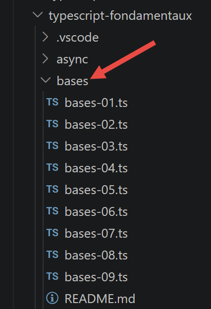
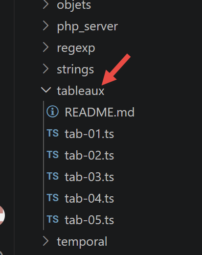
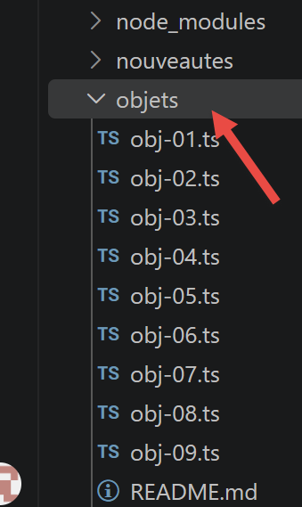
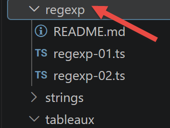
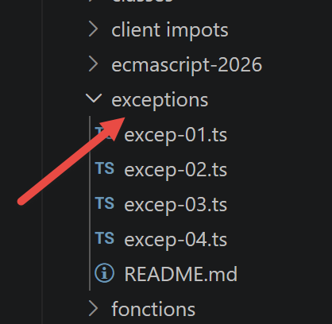
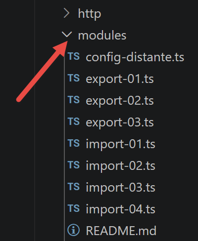
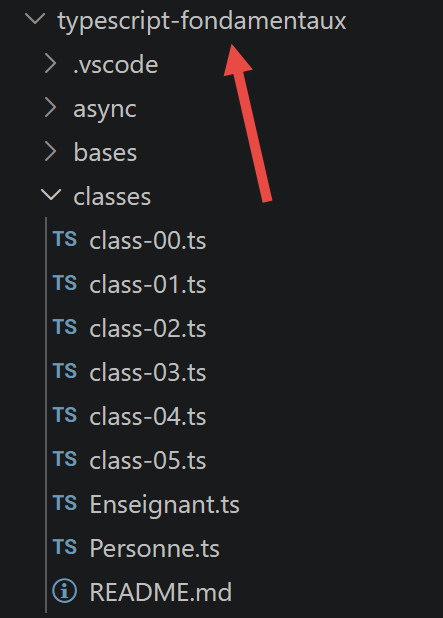

3. Les fondamentaux
3.1. Les bases de TypeScript
Note : dans la suite, le terme [TypeScript] désignera le langage tel que défini par sa version 6, superset typé d'ECMAScript 2026.
Les scripts de ce chapitre se trouvent dans le dossier [bases] du projet.

3.1.1. script [bases-01]
Ce script reprend l'exemple introductif du cours JavaScript original, traduit et typé en TypeScript :
| /* eslint-disable no-constant-condition */
'use strict';
// ceci est un commentaire
// constante
const nom: string = "dupont";
// un affichage écran
console.log("nom : ", nom);
// un tableau avec des éléments de type différent
// [any] car ce tableau mélange volontairement plusieurs types (démonstration)
const tableau: any[] = ["un", "deux", 3, 4];
// son nombre d'éléments
let n: any = tableau.length;
// une boucle
for (let i = 0; i < n; i++) {
console.log("tableau[", i, "] = ", tableau[i]);
}
// initialisation de 2 variables avec le contenu d'un tableau
let [chaine1, chaine2]: string[] = ["chaine1", "chaine2"];
// concaténation des 2 chaînes
const chaine3 = chaine1 + chaine2;
// affichage résultat
console.log([chaine1, chaine2, chaine3]);
// utilisation fonction
affiche(chaine1);
// le type d'une variable peut être connu
afficheType("n", n);
afficheType("chaine1", chaine1);
afficheType("tableau", tableau);
// le type d'une variable peut changer en cours d'exécution
// [n] est typé [any] plus haut : c'est justement ce qui permet à TypeScript
// d'accepter cette réaffectation en cours de route, comme en JavaScript
n = "a changé";
afficheType("n", n);
// une fonction peut rendre un résultat
let res1: any = f1(4);
console.log("res1=", res1);
// une fonction peut rendre un tableau de valeurs
let res2: any, res3: any;
[res1, res2, res3] = f2();
console.log("(res1,res2,res3)=", [res1, res2, res3]);
// on aurait pu récupérer ces valeurs dans un tableau
let t: any[] = f2();
for (let i = 0; i < t.length; i++) {
console.log("t[", i, "]=", t[i]);
}
// des tests
for (let i = 0; i < t.length; i++) {
// n'affiche que les chaînes
if (typeof (t[i]) === "string") {
console.log("t[", i, "]=", t[i]);
}
}
// opérateurs de comparaison == et ===
if ("2" == (2 as any)) {
console.log("avec l'opérateur ==, la chaîne 2 est égale à l'entier 2");
} else {
console.log("avec l'opérateur ==, la chaîne 2 n'est pas égale à l'entier 2");
}
if (("2" as any) === 2) {
console.log("avec l'opérateur ===, la chaîne 2 est égale à l'entier 2");
} else {
console.log("avec l'opérateur ===, la chaîne 2 n'est pas égale à l'entier 2");
}
// d'autres tests
for (let i = 0; i < t.length; i++) {
// n'affiche que les entiers >10
if (typeof (t[i]) === "number" && Math.floor(t[i]) === t[i] && t[i] > 10) {
console.log("t[", i, "]=", t[i]);
}
}
// une boucle while
t = [8, 5, 0, -2, 3, 4];
let i = 0;
let somme = 0;
while (i < t.length && t[i] > 0) {
console.log("t[", i, "]=", t[i]);
somme += t[i];
i++;
}
console.log("somme=", somme);
// arrêt du programme car il n'y a plus de code exécutable
//affiche
//----------------------------------
function affiche(chaine: string): void {
// affiche chaine
console.log("chaine=", chaine);
}
//afficheType
//----------------------------------
function afficheType(name: string, variable: unknown): void {
// affiche le type de variable
console.log("type[variable ", name, "]=", typeof (variable));
}
//----------------------------------
function f1(param: number): number {
// ajoute 10 à param
return param + 10;
}
//----------------------------------
function f2(): any[] {
// rend 3 valeurs
return ["un", 0, 100];
}
|
Commentons ce code :
- ligne 5 : [const nom: string = "dupont"] — en TypeScript, on peut annoter explicitement le type d'une variable avec : type après son nom. Ici, nom est garanti être une chaîne tout au long du programme ;
- ligne 10 : [const tableau: any[] = ...] — ce tableau mélange volontairement des chaînes et des nombres. Le type any[] indique à TypeScript de ne pas vérifier le type des éléments : c'est un choix explicite, différent d'un oubli de typage (que le mode strict interdit) ;
- ligne 12 : [let n: any = tableau.length] — n est typé any car, plus loin (ligne 32), on lui réaffecte une chaîne de caractères après lui avoir affecté un nombre. En JavaScript, une variable peut changer de type librement ; en TypeScript, ceci n'est permis que si on l'a explicitement autorisé avec any (ou une union de types, comme number | string) ;
- ligne 54 : ["2" == (2 as any)] — TypeScript interdit par défaut de comparer avec deux valeurs de types incompatibles (chaîne et nombre). L'expression (2 as any) est un transtypage (*type assertion*) : on dit explicitement à TypeScript « traite cette valeur comme any, ne vérifie pas son type ici », ce qui permet de illustrer volontairement la coercion de type propre à l'opérateur ;
- ligne 93 : la fonction [function afficheType(name: string, variable: unknown): void] type son second paramètre unknown plutôt que any. Contrairement à any, unknown interdit d'utiliser la valeur sans l'avoir d'abord vérifiée — ici, on se contente de typeof(variable), ce qui est autorisé même sur unknown ;
- lignes 86-108 : les fonctions ont désormais un type de retour explicite (: number, : void...), écrit après la liste de paramètres.
Exécutons ce script :
npx tsx bases/bases-01.ts
Résultat de l'exécution :
| nom : dupont
tableau[ 0 ] = un
tableau[ 1 ] = deux
tableau[ 2 ] = 3
tableau[ 3 ] = 4
[ 'chaine1', 'chaine2', 'chaine1chaine2' ]
chaine= chaine1
type[variable n ]= number
type[variable chaine1 ]= string
type[variable tableau ]= object
type[variable n ]= string
res1= 14
(res1,res2,res3)= [ 'un', 0, 100 ]
t[ 0 ]= un
t[ 1 ]= 0
t[ 2 ]= 100
t[ 0 ]= un
avec l'opérateur ==, la chaîne 2 est égale à l'entier 2
avec l'opérateur ===, la chaîne 2 n'est pas égale à l'entier 2
t[ 2 ]= 100
t[ 0 ]= 8
t[ 1 ]= 5
somme= 13
|
3.1.2. script [bases-02]
Le script [bases-02] montre l'utilisation des mots clés [let] et [const] :
| 'use strict';
// pour initialiser une variable, on utilise let ou const
// let pour les variables
let x: number = 4;
x++;
console.log(x);
// const pour les constantes
const y: number = 10;
x += y;
// interdit
y++;
|
- [let] déclare une variable dont la valeur peut changer (lignes 4-5) ;
- [const] déclare une constante dont la valeur ne peut pas changer (ligne 8) ;
- ligne 11 : on tente de réaffecter la constante y avec y++. C'est ici que TypeScript apporte un vrai plus par rapport à JavaScript.
Avant même d'exécuter le script, la vérification de types signale l'erreur :
Résultat de l'exécution :
| bases/bases-02.ts(11,1): error TS2588: Cannot assign to 'y' because it is a constant.
|
En JavaScript pur, cette même erreur n'aurait été détectée qu'à l'exécution. Exécutons malgré tout ce script avec tsx (qui exécute le code sans vérifier les types au préalable, contrairement à tsc) pour voir l'erreur telle que JavaScript la lève réellement :
npx tsx bases/bases-02.ts
Résultat de l'exécution :
| 5
TypeError: Assignment to constant variable.
at bases/bases-02.ts:11:1
|
Important : tsx transpile le TypeScript en JavaScript sans vérification de types (comme le fait Babel), pour une exécution rapide pendant le développement. C'est pourquoi ce script s'exécute (et plante à l'exécution) même s'il ne compile pas avec tsc. Pour être averti de l'erreur avant l'exécution, on se fie à VSCode (qui utilise tsc en tâche de fond) ou à la commande npm run check.
3.1.3. script [bases-03]
Illustre la portée des variables globales, visibles à l'intérieur d'une fonction :
| 'use strict';
// portée des variables
let count: number = 1;
function doSomething(): void {
// count est ici connu
console.log("count=", count);
}
// appel
doSomething();
|
npx tsx bases/bases-03.ts
Résultat de l'exécution :
3.1.4. script [bases-04]
Une variable locale à une fonction cache (masque) une variable globale de même nom :
| 'use strict';
// portée des variables
const count: number = 1;
function doSomething(): void {
// la variable locale cache la variable globale
const count = 2;
console.log("count inside function=", count);
}
// variable globale
console.log("count outside function=", count);
// variable locale
doSomething();
|
npx tsx bases/bases-04.ts
Résultat de l'exécution :
| count outside function= 1
count inside function= 2
|
3.1.5. script [bases-05]
Une variable locale (const count à l'intérieur de la fonction) n'est pas visible en dehors de cette fonction :
| 'use strict';
// portée des variables
function doSomething(): void {
// variable locale à la fonction
const count = 2;
console.log("count inside function=", count);
}
// ici count n'est pas connu
console.log("count outside function=", count);
doSomething();
|
Ici encore, TypeScript détecte le problème dès la compilation — pas besoin d'exécuter le script pour le savoir :
Résultat de l'exécution :
| bases/bases-05.ts(9,40): error TS2304: Cannot find name 'count'.
|
Et à l'exécution avec tsx :
npx tsx bases/bases-05.ts
Résultat de l'exécution :
| ReferenceError: count is not defined
at bases/bases-05.ts:9:40
|
3.1.6. script [bases-06]
Ce script compare la portée de bloc ([let], [const]) à l'absence de portée de bloc ([var]) :
| 'use strict';
// le mot clé [let] permet de définir une variable de portée bloc
{
// la variable [count] n'est connue que dans ce bloc
let count: number = 1;
console.log("count=", count);
}
// ici la variable [count] n'est pas connue
count++;
// le mot clé [const] permet de définir une variable de portée bloc
{
// la variable [count2] n'est connue que dans ce bloc
const count2: number = 1;
console.log("count=", count2);
}
// ici la variable [count2] n'est pas connue
count2++;
// le mot clé [var] ne permet pas de définir une variable de portée bloc
{
// la variable [count3] sera connue globalement
var count3: number = 1;
console.log("count=", count3);
}
// ici la variable [count3] est connue
count3++;
|
- une variable déclarée avec [let] ou [const] à l'intérieur d'un bloc { } n'existe que dans ce bloc ;
- une variable déclarée avec [var] ignore les blocs : elle reste visible dans toute la fonction (ou tout le script) qui l'entoure — c'était le seul comportement disponible avant ECMAScript 2015, source de bien des bugs, d'où la recommandation de toujours préférer [let]/[const].
Compilation :
Résultat de l'exécution :
| bases/bases-06.ts(9,1): error TS2552: Cannot find name 'count'. Did you mean 'count3'?
bases/bases-06.ts(18,1): error TS2552: Cannot find name 'count2'. Did you mean 'count3'?
|
Exécution (le script s'arrête à la première erreur rencontrée, sur count) :
npx tsx bases/bases-06.ts
Résultat de l'exécution :
| count= 1
ReferenceError: count is not defined
at bases/bases-06.ts:9:1
|
3.1.7. script [bases-07]
Panorama des principaux types TypeScript :
| 'use strict';
// type de données jS
const var1: number = 10;
const var2: string = "abc";
const var3: boolean = true;
const var4: number[] = [1, 2, 3];
const var5: { nom: string } = {
nom: 'axèle'
};
const var6: () => number = function () {
return +3;
}
// affichage des types
console.log("typeof(var1)=", typeof (var1));
console.log("typeof(var2)=", typeof (var2));
console.log("typeof(var3)=", typeof (var3));
console.log("typeof(var4)=", typeof (var4));
console.log("typeof(var5)=", typeof (var5));
console.log("typeof(var6)=", typeof (var6));
|
- [var5: { nom: string }] — un type objet inline : on décrit directement, entre accolades, la forme attendue de l'objet, sans avoir à déclarer une interface séparée ;
- [var6: () => number] — le type d'une fonction : une fonction sans paramètre, qui rend un number ;
- à l'exécution, typeof reste celui de JavaScript (il ignore les annotations de type, qui n'existent qu'à la compilation et disparaissent ensuite) : c'est pourquoi typeof(var4) (un tableau) et typeof(var5) (un objet) rendent tous deux "object".
npx tsx bases/bases-07.ts
Résultat de l'exécution :
| typeof(var1)= number
typeof(var2)= string
typeof(var3)= boolean
typeof(var4)= object
typeof(var5)= object
typeof(var6)= function
|
3.1.8. script [bases-08]
Les conversions de type, implicites et explicites, restent celles de JavaScript (TypeScript ne change rien à l'exécution) :
| 'use strict';
// changements implicites de types
// type -->bool
console.log("---------------[Conversion implicite vers un booléen]------------------------------");
showBool("abcd");
showBool("");
showBool([1, 2, 3]);
showBool([]);
showBool(null);
showBool(0.0);
showBool(0);
showBool(4.6);
showBool({});
showBool(undefined);
// [any] car cette fonction accepte volontairement n'importe quel type en entrée
function showBool(data: any): void {
// la conversion de data en booléen se fait automatiquement dans le test qui suit
console.log("[data=", data, "], [type(data)]=", typeof (data), "[valeur booléenne(data)]=", data ? true : false);
}
// changements implicites de type vers un type numérique
console.log("---------------[Conversion implicite vers un nombre]------------------------------");
showNumber("12");
showNumber("45.67");
showNumber("abcd");
function showNumber(data: any): void {
// data + 1 ne marche pas car alors jS fait une concaténation de chaînes plutôt qu'une addition
const nombre = data * 1;
console.log("[data=", data, "], [type(data)]=", typeof (data), "[nombre]=", nombre, "[type(nombre)]=", typeof (nombre));
}
// changements explicites de types vers un booléen
console.log("---------------[Conversion explicite vers un booléen]------------------------------");
showBool2("abcd");
showBool2("");
showBool2([1, 2, 3]);
showBool2([]);
showBool2(null);
showBool2(0.0);
showBool2(0);
showBool2(4.6);
showBool2({});
showBool2(undefined);
function showBool2(data: any): void {
// la conversion de data en booléen se fait explicitement dans le test qui suit
console.log("[", data, "], [type(data)]=", typeof (data), "[valeur booléenne(data)]=", Boolean(data));
}
// changements explicites de type vers Number
console.log("---------------[Conversion explicite vers un nombre]------------------------------");
showNumber2("12.45");
showNumber2(67.8);
showNumber2(true);
showNumber2(null);
function showNumber2(data: any): void {
const nombre = Number(data);
console.log("[data=", data, "], [type(data)]=", typeof (data), "[nombre]=", nombre, "[type(nombre)]=", typeof (nombre));
}
// vers String
console.log("---------------[Conversion explicite vers un string]------------------------------");
showString(5);
showString(6.7);
showString(false);
showString(null);
function showString(data: any): void {
const chaîne = String(data);
console.log("[data=", data, "], [type(data)]=", typeof (data), "[chaîne]=", chaîne, "[type(chaîne)]=", typeof (chaîne));
}
// qqs conversions implicites inattendues
console.log("---------------[Autres cas]------------------------------");
const string1: string = '1000.78';
// concaténation de chaînes par défaut
const data1 = string1 + 1.034;
console.log("data1=", data1, "type=", typeof (data1));
const data2 = 1.034 + string1;
console.log("data2=", data2, "type=", typeof (data2));
// conversion explicite vers nombre
const data3 = Number(string1) + 1.034;
console.log("data3=", data3, "type=", typeof (data3));
// true est converti en le nombre 1
const data4 = (true as any) * 1.18;
console.log("data4=", data4, "type=", typeof (data4));
// false est converti en le nombre 0
const data5 = (false as any) * 1.18;
console.log("data5=", data5, "type=", typeof (data5));
|
- toutes les fonctions de ce script typent leur paramètre data: any : c'est volontaire, puisque le but est justement de montrer comment une même fonction se comporte avec des valeurs de types très différents (chaîne, tableau, null, undefined...) ;
- [Boolean(data)], [Number(data)], [String(data)] sont les conversions explicites — toujours préférables aux conversions implicites, plus prévisibles et plus lisibles ;
- dernier bloc : string1 + 1.034 donne une concaténation de chaînes (le + avec une chaîne à gauche ou à droite privilégie la concaténation), tandis que Number(string1) + 1.034 donne une addition numérique.
npx tsx bases/bases-08.ts
Résultat de l'exécution :
| ---------------[Conversion implicite vers un booléen]------------------------------
[data= abcd ], [type(data)]= string [valeur booléenne(data)]= true
[data= ], [type(data)]= string [valeur booléenne(data)]= false
[data= [ 1, 2, 3 ] ], [type(data)]= object [valeur booléenne(data)]= true
[data= [] ], [type(data)]= object [valeur booléenne(data)]= true
[data= null ], [type(data)]= object [valeur booléenne(data)]= false
[data= 0 ], [type(data)]= number [valeur booléenne(data)]= false
[data= 0 ], [type(data)]= number [valeur booléenne(data)]= false
[data= 4.6 ], [type(data)]= number [valeur booléenne(data)]= true
[data= {} ], [type(data)]= object [valeur booléenne(data)]= true
[data= undefined ], [type(data)]= undefined [valeur booléenne(data)]= false
---------------[Conversion implicite vers un nombre]------------------------------
[data= 12 ], [type(data)]= string [nombre]= 12 [type(nombre)]= number
[data= 45.67 ], [type(data)]= string [nombre]= 45.67 [type(nombre)]= number
[data= abcd ], [type(data)]= string [nombre]= NaN [type(nombre)]= number
---------------[Conversion explicite vers un booléen]------------------------------
[ abcd ], [type(data)]= string [valeur booléenne(data)]= true
[ ], [type(data)]= string [valeur booléenne(data)]= false
[ [ 1, 2, 3 ] ], [type(data)]= object [valeur booléenne(data)]= true
[ [] ], [type(data)]= object [valeur booléenne(data)]= true
[ null ], [type(data)]= object [valeur booléenne(data)]= false
[ 0 ], [type(data)]= number [valeur booléenne(data)]= false
[ 0 ], [type(data)]= number [valeur booléenne(data)]= false
[ 4.6 ], [type(data)]= number [valeur booléenne(data)]= true
[ {} ], [type(data)]= object [valeur booléenne(data)]= true
[ undefined ], [type(data)]= undefined [valeur booléenne(data)]= false
---------------[Conversion explicite vers un nombre]------------------------------
[data= 12.45 ], [type(data)]= string [nombre]= 12.45 [type(nombre)]= number
[data= 67.8 ], [type(data)]= number [nombre]= 67.8 [type(nombre)]= number
[data= true ], [type(data)]= boolean [nombre]= 1 [type(nombre)]= number
[data= null ], [type(data)]= object [nombre]= 0 [type(nombre)]= number
---------------[Conversion explicite vers un string]------------------------------
[data= 5 ], [type(data)]= number [chaîne]= 5 [type(chaîne)]= string
[data= 6.7 ], [type(data)]= number [chaîne]= 6.7 [type(chaîne)]= string
[data= false ], [type(data)]= boolean [chaîne]= false [type(chaîne)]= string
[data= null ], [type(data)]= object [chaîne]= null [type(chaîne)]= string
---------------[Autres cas]------------------------------
data1= 1000.781.034 type= string
data2= 1.0341000.78 type= string
data3= 1001.814 type= number
data4= 1.18 type= number
data5= 0 type= number
|
3.1.9. script [bases-09]
[NOUVEAU depuis 2019] Ce script présente des opérateurs apparus dans ECMAScript 2020-2021, aujourd'hui très couramment utilisés :
| 'use strict';
// ========================================================================
// [NOUVEAU depuis 2019] quelques opérateurs modernes très utilisés au quotidien
// ========================================================================
// ------------------------------------------------------------------------
// 1) l'opérateur de coalescence des nuls [??] (ECMAScript 2020)
// ------------------------------------------------------------------------
// avec [||], une valeur "fausse" (0, "", false, NaN, ...) déclenche la valeur par défaut,
// ce qui n'est pas toujours ce qu'on veut
const quantité1: number = 0;
console.log("avec || : quantité1 || 10 =", quantité1 || 10); // -> 10 (bug ! 0 est pourtant une quantité valide)
// [??] ne déclenche la valeur par défaut que si la valeur est null ou undefined
console.log("avec ?? : quantité1 ?? 10 =", quantité1 ?? 10); // -> 0 (correct)
const quantité2: number | null = null;
console.log("quantité2 ?? 10 =", quantité2 ?? 10); // -> 10 (quantité2 est null)
const quantité3: number | undefined = undefined;
console.log("quantité3 ?? 10 =", quantité3 ?? 10); // -> 10 (quantité3 est undefined)
// ------------------------------------------------------------------------
// 2) le chaînage optionnel [?.] (ECMAScript 2020)
// ------------------------------------------------------------------------
// avant 2020, pour accéder en sécurité à une propriété profonde, il fallait
// tester chaque niveau : if (personne && personne.adresse && personne.adresse.ville) ...
// interface commune : [adresse] est optionnelle (personne2 n'en a pas)
interface PersonneAvecAdresseOptionnelle {
nom: string;
adresse?: { ville: string };
}
const personne1: PersonneAvecAdresseOptionnelle = {
nom: "Dupont",
adresse: {
ville: "Nantes"
}
};
const personne2: PersonneAvecAdresseOptionnelle = {
nom: "Martin"
// pas d'adresse !
};
// [?.] arrête l'évaluation et rend [undefined] dès qu'une étape est null ou undefined
// au lieu de lancer une erreur "Cannot read properties of undefined"
console.log("personne1 ville =", personne1.adresse?.ville);
console.log("personne2 ville =", personne2.adresse?.ville); // -> undefined, pas d'erreur
// on peut combiner [?.] et [??] pour fournir une valeur de remplacement
console.log("personne2 ville (avec défaut) =", personne2.adresse?.ville ?? "ville inconnue");
// [?.] fonctionne aussi sur les appels de méthode...
interface ObjetAvecMéthode {
direBonjour(): string;
direAurevoir?(): string;
}
const objetAvecMéthode: ObjetAvecMéthode = {
direBonjour() {
return "bonjour !";
}
};
console.log("appel méthode existante :", objetAvecMéthode.direBonjour?.());
console.log("appel méthode absente :", objetAvecMéthode.direAurevoir?.()); // -> undefined, pas d'erreur
// ...et sur l'accès à un élément de tableau
const tableauOuNull: number[] | null = null;
console.log("élément d'un tableau absent :", tableauOuNull?.[0]); // -> undefined
// ------------------------------------------------------------------------
// 3) les opérateurs d'affectation logique [||=], [&&=], [??=] (ECMAScript 2021)
// ------------------------------------------------------------------------
// ces opérateurs combinent un test logique et une affectation, en une seule écriture
// [a ??= b] équivaut à [a = a ?? b] : affecte b seulement si a est null/undefined
interface Configuration {
délai: number;
page?: number;
}
const config: Configuration = { délai: 0, page: undefined };
config.délai ??= 1000; // délai vaut déjà 0 (valeur valide) -> reste inchangé
config.page ??= 1; // page est undefined -> devient 1
console.log("config après ??= :", config);
// [a ||= b] équivaut à [a = a || b] : affecte b si a est "faux" (0, "", null, undefined, false...)
let messageAffiché: string = "";
messageAffiché ||= "message par défaut";
console.log("messageAffiché après ||= :", messageAffiché);
// [a &&= b] équivaut à [a = a && b] : affecte b seulement si a est déjà "vrai"
interface UtilisateurConnecté {
nom: string;
connecté?: boolean;
}
let utilisateurConnecté: UtilisateurConnecté | null = { nom: "Ana" };
utilisateurConnecté &&= { ...utilisateurConnecté, connecté: true };
console.log("utilisateurConnecté après &&= :", utilisateurConnecté);
// ------------------------------------------------------------------------
// 4) séparateurs numériques [_] (ECMAScript 2021)
// ------------------------------------------------------------------------
// purement visuel : rend les grands nombres plus lisibles dans le code source
const unMillion: number = 1_000_000;
const carteBancaire: bigint = 1234_5678_9012_3456n; // ici combiné avec un BigInt (voir plus bas)
console.log("unMillion =", unMillion);
console.log("carteBancaire =", carteBancaire);
// ------------------------------------------------------------------------
// 5) le type [BigInt] (ECMAScript 2020)
// ------------------------------------------------------------------------
// le type [number] de JavaScript perd sa précision au-delà de 2^53 environ
console.log("Number.MAX_SAFE_INTEGER =", Number.MAX_SAFE_INTEGER);
console.log("Number.MAX_SAFE_INTEGER + 1 =", Number.MAX_SAFE_INTEGER + 1);
console.log("Number.MAX_SAFE_INTEGER + 2 =", Number.MAX_SAFE_INTEGER + 2); // -> même résultat que +1, imprécis !
// un [BigInt] se note avec un [n] final, ou se construit avec BigInt(...)
const grandNombre1: bigint = 9007199254740993n;
const grandNombre2: bigint = BigInt("9007199254740993");
console.log("grandNombre1 =", grandNombre1, ", type =", typeof (grandNombre1));
console.log("grandNombre1 === grandNombre2 :", grandNombre1 === grandNombre2);
// un BigInt et un number ne peuvent pas être mélangés directement dans un calcul
try {
console.log((grandNombre1 as any) + 1); // provoque une erreur [TypeError]
} catch (error: any) {
console.log("erreur attendue :", error.message);
}
// il faut convertir explicitement
console.log("grandNombre1 + 1n =", grandNombre1 + 1n);
|
Commentons les nouveautés les plus importantes :
- [??], la coalescence des nuls (ECMAScript 2020) : contrairement à [||], qui déclenche sa valeur par défaut pour toute valeur « fausse » (0, "", false...), [??] ne se déclenche que si la valeur est null ou undefined. C'est le bon choix pour une quantité qui peut légitimement valoir 0 ;
- [?.], le chaînage optionnel (ECMAScript 2020) : arrête l'évaluation et rend undefined dès qu'une étape intermédiaire est null/undefined, au lieu de lancer une erreur. Fonctionne aussi sur les appels de méthode (objet.méthode?.()) et sur l'indexation (tableau?.[0]) ;
- [||=], [&&=], [??=], les opérateurs d'affectation logique (ECMAScript 2021) : combinent un test logique et une affectation en une seule écriture (a ??= b équivaut à a = a ?? b) ;
- les séparateurs numériques 1_000_000 (ECMAScript 2021) : purement visuels, ils rendent les grands nombres plus lisibles dans le code source ;
- le type [BigInt] (ECMAScript 2020), noté avec un n final (9007199254740993n) : contrairement à number, il ne perd pas de précision au-delà de Number.MAX_SAFE_INTEGER. Un BigInt et un number ne peuvent pas être mélangés directement dans un calcul, comme le montre le try/catch du script.
npx tsx bases/bases-09.ts
Résultat de l'exécution :
| avec || : quantité1 || 10 = 10
avec ?? : quantité1 ?? 10 = 0
quantité2 ?? 10 = 10
quantité3 ?? 10 = 10
personne1 ville = Nantes
personne2 ville = undefined
personne2 ville (avec défaut) = ville inconnue
appel méthode existante : bonjour !
appel méthode absente : undefined
élément d'un tableau absent : undefined
config après ??= : { 'délai': 0, page: 1 }
messageAffiché après ||= : message par défaut
utilisateurConnecté après &&= : { nom: 'Ana', 'connecté': true }
unMillion = 1000000
carteBancaire = 1234567890123456n
Number.MAX_SAFE_INTEGER = 9007199254740991
Number.MAX_SAFE_INTEGER + 1 = 9007199254740992
Number.MAX_SAFE_INTEGER + 2 = 9007199254740992
grandNombre1 = 9007199254740993n , type = bigint
grandNombre1 === grandNombre2 : true
erreur attendue : Cannot mix BigInt and other types, use explicit conversions
grandNombre1 + 1n = 9007199254740994n
|
3.1.10. Conclusion
Nous avons vu les bases du typage TypeScript : annotations de type sur les variables, paramètres et valeurs de retour de fonctions, les types any et unknown, ainsi que les principaux opérateurs modernes du langage (??, ?., ||=/&&=/??=) et le type BigInt. Le chapitre suivant aborde les tableaux.
3.2. Les tableaux
Les scripts de ce chapitre se trouvent dans le dossier [tableaux] du projet :

3.2.1. script [tab-01]
Le script suivant illustre une caractéristique essentielle des tableaux TypeScript/JavaScript : ce sont des objets manipulés par référence (par pointeur), et non des données recopiées à chaque affectation.
| 'use strict';
// un tableau est un objet manipulé via son adresse
const tab1: number[] = [1, 2, 3];
// copie d'adresses
const tab2: number[] = tab1;
// tab1 et tab2 pointent sur le même tableau
console.log("tab1===tab2 :", tab1 === tab2);
// on peut modifier le tableau en passant indifféremment par tab1 ou tab2
tab2[1] = 10;
console.log("tab1=", tab1);
console.log("tab2=", tab2);
|
npx tsx tableaux/tab-01.ts
Résultat de l'exécution :
| tab1===tab2 : true
tab1= [ 1, 10, 3 ]
tab2= [ 1, 10, 3 ]
|
- tab1===tab2 vaut true : les deux variables pointent vers le même tableau en mémoire ;
- modifier le tableau via tab2 modifie donc aussi ce que l'on voit à travers tab1 — c'est la conséquence directe du fait que tab1 et tab2 désignent une seule et même donnée.
3.2.2. script [tab-02]
Ce script montre que le tableau TypeScript n'a pas de taille fixe, et se comporte plus comme une liste indexée dynamique que comme un tableau classique de langage compilé :
| 'use strict';
// tableau
// [any] car ce tableau va contenir des trous et des valeurs de types différents
const tab: any[] = [];
console.log("tab=", tab, ", longueur=[", tab.length, "]");
console.log("-------------------------------");
// initialisation d'un élément
tab[3] = 100;
tab[1] = "huit";
// tableau
console.log("tab=", tab, ", longueur=[", tab.length, "]");
console.log("-------------------------------");
// toString
console.log("tab.toString=[", tab.toString(), "]");
console.log("-------------------------------");
// les clés du tableau sont ses indices
for (let key of tab.keys()) {
console.log("clé=[", key, "], valeur=[", tab[key], "]");
}
console.log("-------------------------------");
// les valeurs du tableau
for (let value of tab.values()) {
console.log("valeur=[", value, "]");
}
|
- ligne 5 : const tab: any[] = [] — un tableau vide, typé any[] car il va contenir volontairement des « trous » ;
- lignes 9-10 : on peut initialiser l'élément n°3 sans que les éléments 0, 1, 2 existent déjà — ils deviennent des « trous » (empty item), différents de undefined bien qu'ils s'affichent souvent de façon proche ;
- lignes 18-20 : les méthodes keys() et values() rendent des itérateurs, parcourables avec for...of.
npx tsx tableaux/tab-02.ts
Résultat de l'exécution :
| tab= [] , longueur=[ 0 ]
-------------------------------
tab= [ <1 empty item>, 'huit', <1 empty item>, 100 ] , longueur=[ 4 ]
-------------------------------
tab.toString=[ ,huit,,100 ]
-------------------------------
clé=[ 0 ], valeur=[ undefined ]
clé=[ 1 ], valeur=[ huit ]
clé=[ 2 ], valeur=[ undefined ]
clé=[ 3 ], valeur=[ 100 ]
-------------------------------
valeur=[ undefined ]
valeur=[ huit ]
valeur=[ undefined ]
valeur=[ 100 ]
|
3.2.3. script [tab-03]
Ce script présente les principales méthodes de manipulation d'un tableau : parcours, ajout, suppression d'éléments.
| 'use strict';
// un tableau peut contenir différents types de données
// [any] car ce tableau mélange volontairement plusieurs types (démonstration)
const tab: any[] = [1, 2, "un", "deux", true, [10, 20], { prop1: 10, prop2: "abc" }];
// console.log sait afficher le contenu d'un tableau
show(1);
console.log("tab=", tab);
show(2);
// parcours du tableau avec foreach
tab.forEach(element => {
console.log("élément=", element, typeof (element));
});
show("2b");
// une autre écriture pour faire la même chose
tab.forEach(function (element) {
console.log("élément=", element, typeof (element));
});
show(3);
// parcours du tableau avec for
for (let i = 0; i < tab.length; i++) {
console.log("i=", i, "tab[i]=", tab[i]);
}
show(4);
// modification tab[i]
tab[5] = [];
// affichage
console.log("tab=", tab);
show(5);
// on enlève le dernier élément du tableau
let element = tab.pop();
console.log("élément=", element, "tab=", tab);
show(6);
// on ajoute un élément à la fin du tableau
tab.push('xyz');
console.log("tab=", tab);
show(7);
// on ajoute un élément au début du tableau
tab.unshift(1000);
console.log("tab=", tab);
show(8);
// on enlève le 1er élément
element = tab.shift();
console.log("élément=", element, "tab=", tab);
show(9);
// on enlève l'élément n° 2 du tableau
element = tab.splice(2, 1);
console.log("élément=", element, "tab=", tab);
show(10);
// on enlève du tableau deux éléments à partir de l'élément n° 1
element = tab.splice(1, 2);
console.log("élément=", element, "tab=", tab);
// fonction
function show(param: number | string): void {
console.log("[", param, ":::::::::::::::::::::::::::::::::::::::::::::::::::::::::::::::::: ]");
}
|
- ligne 4 : bien que tab soit déclaré const, on peut modifier son contenu (ligne 25, tab[5] = []). C'est le pointeur vers le tableau qui est constant, pas le tableau lui-même ;
- lignes 10-12 : forEach parcourt le tableau et appelle, pour chaque élément, la fonction passée en paramètre — ici écrite avec la notation fléchée element => { ... } ;
- lignes 15-17 : la même chose, écrite avec la syntaxe function traditionnelle — les deux formes sont équivalentes ;
- les méthodes pop(), push(), unshift(), shift(), splice() modifient le tableau en place (elles ont un effet de bord) : c'est une différence importante avec les méthodes « immuables » vues au script tab-05.
npx tsx tableaux/tab-03.ts
Résultat de l'exécution (mis en forme sur une ligne par souci de lisibilité) :
| [ 1 :::::::::::::::::::::::::::::::::::::::::::::::::::::::::::::::::: ]
tab= [ 1, 2, 'un', 'deux', true, [ 10, 20 ], { prop1: 10, prop2: 'abc' } ]
[ 2 :::::::::::::::::::::::::::::::::::::::::::::::::::::::::::::::::: ]
élément= 1 number
élément= 2 number
élément= un string
élément= deux string
élément= true boolean
élément= [ 10, 20 ] object
élément= { prop1: 10, prop2: 'abc' } object
[ 2b :::::::::::::::::::::::::::::::::::::::::::::::::::::::::::::::::: ]
élément= 1 number
élément= 2 number
élément= un string
élément= deux string
élément= true boolean
élément= [ 10, 20 ] object
élément= { prop1: 10, prop2: 'abc' } object
[ 3 :::::::::::::::::::::::::::::::::::::::::::::::::::::::::::::::::: ]
i= 0 tab[i]= 1
i= 1 tab[i]= 2
i= 2 tab[i]= un
i= 3 tab[i]= deux
i= 4 tab[i]= true
i= 5 tab[i]= [ 10, 20 ]
i= 6 tab[i]= { prop1: 10, prop2: 'abc' }
[ 4 :::::::::::::::::::::::::::::::::::::::::::::::::::::::::::::::::: ]
tab= [ 1, 2, 'un', 'deux', true, [], { prop1: 10, prop2: 'abc' } ]
[ 5 :::::::::::::::::::::::::::::::::::::::::::::::::::::::::::::::::: ]
élément= { prop1: 10, prop2: 'abc' } tab= [ 1, 2, 'un', 'deux', true, [] ]
[ 6 :::::::::::::::::::::::::::::::::::::::::::::::::::::::::::::::::: ]
tab= [ 1, 2, 'un', 'deux', true, [], 'xyz' ]
[ 7 :::::::::::::::::::::::::::::::::::::::::::::::::::::::::::::::::: ]
tab= [ 1000, 1, 2, 'un', 'deux', true, [], 'xyz' ]
[ 8 :::::::::::::::::::::::::::::::::::::::::::::::::::::::::::::::::: ]
élément= 1000 tab= [ 1, 2, 'un', 'deux', true, [], 'xyz' ]
[ 9 :::::::::::::::::::::::::::::::::::::::::::::::::::::::::::::::::: ]
élément= [ 'un' ] tab= [ 1, 2, 'deux', true, [], 'xyz' ]
[ 10 :::::::::::::::::::::::::::::::::::::::::::::::::::::::::::::::::: ]
élément= [ 2, 'deux' ] tab= [ 1, true, [], 'xyz' ]
|
3.2.4. script [tab-04]
Ce script présente les méthodes fonctionnelles de transformation d'un tableau : map, reduce, filter, find, findIndex, indexOf, sort.
| 'use strict';
// méthode de manipulation de tableaux
// un tableau
const tab: number[] = [];
for (let i = 0; i < 10; i++) {
tab[i] = i * 10;
}
// affichage
console.log("tab=", tab);
// map
const tab2 = tab.map(element => {
return { prop1: element, prop2: element * element }
});
// affichage
console.log("tab=", tab);
console.log("tab2=", tab2);
// reduce sans valeur initiale
const somme = tab.reduce((accumulator, currentValue) => accumulator + currentValue);
console.log("somme tab=", somme);
// reduce avec valeur initiale 10
const somme2 = tab.reduce((accumulator, currentValue) => accumulator + currentValue, 10);
console.log("somme2 tab=", somme2);
// filter
const tab4 = tab.filter((element) => {
return element > 50;
});
console.log("tab4=", tab4);
// find
const element1 = tab.find((element) => (element > 20));
console.log("élément1=", element1);
// findIndex
const index1 = tab.findIndex((element) => (element === 20));
console.log("index1 20=", index1);
// indexOf
const index2 = tab.indexOf(30);
console.log("index2 30=", index2);
const index3 = tab.indexOf(31);
console.log("index3 31=", index3);
// lastIndexOf
const index4 = [4, 5, 4, 2].lastIndexOf(4);
console.log("index4 4=", index4);
// sort
const tab5 = [4, 5, 4, 2].sort();
console.log("tab5=", tab5);
// sort inverse
const tab6 = [4, 5, 4, 2].sort((e1, e2) => {
if (e1 > e2) {
return -1;
}
else if (e1 === e2) {
return 0;
} else {
return +1;
}
});
console.log("tab6=", tab6);
|
- [map] transforme chaque élément et rend un nouveau tableau — l'original n'est pas modifié ;
- [reduce] « accumule » les éléments un par un dans un résultat unique. Le 1er paramètre de sa fonction (accumulator) est le résultat accumulé jusqu'ici ; le 2nd (currentValue), l'élément courant. Sans valeur initiale (ligne 20), l'accumulateur démarre avec le premier élément du tableau ;
- [filter] garde uniquement les éléments pour lesquels la fonction rend une valeur « vraie » ;
- [find] rend le premier élément satisfaisant le critère (ou undefined), [findIndex] rend son index (ou -1) ;
- [sort] sans paramètre trie dans l'ordre naturel. Avec une fonction de comparaison (e1, e2) => ..., on maîtrise totalement l'ordre : -1 si e1 doit précéder e2, +1 sinon, 0 en cas d'égalité.
npx tsx tableaux/tab-04.ts
Résultat de l'exécution :
| tab= [ 0, 10, 20, 30, 40, 50, 60, 70, 80, 90 ]
tab= [ 0, 10, 20, 30, 40, 50, 60, 70, 80, 90 ]
tab2= [
{ prop1: 0, prop2: 0 },
{ prop1: 10, prop2: 100 },
{ prop1: 20, prop2: 400 },
{ prop1: 30, prop2: 900 },
{ prop1: 40, prop2: 1600 },
{ prop1: 50, prop2: 2500 },
{ prop1: 60, prop2: 3600 },
{ prop1: 70, prop2: 4900 },
{ prop1: 80, prop2: 6400 },
{ prop1: 90, prop2: 8100 }
]
somme tab= 450
somme2 tab= 460
tab4= [ 60, 70, 80, 90 ]
élément1= 30
index1 20= 2
index2 30= 3
index3 31= -1
index4 4= 2
tab5= [ 2, 4, 4, 5 ]
tab6= [ 5, 4, 4, 2 ]
|
3.2.5. script [tab-05]
[NOUVEAU depuis 2019] Ce script présente les nouvelles méthodes des tableaux, apparues entre 2022 et 2023 :
| 'use strict';
// ========================================================================
// [NOUVEAU depuis 2019] nouvelles méthodes des tableaux
// ========================================================================
// ------------------------------------------------------------------------
// 1) at(index) (ECMAScript 2022)
// ------------------------------------------------------------------------
// avant, pour accéder au dernier élément d'un tableau, on écrivait tab[tab.length - 1]
const tab: number[] = [10, 20, 30, 40, 50];
console.log("tab[tab.length - 1] =", tab[tab.length - 1]); // ancienne façon
console.log("tab.at(-1) =", tab.at(-1)); // -> dernier élément, plus lisible
console.log("tab.at(-2) =", tab.at(-2)); // -> avant-dernier élément
console.log("tab.at(0) =", tab.at(0)); // -> équivalent à tab[0]
// .at fonctionne aussi sur les chaînes de caractères
console.log("'bonjour'.at(-1) =", "bonjour".at(-1));
// ------------------------------------------------------------------------
// 2) findLast() et findLastIndex() (ECMAScript 2023)
// ------------------------------------------------------------------------
// symétriques de find() / findIndex()
const nombres: number[] = [5, 12, 8, 21, 3, 17];
const dernierPair = nombres.findLast(n => n % 2 === 0);
console.log("dernier nombre pair =", dernierPair); // -> 8
const indexDernierPair = nombres.findLastIndex(n => n % 2 === 0);
console.log("index du dernier nombre pair =", indexDernierPair);
// ------------------------------------------------------------------------
// 3) les méthodes "immuables" (ECMAScript 2023)
// ------------------------------------------------------------------------
// sort(), reverse(), splice() modifient le tableau original (effet de bord) - cf tab-04.js
// leurs équivalents "to..." rendent un NOUVEAU tableau et laissent l'original intact
// [(number | string)[]] car toSpliced() insère plus bas des chaînes dans ce tableau
const original: (number | string)[] = [4, 5, 4, 2];
// toSorted : comme sort(), mais sans modifier l'original
const trié = original.toSorted();
console.log("original =", original, " (inchangé)");
console.log("trié =", trié);
// toReversed : comme reverse(), mais sans modifier l'original
const inversé = original.toReversed();
console.log("inversé =", inversé, ", original toujours =", original);
// toSpliced : comme splice(), mais sans modifier l'original
// toSpliced(indexDépart, nbÀSupprimer, ...éléments à insérer)
const modifié: (number | string)[] = original.toSpliced(1, 2, "a", "b", "c");
console.log("modifié =", modifié, ", original toujours =", original);
// with(index, valeur) : rend une copie du tableau avec un seul élément remplacé
const remplacé = original.with(0, 999);
console.log("remplacé =", remplacé, ", original toujours =", original);
// ------------------------------------------------------------------------
// pourquoi c'est utile : ces méthodes évitent les effets de bord, ce qui est
// particulièrement apprécié dans les frameworks front (React, Angular, Vue...)
// où l'on doit souvent produire un nouvel état sans modifier l'ancien.
// ------------------------------------------------------------------------
|
- [at(index)] (ES2022) : accès sécurisé et lisible, y compris avec des index négatifs (at(-1) = dernier élément) — plus lisible que tab[tab.length - 1] ;
- [findLast]/[findLastIndex] (ES2023) : comme find/findIndex, mais donne le dernier élément satisfaisant la condition ;
- [toSorted], [toReversed], [toSpliced], [with] (ES2023) : les équivalents immuables de sort, reverse, splice et de l'affectation indexée — ils rendent un nouveau tableau sans modifier l'original, contrairement aux méthodes du script tab-03. Très utile dans les frameworks front (React, Vue...) où l'on doit produire un nouvel état sans modifier l'ancien.
npx tsx tableaux/tab-05.ts
Résultat de l'exécution :
| tab[tab.length - 1] = 50
tab.at(-1) = 50
tab.at(-2) = 40
tab.at(0) = 10
'bonjour'.at(-1) = r
dernier nombre pair = 8
index du dernier nombre pair = 2
original = [ 4, 5, 4, 2 ] (inchangé)
trié = [ 2, 4, 4, 5 ]
inversé = [ 2, 4, 5, 4 ] , original toujours = [ 4, 5, 4, 2 ]
modifié = [ 4, 'a', 'b', 'c', 2 ] , original toujours = [ 4, 5, 4, 2 ]
remplacé = [ 999, 5, 4, 2 ] , original toujours = [ 4, 5, 4, 2 ]
|
3.2.6. Conclusion
Retenons de ce chapitre qu'un tableau est un objet référencé par un pointeur, sans taille fixe, doté d'un riche jeu de méthodes — certaines modifiant le tableau en place (push, sort...), d'autres, plus récentes, rendant systématiquement un nouveau tableau (toSorted, with...). Le chapitre suivant aborde les objets littéraux.
3.3. Les objets littéraux
Nous appelons ici « objets littéraux » des objets définis directement dans le code, par opposition aux instances de [class] (vues au chapitre « Les classes »). Les scripts de ce chapitre se trouvent dans le dossier [objets] du projet :

3.3.1. script [obj-01]
Comme pour les tableaux, un objet est manipulé via un pointeur. En TypeScript, il faut de plus décrire la forme de l'objet avec une interface, avant de pouvoir lui ajouter des propriétés dynamiquement.
| 'use strict';
// un objet vide
// interface : on annonce à l'avance les propriétés qu'on va ajouter dynamiquement,
// car TypeScript (contrairement à JavaScript) exige de connaître la forme d'un objet
interface Obj1 {
prop1?: string;
prop2?: number[];
prop3?: boolean;
[clé: string]: unknown;
}
const obj1: Obj1 = {};
// on peut créer dynamiquement les propriétés de l'objet
obj1.prop1 = "abcd";
console.log('obj1=', obj1);
// autre propriété
obj1.prop2 = [1, 2, 3];
console.log("obj1=", obj1);
// autre propriété avec une notation différente
obj1['prop3'] = true;
console.log("obj1=", obj1);
// obj1 est une référence sur l'objet (pointeur), pas l'objet lui-même
const obj2: Obj1 = obj1;
// obj2 et obj1 pointent sur le même objet
obj2.prop1 = "xyzt";
console.log("obj1=", obj1);
console.log("obj2=", obj2);
// les propriété peuvent être des variables
const var1: string = 'prop1';
console.log('prop1=', obj1[var1]);
|
- lignes 5-9 : l'[interface] Obj1 annonce à l'avance les propriétés qui seront ajoutées (prop1, prop2, prop3, toutes optionnelles avec ?). La ligne [clé: string]: unknown est une signature d'index : elle autorise, en plus, l'ajout de n'importe quelle autre propriété non prévue à l'avance ;
- ligne 19 : obj1.prop3 peut aussi s'écrire obj1['prop3'] — cette dernière notation est indispensable lorsque le nom de la propriété est en fait le contenu d'une variable (lignes 28-29) ;
- lignes 22-25 : const obj2: Obj1 = obj1 est une copie de référence, pas une copie de l'objet — modifier obj2 modifie donc aussi ce que l'on voit à travers obj1, comme pour les tableaux.
Résultat de l'exécution :
| obj1= { prop1: 'abcd' }
obj1= { prop1: 'abcd', prop2: [ 1, 2, 3 ] }
obj1= { prop1: 'abcd', prop2: [ 1, 2, 3 ], prop3: true }
obj1= { prop1: 'xyzt', prop2: [ 1, 2, 3 ], prop3: true }
obj2= { prop1: 'xyzt', prop2: [ 1, 2, 3 ], prop3: true }
prop1= xyzt
|
3.3.2. script [obj-02]
Ce script montre un objet à plusieurs niveaux, et introduit l'objet global [JSON], qui convertit un objet en chaîne de caractères et réciproquement.
| 'use strict';
// un objet à plusieurs niveaux
interface PersonneFamille {
prénom: string;
âge: number;
père: { prénom: string; âge: number };
mère: { prénom: string; âge: number };
}
const personne: PersonneFamille = {
prénom: "martin",
âge: 12,
père: {
prénom: "paul",
âge: 45
},
mère: {
prénom: "micheline",
âge: 42
}
}
// accès aux propriétés
console.log("prénom personne=", personne.prénom);
console.log("prénom mère=", personne.mère.prénom);
personne.mère.âge = 40;
console.log("âge mère=", personne.mère.âge);
// console.log sait afficher des objets
console.log("personne=", personne);
console.log("mère=", personne.mère);
// on peut aussi afficher la chaîne jSON de l'objet
let json: string = JSON.stringify(personne);
console.log("jSON=", json);
// on peut relire le jSON
let personne2: PersonneFamille = JSON.parse(json);
console.log("père=", personne2.père);
|
- lignes 3-8 : une [interface] peut elle-même contenir des types objets imbriqués (père, mère) ;
- ligne 30 : [JSON.stringify] transforme un objet TypeScript en chaîne JSON ;
- ligne 33 : [JSON.parse] fait l'inverse — on notera que le résultat est typé PersonneFamille, ce qui suppose que la chaîne JSON respecte bien cette forme (TypeScript ne le vérifie pas à l'exécution, seulement à la compilation).
Résultat de l'exécution :
| prénom personne= martin
prénom mère= micheline
âge mère= 40
personne= {
'prénom': 'martin',
'âge': 12,
'père': { 'prénom': 'paul', 'âge': 45 },
'mère': { 'prénom': 'micheline', 'âge': 40 }
}
mère= { 'prénom': 'micheline', 'âge': 40 }
jSON= {"prénom":"martin","âge":12,"père":{"prénom":"paul","âge":45},"mère":{"prénom":"micheline","âge":40}}
père= { 'prénom': 'paul', 'âge': 45 }
|
3.3.3. script [obj-03]
Ce script introduit la notion de getter/setter d'une propriété d'un objet :
| 'use strict';
// getters et setters d'un objet
interface PersonneAvecNom {
_nom?: string;
nom: string;
}
const personne: PersonneAvecNom = {
// getter
get nom() {
console.log("getter nom");
return this._nom as string;
},
// setter
set nom(unNom: string) {
console.log("setter nom");
this._nom = unNom;
}
};
// setter
personne.nom = "Hercule";
// getter
console.log(personne.nom);
// l'objet lui-même
console.log("personne=", personne);
// ça n'empêche pas d'accéder à la propriété [_nom] directement
personne._nom = "xyz";
console.log("personne=", personne);
|
- lignes 3-6 : l'[interface] PersonneAvecNom déclare _nom en propriété optionnelle (préfixée d'un underscore par convention, pour signaler que c'est une propriété « privée », même si TypeScript ne l'empêche pas d'y accéder — voir le vrai encapsulement avec #champ au chapitre « Les classes ») ;
- lignes 8-11 : le [getter] — mot clé get plutôt que function — rend la valeur de _nom ;
- lignes 13-16 : le [setter] — mot clé set — reçoit la valeur affectée et peut la valider avant de la stocker ;
- ligne 20 : personne.nom = "Hercule" appelle implicitement le setter ;
- ligne 22 : personne.nom appelle implicitement le getter ;
- ligne 26 : rien n'empêche d'accéder directement à _nom — l'encapsulation par convention dépend de la discipline du développeur.
Résultat de l'exécution :
| setter nom
getter nom
Hercule
personne= { nom: [Getter/Setter], _nom: 'Hercule' }
personne= { nom: [Getter/Setter], _nom: 'xyz' }
|
On notera que [console.log] affiche [Getter/Setter] pour signaler que nom est géré par des accesseurs plutôt que d'être une valeur directe.
3.3.4. script [obj-04]
Trois façons d'écrire le nom d'une propriété, deux façons d'y accéder, et une notation raccourcie :
| 'use strict';
// les noms des propriétés d'un objet peuvent être littéraux [nom], être entourés d'apostrophes ['nom']
// ou de guillements ["nom"]
interface NomPrénom {
nom: string;
prénom: string;
}
// littéraux
const obj1: NomPrénom = {
nom: "martin",
prénom: "jean"
};
console.log("prénom=", obj1.prénom);
// entourés d'apostrophes
const obj2: NomPrénom = {
'nom': "martin",
'prénom': "jean"
};
console.log("nom=", obj2.nom);
// entourés de guillemets
const obj3: NomPrénom = {
"nom": "martin",
"prénom": "jean"
};
// deux syntaxes possibles pour accéder à la propriété [nom]
console.log("nom=", obj3.nom);
console.log("nom=", obj3['nom']);
// notation raccourcie équivalente à {obj1:obj1, obj2:obj2}
const obj4 = {
obj1, obj2
}
console.log("obj4=", obj4)
|
- les noms de propriétés peuvent s'écrire littéralement (nom:), entre apostrophes ('nom':) ou entre guillemets ("nom":) — les trois sont équivalents ;
- ligne 31 : obj3.nom et obj3['nom'] accèdent à la même propriété ;
- lignes 34-36 : const obj4 = { obj1, obj2 } est la notation raccourcie de { obj1: obj1, obj2: obj2 } — très utilisée dès qu'on regroupe des variables existantes dans un objet.
Résultat de l'exécution :
| prénom= jean
nom= martin
nom= martin
nom= martin
obj4= {
obj1: { nom: 'martin', 'prénom': 'jean' },
obj2: { nom: 'martin', 'prénom': 'jean' }
}
|
3.3.5. script [obj-05]
Un objet littéral peut avoir des propriétés de type fonction — on se rapproche alors de la notion de classe (propriétés + méthodes) :
| 'use strict';
// un objet peut avoir des propriétés de type [function]
interface PersonneAvecToString {
prénom: string;
âge: number;
père: { prénom: string; âge: number };
mère: { prénom: string; âge: number };
toString: () => string;
}
const personne: PersonneAvecToString = {
// propriétés
prénom: "martin",
âge: 12,
père: {
prénom: "paul",
âge: 45
},
mère: {
prénom: "micheline",
âge: 42
},
// méthode
toString: function () {
return JSON.stringify(this);
}
}
// usage
console.log("personne=", personne);
console.log("personne.toString=", personne.toString());
|
- ligne 4 : l'[interface] déclare toString: () => string — le type d'une méthode se déclare comme celui d'une propriété fonction ;
- ligne 25 : à l'intérieur de la méthode, [this] désigne l'objet lui-même — this.prénom est la propriété prénom de cet objet.
Résultat de l'exécution :
| personne= {
'prénom': 'martin',
'âge': 12,
'père': { 'prénom': 'paul', 'âge': 45 },
'mère': { 'prénom': 'micheline', 'âge': 42 },
toString: [Function: toString]
}
personne.toString= {"prénom":"martin","âge":12,"père":{"prénom":"paul","âge":45},"mère":{"prénom":"micheline","âge":42}}
|
3.3.6. script [obj-06]
Ce script montre comment parcourir les propriétés d'un objet sans en connaître les noms à l'avance :
| 'use strict';
// un objet peut avoir des propriétés de type [function]
interface PersonneAvecToString {
prénom: string;
âge: number;
père: { prénom: string; âge: number };
mère: { prénom: string; âge: number };
toString: () => string;
// index signature nécessaire pour permettre le parcours dynamique for..in ci-dessous
[clé: string]: unknown;
}
let personne: PersonneAvecToString = {
// propriétés
prénom: "martin",
âge: 12,
père: {
prénom: "paul",
âge: 45
},
mère: {
prénom: "micheline",
âge: 42
},
// méthode
toString: function () {
return JSON.stringify(this);
}
}
// usage
console.log(personne);
// propriétés
console.log("-----------------------");
for (const key in personne) {
// eslint-disable-next-line no-prototype-builtins
if (personne.hasOwnProperty(key)) {
const element = personne[key];
console.log(key, "=", element);
}
}
// pour échapper à l'avertissement eslint (1)
console.log("-----------------------");
for (const key in personne) {
if (Object.prototype.hasOwnProperty.call(personne, key)) {
const element = personne[key];
console.log(key, "=", element);
}
}
// pour échapper à l'avertissement eslint (2)
console.log("-----------------------");
for (const key in personne) {
// eslint-disable-next-line no-prototype-builtins
if (personne.hasOwnProperty(key)) {
const element = personne[key];
console.log(key, "=", element);
}
}
|
- ligne 11 : la signature d'index [clé: string]: unknown est nécessaire ici pour que TypeScript autorise l'accès dynamique personne[key] de la boucle for...in ;
- lignes 35-41 : for (const key in personne) parcourt les noms de propriétés. Le test hasOwnProperty élimine les propriétés éventuellement héritées (non présentes dans ce script, mais bonne pratique systématique) ;
- ce script propose 3 écritures équivalentes de ce test — la 2ᵉ (Object.prototype.hasOwnProperty.call(...)) est la plus robuste, la 3ᵉ se contente de désactiver l'avertissement ESLint correspondant. Depuis 2022, la méthode Object.hasOwn() (chapitre suivant, obj-09) rend ce choix inutile.
Résultat de l'exécution :
| {
'prénom': 'martin',
'âge': 12,
'père': { 'prénom': 'paul', 'âge': 45 },
'mère': { 'prénom': 'micheline', 'âge': 42 },
toString: [Function: toString]
}
-----------------------
prénom = martin
âge = 12
père = { 'prénom': 'paul', 'âge': 45 }
mère = { 'prénom': 'micheline', 'âge': 42 }
toString = [Function: toString]
-----------------------
prénom = martin
âge = 12
père = { 'prénom': 'paul', 'âge': 45 }
mère = { 'prénom': 'micheline', 'âge': 42 }
toString = [Function: toString]
-----------------------
prénom = martin
âge = 12
père = { 'prénom': 'paul', 'âge': 45 }
mère = { 'prénom': 'micheline', 'âge': 42 }
toString = [Function: toString]
|
3.3.7. script [obj-07]
Ce script montre la déstructuration d'un objet — une notation qui extrait directement des propriétés dans des variables :
| 'use strict';
// déstructuration
interface NomPrénom {
nom: string;
prénom: string;
}
// littéraux
const obj1: NomPrénom = {
nom: "martin",
prénom: "jean"
};
// déstructuration obj1 dans variables [n,p]
const { nom: n, prénom: p } = obj1;
console.log("n=", n, "p=", p);
// déstructuration obj1 dans variables [n2,p2]
function f({ nom: n2, prénom: p2 }: NomPrénom): void {
console.log("f-n2=", n2, "f-p2=", p2);
}
f(obj1);
// déstructuration obj1 dans variables [nom,prénom]
function g({ nom: nom, prénom: prénom }: NomPrénom): void {
console.log("g-nom=", nom, "g-prénom=", prénom);
}
g(obj1);
// déstructuration obj1 dans variables [nom,prénom]
// avec notation raccoucie équivalente à h({nom:nom,prénom:prénom})
function h({ nom, prénom }: NomPrénom): void {
console.log("h-nom=", nom, "h-prénom=", prénom);
}
h(obj1);
|
- ligne 16 : const { nom: n, prénom: p } = obj1 crée deux variables n et p, équivalent à const n = obj1.nom; const p = obj1.prénom ;
- lignes 19-22, 24-27, 30-33 : la déstructuration fonctionne aussi directement dans les paramètres d'une fonction — très courant en TypeScript/React pour extraire des propriétés d'un objet de configuration ou de props ;
- ligne 33 : function h({ nom, prénom }: NomPrénom) est un raccourci de { nom: nom, prénom: prénom } — quand le nom de la variable créée est identique au nom de la propriété, on peut l'omettre.
Résultat de l'exécution :
| n= martin p= jean
f-n2= martin f-p2= jean
g-nom= martin g-prénom= jean
h-nom= martin h-prénom= jean
|
3.3.8. script [obj-08]
Ce script montre comment obtenir une copie superficielle d'un objet, grâce à l'opérateur de spread ... :
| 'use strict'
// clônage d'objets
interface NomPrénom {
nom: string;
prénom: string;
}
const obj1: NomPrénom = {
nom: "martin",
prénom: "jean"
};
// clône de obj1 avec l'opérateur de spread
const obj2: NomPrénom = { ...obj1 }
// vérifications
// obj2 pointe sur une copie de obj1
console.log("obj2===obj1 :", obj1 === obj2)
console.log("obj2=", obj2)
|
Résultat de l'exécution :
| obj2===obj1 : false
obj2= { nom: 'martin', 'prénom': 'jean' }
|
- obj2===obj1 vaut false : les deux références ne pointent pas sur le même objet ;
- obj2 contient bien une copie des propriétés de obj1 — mais attention, comme on le verra au script suivant, c'est une copie superficielle seulement.
3.3.9. script [obj-09]
[NOUVEAU depuis 2019] Ce script présente trois compléments pratiques apparus depuis 2020 : [Object.hasOwn], [structuredClone], et la combinaison du chaînage optionnel avec la coalescence des nuls sur des objets imbriqués.
| 'use strict';
// ========================================================================
// [NOUVEAU depuis 2019] manipulation d'objets : quelques ajouts pratiques
// ========================================================================
// ------------------------------------------------------------------------
// 1) Object.hasOwn(objet, propriété) (ECMAScript 2022)
// ------------------------------------------------------------------------
// avant, pour savoir si une propriété appartient en direct à un objet (et n'est pas
// héritée par la chaîne des prototypes), on écrivait :
// objet.hasOwnProperty(propriété) -> peut planter si l'objet redéfinit hasOwnProperty
// Object.prototype.hasOwnProperty.call(objet, propriété) -> correct mais verbeux (cf. objets/obj-06.js)
// [Object.hasOwn] fait ce travail simplement et sans risque
interface NomPrénom {
nom: string;
prénom: string;
[clé: string]: unknown;
}
const personne: NomPrénom = { nom: "Dupont", prénom: "Jean" };
console.log("Object.hasOwn(personne, 'nom') =", Object.hasOwn(personne, "nom"));
console.log("Object.hasOwn(personne, 'âge') =", Object.hasOwn(personne, "âge"));
// utilisation typique dans un parcours de propriétés
console.log("-----------------------");
for (const clé in personne) {
if (Object.hasOwn(personne, clé)) {
console.log(clé, "=", personne[clé]);
}
}
// ------------------------------------------------------------------------
// 2) structuredClone(objet) (API globale disponible depuis node 17)
// ------------------------------------------------------------------------
// obj-08.js montre le clônage superficiel (shallow) avec l'opérateur de spread [...obj]
// mais un spread ne clône que le 1er niveau : les sous-objets restent partagés !
interface PersonneAvecAdresse {
nom: string;
adresse: { ville: string; codePostal: string };
}
const original: PersonneAvecAdresse = {
nom: "Dupont",
adresse: { ville: "Nantes", codePostal: "44000" }
};
// clônage superficiel avec spread
const copieSuperficielle: PersonneAvecAdresse = { ...original };
copieSuperficielle.adresse.ville = "Angers"; // modifie aussi l'adresse de [original] !
console.log("copie superficielle a modifié l'original :", original.adresse.ville === "Angers");
// remise à zéro pour le test suivant
original.adresse.ville = "Nantes";
// [structuredClone] fait un clônage profond (deep clone) : tous les sous-objets sont recopiés
const copieProfonde: PersonneAvecAdresse = structuredClone(original);
copieProfonde.adresse.ville = "Angers";
console.log("copie profonde n'a pas modifié l'original :", original.adresse.ville === "Nantes");
console.log("original =", original);
console.log("copieProfonde =", copieProfonde);
// ------------------------------------------------------------------------
// 3) chaînage optionnel + nullish sur des méthodes d'objet imbriquées
// ------------------------------------------------------------------------
// combinaison très fréquente en pratique pour lire une configuration partielle
interface ConfigurationApparence {
apparence?: { thème?: string };
}
function afficheThème(configuration?: ConfigurationApparence): void {
// si configuration, configuration.apparence ou configuration.apparence.thème est absent,
// on retombe sur "clair" sans jamais planter
const thème = configuration?.apparence?.thème ?? "clair";
console.log("thème =", thème);
}
afficheThème({ apparence: { thème: "sombre" } });
afficheThème({ apparence: {} });
afficheThème({});
afficheThème(undefined);
|
- [Object.hasOwn(objet, propriété)] (ES2022) remplace avantageusement objet.hasOwnProperty(...) (voir script obj-06) : plus simple à lire, et jamais piégé si l'objet redéfinit lui-même hasOwnProperty ;
- [structuredClone(objet)] (disponible nativement depuis Node 17) fait un clônage profond : contrairement au spread { ...obj } du script obj-08, qui ne recopie que le premier niveau, structuredClone recopie aussi les sous-objets — modifier la copie ne modifie jamais l'original, à quelque niveau que ce soit ;
- la fonction afficheThème combine ?. et ?? pour lire une configuration à plusieurs niveaux, potentiellement incomplète, sans jamais planter et avec une valeur de repli claire.
Résultat de l'exécution :
| Object.hasOwn(personne, 'nom') = true
Object.hasOwn(personne, 'âge') = false
-----------------------
nom = Dupont
prénom = Jean
copie superficielle a modifié l'original : true
copie profonde n'a pas modifié l'original : true
original = { nom: 'Dupont', adresse: { ville: 'Nantes', codePostal: '44000' } }
copieProfonde = { nom: 'Dupont', adresse: { ville: 'Angers', codePostal: '44000' } }
thème = sombre
thème = clair
thème = clair
thème = clair
|
3.3.10. Conclusion
Les scripts de ce chapitre ont montré que l'objet littéral TypeScript est proche de l'objet instance de classe : on peut y définir propriétés, méthodes, getters/setters — avec, en plus, une [interface] qui en décrit précisément la forme à la compilation. C'est un objet dynamique, comparable à un dictionnaire, dont les éléments peuvent être de tout type, y compris des fonctions.
3.4. Les chaînes de caractères
Les scripts de ce chapitre se trouvent dans le dossier [strings] du projet :

3.4.1. script [str-01]
La première chose à comprendre est qu'une fois une chaîne créée, elle n'est plus modifiable (elle est immuable). On dispose de nombreuses méthodes pour produire une nouvelle chaîne à partir de la chaîne initiale, mais celle-ci reste toujours inchangée.
| 'use strict';
// les chaînes de caractères sont en lecture seule (on ne peut pas les modifier)
// une chaîne
const chaîne1: string = "abcd ";
// type
console.log("typeof(chaîne1)=", typeof (chaîne1));
// caractère n° 2
console.log("chaîne1[2]=", chaîne1[2]);
// provoque une erreur
// [mise à jour TypeScript] TypeScript détecte l'erreur dès la compilation :
// une chaîne n'a qu'un accès en lecture par index
// @ts-expect-error : une chaîne de caractères est en lecture seule
chaîne1[2] = "0";
|
- ligne 10 : chaîne1[2] accède en lecture au 3ᵉ caractère de la chaîne (index 0) ;
- ligne 15 : chaîne1[2] = "0" tente une écriture, ce que TypeScript refuse dès la compilation, grâce à @ts-expect-error — le commentaire au-dessus confirme que cette erreur est attendue, et sert justement à la démontrer.
Vérification de types :
Résultat de l'exécution :
| strings/str-01.ts(15,1): error TS2540: Cannot assign to '2' because it is a read-only property.
|
Exécution avec tsx (sans vérification de types préalable) :
npx tsx strings/str-01.ts
Résultat de l'exécution :
| typeof(chaîne1)= string
chaîne1[2]= c
TypeError: Cannot assign to read only property '2' of string 'abcd '
at strings/str-01.ts:15:10
|
3.4.2. script [str-02]
Une chaîne de caractères peut être de deux types : [string] (chaîne littérale) ou [object] (instance de la classe [String]) :
| 'use strict';
// les chaînes de caractères peuvent être de deux types
// une chaîne littérale
const chaîne1: string = "abcd ";
// type
console.log("typeof(chaîne1)=", typeof (chaîne1));
// instance de String
// eslint-disable-next-line @typescript-eslint/ban-types -- ici [String] (objet) est le type exact voulu, pas [string] (primitif) : c'est justement le sujet de la démo
const chaîne2: String = new String("xyzt");
// type
console.log("typeof(chaîne2)=", typeof (chaîne2));
// autre écriture (sans new)
const chaîne3: string = String("12 34");
// type
console.log("typeof(chaîne3)=", typeof (chaîne3));
// le type [string] et le type [object] offrent les mêmes méthodes, celles de la classe String
console.log("chaîne1.length=", chaîne1.length);
console.log("chaîne2.length=", chaîne2.length);
|
- ligne 6 : la façon usuelle de définir une chaîne — chaîne1 sera de type string ;
- ligne 11 : new String(...) construit une chaîne objet — chaîne2 sera de type object. Ici, le type TypeScript déclaré est String (avec majuscule), le type *objet enveloppe*, différent du type primitif string (minuscule) ;
- les deux types offrent les mêmes méthodes, celles de la classe String.
npx tsx strings/str-02.ts
Résultat de l'exécution :
| typeof(chaîne1)= string
typeof(chaîne2)= object
typeof(chaîne3)= string
chaîne1.length= 5
chaîne2.length= 4
|
3.4.3. script [str-03]
Ce script montre l'interpolation de variables dans une chaîne :
| 'use strict';
// chaine
const chaîne: string = "Introduction à Javascript par l'exemple";
// chaîne avec interpolation de variables
const str: string = `[${chaîne}].substr(3, 2)=` + chaîne.substr(3, 2)
console.log(str);
|
- ligne 6 : une chaîne entourée d'apostrophes inverses (*backticks*, AltGr-7 sur un clavier français) peut contenir des expressions ${variable}, remplacées par la valeur de la variable — on parle de chaîne gabarit (*template string*).
npx tsx strings/str-03.ts
Résultat de l'exécution :
| [Introduction à Javascript par l'exemple].substr(3, 2)=ro
|
3.4.4. script [str-04]
La chaîne gabarit reste insuffisante pour un formatage précis (largeur, alignement, précision décimale...). On utilise pour cela un package externe, [sprintf-js], qui reproduit les fonctions printf/sprintf bien connues d'autres langages. Il s'installe avec npm install sprintf-js, et s'importe simplement :
| 'use strict';
// utilisation d'un package externe pour disposer de la fonction sprintf
import { sprintf } from 'sprintf-js';
// chaine
const chaîne: string = "Introduction à Javascript par l'exemple";
// méthode
console.log(sprintf("[%s].substr(3,2)=[%s]", chaîne, chaîne.substr(3, 2)));
|
Historique : en 2019, l'instruction import posait problème avec Node.js (qui ne comprenait pas encore nativement les modules ECMAScript), et nécessitait un package intermédiaire appelé esm. Ce n'est plus le cas depuis Node 12+ : notre projet, avec "type": "module" dans package.json, utilise import/export nativement, sans aucune configuration supplémentaire.
npx tsx strings/str-04.ts
Résultat de l'exécution :
| [Introduction à Javascript par l'exemple].substr(3,2)=[ro]
|
3.4.5. script [str-05]
La fonction [sprintf] accepte, comme en C, des « formats » introduits par % : %s (chaîne), %d (entier), %f (réel), %j (JSON), %T (type), %t (booléen), avec des modificateurs de largeur et d'alignement (%20s, %-20s, %04d...) :
| 'use strict';
// utilisation d'un package externe pour disposer de la fonction sprintf
import { sprintf } from 'sprintf-js';
// chaine
const chaîne: string = "Javascript";
// chaînes de caractères
console.log(sprintf("[%s, %%s]=>[%s]", chaîne, chaîne));
console.log(sprintf("[%s, %%20s]=>[%20s]", chaîne, chaîne));
console.log(sprintf("[%s, %%-20s]=>[%-20s]", chaîne, chaîne));
// entiers
console.log(sprintf("[%d, %%d]=>[%d]", 10, 10));
console.log(sprintf("[%d, %%4d]=>[%4d]", 10, 10));
console.log(sprintf("[%d, %%-4d]=>[%-4d]", 10, 10));
console.log(sprintf("[%d, %%04d]=>[%04d]", 10, 10));
// réels
console.log(sprintf("[%f, %%f]=>[%f]", -10.5, -10.5));
console.log(sprintf("[%f, %%10.2f]=>[%10.2f]", -10.5, -10.5));
console.log(sprintf("[%f, %%-10.2f]=>[%-10.2f]", -10.5, -10.5));
console.log(sprintf("[%f, %%010.3f]=>[%010.3f]", -10.5, -10.5));
// json
console.log(sprintf("personne (%%j)=%j", { nom: "mathieu", âge: 34 }));
// type
console.log(sprintf("type personne (%%T)=%T", { nom: "mathieu", âge: 34 }));
// booléen
console.log(sprintf("booléen (%%t)=%t", 4 === 4));
|
npx tsx strings/str-05.ts
Résultat de l'exécution :
| [Javascript, %s]=>[Javascript]
[Javascript, %20s]=>[ Javascript]
[Javascript, %-20s]=>[Javascript ]
[10, %d]=>[10]
[10, %4d]=>[ 10]
[10, %-4d]=>[10 ]
[10, %04d]=>[0010]
[-10.5, %f]=>[-10.5]
[-10.5, %10.2f]=>[ -10.50]
[-10.5, %-10.2f]=>[-10.50 ]
[-10.5, %010.3f]=>[-00010.500]
personne (%j)={"nom":"mathieu","âge":34}
type personne (%T)=object
booléen (%t)=true
|
3.4.6. script [str-06]
Ce script présente les méthodes les plus courantes de la classe [String] :
| 'use strict';
// utilisation d'un package externe pour disposer de la fonction sprintf
import { sprintf } from 'sprintf-js';
// chaine
const chaîne: string = " Introduction à Javascript ";
// quelques méthodes
// substr(10,2) : 2 caractères à partir du n° 10
console.log(sprintf("[%s].substr(10,2)=[%s]", chaîne, chaîne.substr(10, 2)));
// trim : élimination des blancs de début et fin de chaîne (blanc=\b \t \r \n \f)
console.log(sprintf("[%s].trim()=[%s]", chaîne, chaîne.trim()));
// toLowerCase : transformation en minuscules
console.log(sprintf("[%s].toLowerCase=[%s]", chaîne, chaîne.toLowerCase()));
// toUpperCase : transformation en majuscules
console.log(sprintf("[%s].toUpperCase=[%s]", chaîne, chaîne.toUpperCase()));
// indexOf : position d'une chaîne cherchée dans la chaîne, -1 si la sous-chaîne n'existe pas
console.log(sprintf("[%s].indexOf('Java')=[%s]", chaîne, chaîne.indexOf('Java')));
console.log(sprintf("[%s].trim().indexOf('abcd')=[%s]", chaîne, chaîne.indexOf('abcd')));
// includes : vrai si la chaîne cherchée est dans la chaîne
console.log(sprintf("[%s].includes('Java')=[%s]", chaîne, chaîne.includes('Java')));
// length : longueur de la chaîne - n'est pas une méthode mais une propriété
console.log(sprintf("[%s].length=[%s]", chaîne, chaîne.length));
// slice (7,10) : chaînes des caractères n° 7 à 9
console.log(sprintf("[%s].slice(7,10)=[%s]", chaîne, chaîne.slice(7, 10)));
// match : cherche une expression dans la chaîne - cette expression peut être une expression régulière
// /intro/i : expression régulière désignant la chaîne [intro] en majuscules ou minuscules
// rend la chaîne trouvée
console.log(sprintf("[%s].match(/intro/i)=[%s]", chaîne, chaîne.match(/intro/i)));
// replace : remplace chaine1 par chaine2 dans chaîne
// remplace la 1ère occurrence de i par x
console.log(sprintf("[%s].replace('i','x')=[%s]", chaîne, chaîne.replace('i', 'x')));
// remplace toutes les occurrences de i par x
// /i/g est une expression régulière désignant toutes (g) les occurrences de i
console.log(sprintf("[%s].replace(/i/g,'x')=[%s]", chaîne, chaîne.replace(/i/g, 'x')));
// split : divise la chaîne en mots séparés par le paramètre de split
// rend le tableau de ces mots
// /\s*/ : mots séparés par 0 ou plusieurs espaces
console.log(sprintf("[%s].split(/\\s*/)=[%s]", chaîne, chaîne.split(/\s*/)));
// /\s+/ : mots séparés par un ou plusieurs espaces
console.log(sprintf("[%s].split(/\\s+/)=[%s]", chaîne, chaîne.split(/\s+/)));
|
- [trim] élimine les blancs de début et fin ; [toLowerCase]/[toUpperCase] changent la casse ;
- [indexOf] rend la position d'une sous-chaîne (-1 si absente) ; [includes] rend un booléen ;
- [slice] extrait une sous-chaîne par position ; [match] confronte la chaîne à une expression régulière (voir chapitre suivant) ;
- [replace] remplace la 1ère occurrence trouvée (ou toutes, avec une regexp /g) ; [split] découpe la chaîne en un tableau de mots.
npx tsx strings/str-06.ts
Résultat de l'exécution :
| [ Introduction à Javascript ].substr(10,2)=[ti]
[ Introduction à Javascript ].trim()=[Introduction à Javascript]
[ Introduction à Javascript ].toLowerCase=[ introduction à javascript ]
[ Introduction à Javascript ].toUpperCase=[ INTRODUCTION À JAVASCRIPT ]
[ Introduction à Javascript ].indexOf('Java')=[17]
[ Introduction à Javascript ].trim().indexOf('abcd')=[-1]
[ Introduction à Javascript ].includes('Java')=[true]
[ Introduction à Javascript ].length=[28]
[ Introduction à Javascript ].slice(7,10)=[duc]
[ Introduction à Javascript ].match(/intro/i)=[Intro]
[ Introduction à Javascript ].replace('i','x')=[ Introductxon à Javascript ]
[ Introduction à Javascript ].replace(/i/g,'x')=[ Introductxon à Javascrxpt ]
[ Introduction à Javascript ].split(/\s*/)=[,I,n,t,r,o,d,u,c,t,i,o,n,à,J,a,v,a,s,c,r,i,p,t,]
[ Introduction à Javascript ].split(/\s+/)=[,Introduction,à,Javascript,]
|
3.4.7. script [str-07]
[NOUVEAU depuis 2019] Trois nouveautés apparues entre 2020 et 2024 : [replaceAll], [matchAll], et la détection/correction des chaînes « mal formées » :
| 'use strict';
// ========================================================================
// [NOUVEAU depuis 2019] nouvelles méthodes des chaînes de caractères
// ========================================================================
// ------------------------------------------------------------------------
// 1) replaceAll(chercher, remplacer) (ECMAScript 2021)
// ------------------------------------------------------------------------
// str-06.js montre que replace() avec une chaîne ne remplace que la 1ère occurrence
// et qu'il fallait utiliser une expression régulière /i/g pour tout remplacer
const chaîne: string = "un chat, deux chats, trois chats";
console.log("replace (1 seule occurrence) :", chaîne.replace("chat", "chien"));
console.log("replaceAll (toutes les occurrences) :", chaîne.replaceAll("chat", "chien"));
// replaceAll accepte aussi une expression régulière, mais celle-ci doit alors avoir le flag [g]
console.log("replaceAll avec regexp :", chaîne.replaceAll(/chat/g, "chien"));
// ------------------------------------------------------------------------
// 2) matchAll(regexp) (ECMAScript 2020)
// ------------------------------------------------------------------------
// match() avec le flag [g] ne rend que les chaînes trouvées, sans leur position ni leurs groupes
// matchAll() rend un itérateur donnant, pour chaque occurrence, toutes les infos (comme exec())
const texte: string = "Jean a 30 ans, Marie a 25 ans, Paul a 40 ans";
const modèle: RegExp = /(\w+) a (\d+) ans/g;
// avec match (flag g) : on perd le détail des groupes captés
console.log("match =", texte.match(modèle));
// avec matchAll : on garde le détail (nom capté, âge capté, position...)
console.log("-----------------------");
for (const résultat of texte.matchAll(modèle)) {
console.log("nom =", résultat[1], ", âge =", résultat[2], ", position =", résultat.index);
}
// on peut aussi transformer l'itérateur en tableau grâce à l'opérateur de spread
const tousLesRésultats = [...texte.matchAll(modèle)];
console.log("nombre de correspondances =", tousLesRésultats.length);
// ------------------------------------------------------------------------
// 3) isWellFormed() / toWellFormed() (ECMAScript 2024)
// ------------------------------------------------------------------------
// une chaîne JavaScript peut contenir un "demi-caractère unicode" invalide isolé
// (par exemple lorsqu'une chaîne a été mal découpée). Cela peut faire planter
// certaines fonctions (encodeURIComponent, ...)
const chaîneValide: string = "café ☕";
const chaîneMalFormée: string = "abc\uD800def"; // \uD800 est un "demi-caractère" isolé, invalide seul
console.log("chaîneValide.isWellFormed() =", chaîneValide.isWellFormed());
console.log("chaîneMalFormée.isWellFormed() =", chaîneMalFormée.isWellFormed());
// toWellFormed() remplace les caractères invalides par le caractère de remplacement �
console.log("chaîneMalFormée.toWellFormed() =", chaîneMalFormée.toWellFormed());
|
- [replaceAll] (ES2021) remplace toutes les occurrences d'une chaîne, sans avoir besoin d'une expression régulière /g comme au script str-06 ;
- [matchAll] (ES2020) rend un itérateur de tous les résultats trouvés, chacun avec ses groupes capturés ET sa position — alors que match avec le flag g ne rend que les chaînes trouvées, sans ce détail ;
- [isWellFormed]/[toWellFormed] (ES2024) détectent et corrigent les chaînes contenant un « demi-caractère unicode » isolé (souvent dû à un découpage incorrect d'une chaîne), qui peut faire planter certaines fonctions comme encodeURIComponent.
npx tsx strings/str-07.ts
Résultat de l'exécution :
| replace (1 seule occurrence) : un chien, deux chats, trois chats
replaceAll (toutes les occurrences) : un chien, deux chiens, trois chiens
replaceAll avec regexp : un chien, deux chiens, trois chiens
match = [ 'Jean a 30 ans', 'Marie a 25 ans', 'Paul a 40 ans' ]
-----------------------
nom = Jean , âge = 30 , position = 0
nom = Marie , âge = 25 , position = 15
nom = Paul , âge = 40 , position = 31
nombre de correspondances = 3
chaîneValide.isWellFormed() = true
chaîneMalFormée.isWellFormed() = false
chaîneMalFormée.toWellFormed() = abc�def
|
3.5. Expressions régulières
Les scripts de ce chapitre se trouvent dans le dossier [regexp] du projet. En TypeScript comme en JavaScript, une expression régulière n'est pas une chaîne de caractères mais un objet à part entière, du type RegExp — on ne met donc pas de guillemets autour d'une expression régulière.

3.5.1. script [regexp-01]
Ce script confronte plusieurs chaînes à différents modèles (une suite de chiffres, une date jj/mm/aa, un nombre décimal), et récupère les groupes capturés :
| 'use strict';
/// expressions régulières en javascript
// récupérer les différents champs d'une chaîne
// le modèle : une suite de chiffres entourée de caractères quelconques
// on ne veut récupérer que la suite de chiffres
let modèle: RegExp = /(\d+)/;
console.log("type d'une expression régulière : ", typeof (modèle));
// on confronte la chaîne au modèle
compareModèleToChaîne(modèle, "xyz1234abcd");
compareModèleToChaîne(modèle, "12 34");
compareModèleToChaîne(modèle, "abcd");
// le modèle : une suite de chiffres entourée de caractères quelconques
// on veut la suite de chiffres ainsi que les champs qui suivent et précèdent
modèle = /^(.*?)(\d+)(.*?)$/;
// on confronte la chaîne au modèle
compareModèleToChaîne(modèle, "xyz1234abcd");
compareModèleToChaîne(modèle, "12 34");
compareModèleToChaîne(modèle, "abcd");
// le modèle - une date au format jj/mm/aa
modèle = /^\s*(\d\d)\/(\d\d)\/(\d\d)\s*$/;
compareModèleToChaîne(modèle, "10/05/97");
compareModèleToChaîne(modèle, " 04/04/01 ");
compareModèleToChaîne(modèle, "5/1/01");
// le modèle - un nombre décimal
modèle = /^\s*([+|-]?)\s*(\d+\.\d*|\.\d+|\d+)\s*$/;
compareModèleToChaîne(modèle, "187.8");
compareModèleToChaîne(modèle, "-0.6");
compareModèleToChaîne(modèle, "4");
compareModèleToChaîne(modèle, ".6");
compareModèleToChaîne(modèle, "4.");
compareModèleToChaîne(modèle, " + 4");
// --------------------------------------------------------------------------
function compareModèleToChaîne(modèle: RegExp, chaîne: string): void {
// compare la chaîne [chaîne] au modèle [modèle]
console.log(`----------- chaîne=${chaîne}, modèle=${modèle}`)
// on confronte la chaîne au modèle
const result1 = modèle.exec(chaîne);
console.log(`comparaison avec exec=`, result1);
// une autre façon de faire
const result2 = chaîne.match(modèle);
console.log(`comparaison avec match=`, result2);
}
|
- ligne 7 : let modèle: RegExp = /(\d+)/ — le type RegExp est explicite ici, mais TypeScript l'aurait de toute façon déduit automatiquement de la syntaxe /.../ ;
- les méthodes [modèle.exec(chaîne)] et [chaîne.match(modèle)] rendent le même résultat : soit null (pas de correspondance), soit un tableau où :
- l'élément [0] est la chaîne entière qui correspond au modèle ;
- les éléments [1], [2]... correspondent aux groupes capturés entre parenthèses, dans l'ordre ;
- la propriété .index donne la position de la correspondance dans la chaîne ;
- la propriété .input redonne la chaîne d'origine.
npx tsx regexp/regexp-01.ts
Résultat de l'exécution :
| type d'une expression régulière : object
----------- chaîne=xyz1234abcd, modèle=/(\d+)/
comparaison avec exec= [ '1234', '1234', index: 3, input: 'xyz1234abcd', groups: undefined ]
comparaison avec match= [ '1234', '1234', index: 3, input: 'xyz1234abcd', groups: undefined ]
----------- chaîne=12 34, modèle=/(\d+)/
comparaison avec exec= [ '12', '12', index: 0, input: '12 34', groups: undefined ]
comparaison avec match= [ '12', '12', index: 0, input: '12 34', groups: undefined ]
----------- chaîne=abcd, modèle=/(\d+)/
comparaison avec exec= null
comparaison avec match= null
----------- chaîne=xyz1234abcd, modèle=/^(.*?)(\d+)(.*?)$/
comparaison avec exec= [ 'xyz1234abcd', 'xyz', '1234', 'abcd', index: 0, input: 'xyz1234abcd', groups: undefined ]
comparaison avec match= [ 'xyz1234abcd', 'xyz', '1234', 'abcd', index: 0, input: 'xyz1234abcd', groups: undefined ]
----------- chaîne=12 34, modèle=/^(.*?)(\d+)(.*?)$/
comparaison avec exec= [ '12 34', '', '12', ' 34', index: 0, input: '12 34', groups: undefined ]
comparaison avec match= [ '12 34', '', '12', ' 34', index: 0, input: '12 34', groups: undefined ]
----------- chaîne=abcd, modèle=/^(.*?)(\d+)(.*?)$/
comparaison avec exec= null
comparaison avec match= null
----------- chaîne=10/05/97, modèle=/^\s*(\d\d)\/(\d\d)\/(\d\d)\s*$/
comparaison avec exec= [ '10/05/97', '10', '05', '97', index: 0, input: '10/05/97', groups: undefined ]
comparaison avec match= [ '10/05/97', '10', '05', '97', index: 0, input: '10/05/97', groups: undefined ]
----------- chaîne= 04/04/01 , modèle=/^\s*(\d\d)\/(\d\d)\/(\d\d)\s*$/
comparaison avec exec= [ ' 04/04/01 ', '04', '04', '01', index: 0, input: ' 04/04/01 ', groups: undefined ]
comparaison avec match= [ ' 04/04/01 ', '04', '04', '01', index: 0, input: ' 04/04/01 ', groups: undefined ]
----------- chaîne=5/1/01, modèle=/^\s*(\d\d)\/(\d\d)\/(\d\d)\s*$/
comparaison avec exec= null
comparaison avec match= null
----------- chaîne=187.8, modèle=/^\s*([+|-]?)\s*(\d+\.\d*|\.\d+|\d+)\s*$/
comparaison avec exec= [ '187.8', '', '187.8', index: 0, input: '187.8', groups: undefined ]
comparaison avec match= [ '187.8', '', '187.8', index: 0, input: '187.8', groups: undefined ]
----------- chaîne=-0.6, modèle=/^\s*([+|-]?)\s*(\d+\.\d*|\.\d+|\d+)\s*$/
comparaison avec exec= [ '-0.6', '-', '0.6', index: 0, input: '-0.6', groups: undefined ]
comparaison avec match= [ '-0.6', '-', '0.6', index: 0, input: '-0.6', groups: undefined ]
----------- chaîne=4, modèle=/^\s*([+|-]?)\s*(\d+\.\d*|\.\d+|\d+)\s*$/
comparaison avec exec= [ '4', '', '4', index: 0, input: '4', groups: undefined ]
comparaison avec match= [ '4', '', '4', index: 0, input: '4', groups: undefined ]
----------- chaîne=.6, modèle=/^\s*([+|-]?)\s*(\d+\.\d*|\.\d+|\d+)\s*$/
comparaison avec exec= [ '.6', '', '.6', index: 0, input: '.6', groups: undefined ]
comparaison avec match= [ '.6', '', '.6', index: 0, input: '.6', groups: undefined ]
----------- chaîne=4., modèle=/^\s*([+|-]?)\s*(\d+\.\d*|\.\d+|\d+)\s*$/
comparaison avec exec= [ '4.', '', '4.', index: 0, input: '4.', groups: undefined ]
comparaison avec match= [ '4.', '', '4.', index: 0, input: '4.', groups: undefined ]
----------- chaîne= + 4, modèle=/^\s*([+|-]?)\s*(\d+\.\d*|\.\d+|\d+)\s*$/
comparaison avec exec= [ ' + 4', '+', '4', index: 0, input: ' + 4', groups: undefined ]
comparaison avec match= [ ' + 4', '+', '4', index: 0, input: ' + 4', groups: undefined ]
|
3.5.2. script [regexp-02]
Parfois, on ne souhaite pas récupérer des éléments de la chaîne testée mais seulement savoir si elle correspond au modèle. On utilise alors [RegExp.test] plutôt que exec/match, et on peut retirer les parenthèses de capture, désormais inutiles :
| 'use strict';
/// expressions régulières en javascript
// récupérer les différents champs d'une chaîne
// le modèle : une suite de chiffres entourée de caractères quelconques
// on ne veut récupérer que la suite de chiffres
let modèle: RegExp = /\d+/;
console.log("type d'une expression régulière : ", typeof (modèle));
// on confronte la chaîne au modèle
compareModèleToChaîne(modèle, "xyz1234abcd");
compareModèleToChaîne(modèle, "12 34");
compareModèleToChaîne(modèle, "abcd");
// le modèle : une suite de chiffres entourée de caractères quelconques
// on veut la suite de chiffres ainsi que les champs qui suivent et précèdent
modèle = /^.*?\d+.*?$/;
// on confronte la chaîne au modèle
compareModèleToChaîne(modèle, "xyz1234abcd");
compareModèleToChaîne(modèle, "12 34");
compareModèleToChaîne(modèle, "abcd");
// le modèle - une date au format jj/mm/aa
modèle = /^\s*\d\d\/\d\d\/\d\d\s*$/;
compareModèleToChaîne(modèle, "10/05/97");
compareModèleToChaîne(modèle, " 04/04/01 ");
compareModèleToChaîne(modèle, "5/1/01");
// le modèle - un nombre décimal
modèle = /^\s*[+|-]?\s*\d+\.\d*|\.\d+|\d+\s*$/;
compareModèleToChaîne(modèle, "187.8");
compareModèleToChaîne(modèle, "-0.6");
compareModèleToChaîne(modèle, "4");
compareModèleToChaîne(modèle, ".6");
compareModèleToChaîne(modèle, "4.");
compareModèleToChaîne(modèle, " + 4");
// --------------------------------------------------------------------------
function compareModèleToChaîne(modèle: RegExp, chaîne: string): void {
// test
const correspond = modèle.test(chaîne);
// compare la chaîne [chaîne] au modèle [modèle]
console.log(`----------- chaîne=${chaîne}, modèle=${modèle}, correspond=${correspond}`);
}
|
npx tsx regexp/regexp-02.ts
Résultat de l'exécution :
| type d'une expression régulière : object
----------- chaîne=xyz1234abcd, modèle=/\d+/, correspond=true
----------- chaîne=12 34, modèle=/\d+/, correspond=true
----------- chaîne=abcd, modèle=/\d+/, correspond=false
----------- chaîne=xyz1234abcd, modèle=/^.*?\d+.*?$/, correspond=true
----------- chaîne=12 34, modèle=/^.*?\d+.*?$/, correspond=true
----------- chaîne=abcd, modèle=/^.*?\d+.*?$/, correspond=false
----------- chaîne=10/05/97, modèle=/^\s*\d\d\/\d\d\/\d\d\s*$/, correspond=true
----------- chaîne= 04/04/01 , modèle=/^\s*\d\d\/\d\d\/\d\d\s*$/, correspond=true
----------- chaîne=5/1/01, modèle=/^\s*\d\d\/\d\d\/\d\d\s*$/, correspond=false
----------- chaîne=187.8, modèle=/^\s*[+|-]?\s*\d+\.\d*|\.\d+|\d+\s*$/, correspond=true
----------- chaîne=-0.6, modèle=/^\s*[+|-]?\s*\d+\.\d*|\.\d+|\d+\s*$/, correspond=true
----------- chaîne=4, modèle=/^\s*[+|-]?\s*\d+\.\d*|\.\d+|\d+\s*$/, correspond=true
----------- chaîne=.6, modèle=/^\s*[+|-]?\s*\d+\.\d*|\.\d+|\d+\s*$/, correspond=true
----------- chaîne=4., modèle=/^\s*[+|-]?\s*\d+\.\d*|\.\d+|\d+\s*$/, correspond=true
----------- chaîne= + 4, modèle=/^\s*[+|-]?\s*\d+\.\d*|\.\d+|\d+\s*$/, correspond=true
|
3.6. Les fonctions
Les scripts de ce chapitre se trouvent dans le dossier [fonctions] du projet :

3.6.1. script [func-01]
Ce script s'intéresse au mode de passage des paramètres d'une fonction : par valeur pour les nombres, chaînes et booléens ; par référence pour les tableaux, objets littéraux et fonctions.
| 'use strict';
// mode de passage des paramètres d'une fonction
// -----------------------nombre - passage par valeur
function doSomethingWithNumber(param: number): void {
param++;
console.log("[param inside function]=", param, "[type]=", typeof (param), "[passage par référence]=", param === count);
}
// code d'appel
let count: number = 10;
doSomethingWithNumber(count);
console.log("[count outside function]=", count);
// --------------------- chaîne - passage par valeur
function doSomethingWithString(param: string): void {
param += " xyz"
console.log("[param inside function]=", param, "[type]=", typeof (param), "[passage par référence]=", param === text);
}
// code d'appel
let text: string = "abcd";
doSomethingWithString(text);
console.log("[text outside function]=", text);
// --------------------- booléen - passage par valeur
function doSomethingWithBoolean(param: boolean): void {
param = !param;
console.log("[param inside function]=", param, "[type]=", typeof (param), "[passage par référence]=", param === bool);
}
// code d'appel
let bool: boolean = true;
doSomethingWithBoolean(bool);
console.log("bool [outside function]=", bool);
// --------------------- tableau - passage par référence
function doSomethingWithArray(param: number[]): void {
param.push(1000);
console.log("[param inside function]=", param, "[type]=", typeof (param), "[passage par référence]=", param === tab);
}
// code d'appel
const tab: number[] = [10, 20, 30];
doSomethingWithArray(tab);
console.log("[tab outside function]=", tab);
// --------------------- objet - passage par référence
// [any] pour pouvoir ajouter dynamiquement [unePropriétéNouvelle], comme en JS
function doSomethingWithObject(param: any): void {
param.unePropriétéNouvelle = "xyz";
console.log("[param inside function]=", param, "[type]=", typeof (param), "[passage par référence]=", param === obj);
}
// code d'appel
const obj: any = [10, 20, 30];
doSomethingWithObject(obj);
console.log("[obj outside function]=", obj);
// --------------------- fonction - passage par référence
// [any] car on attribue dynamiquement une propriété à la fonction elle-même (cf plus bas)
function doSomethingWithFunction(param: any): void {
// une chose plutôt bizarre qui marche pourtant
param.unePropriétéNouvelle = "xyz";
console.log("[param inside function]=", param, "[type]=", typeof (param), "[passage par référence]=", param === f);
}
// code d'appel
const f: any = (x: number) => x + 4;
doSomethingWithFunction(f);
console.log("[f outside function]=", f, f.unePropriétéNouvelle, typeof (f));
|
- les types primitifs (number, string, boolean) sont passés par valeur : modifier param à l'intérieur de la fonction ne modifie jamais la variable d'origine (passage par référence = false dans chaque cas) ;
- les tableaux, objets et fonctions sont passés par référence : param === tab (ou obj, ou f) vaut true, et une modification à l'intérieur de la fonction est bien visible à l'extérieur ;
- ligne 45 : function doSomethingWithObject(param: any) — typé any car on ajoute dynamiquement une propriété (unePropriétéNouvelle) non prévue dans le type d'origine du tableau obj ;
- ligne 58 : même chose pour doSomethingWithFunction — on ajoute une propriété à la fonction elle-même, un comportement JavaScript un peu déroutant mais parfaitement valide (une fonction est aussi un objet).
npx tsx fonctions/func-01.ts
Résultat de l'exécution :
| [param inside function]= 11 [type]= number [passage par référence]= false
[count outside function]= 10
[param inside function]= abcd xyz [type]= string [passage par référence]= false
[text outside function]= abcd
[param inside function]= false [type]= boolean [passage par référence]= false
bool [outside function]= true
[param inside function]= [ 10, 20, 30, 1000 ] [type]= object [passage par référence]= true
[tab outside function]= [ 10, 20, 30, 1000 ]
[param inside function]= [ 10, 20, 30, 'unePropriétéNouvelle': 'xyz' ] [type]= object [passage par référence]= true
[obj outside function]= [ 10, 20, 30, 'unePropriétéNouvelle': 'xyz' ]
[param inside function]= [Function: f] { 'unePropriétéNouvelle': 'xyz' } [type]= function [passage par référence]= true
[f outside function]= [Function: f] { 'unePropriétéNouvelle': 'xyz' } xyz function
|
3.6.2. script [func-02]
Ce script montre que [function] est un type de donnée comme un autre : une variable peut avoir ce type, et il existe deux façons de définir une fonction — avec le mot clé function, ou avec la notation fléchée =>.
| 'use strict';
// on peut affecter une fonction à une variable
const variable1: (a: number, b: number) => number = function (a, b) {
return a + b;
};
console.log("typeof(variable1)=", typeof (variable1));
// la variable peut ensuite s'utiliser comme une fonction
console.log("variable1(10,12)=", variable1(10, 12));
// la définition de la fonction peut se faire avec la notation =>
const variable2: (a: number, b: number, c: number) => number = (a, b, c) => {
return a - b + c;
};
console.log("variable2(10,12,14)=", variable2(10, 12, 14));
// on peut ne pas mettre les accolades s'il n'y a qu'une expression dans le code de la fonction
// cette expression est alors la valeur de retour de la fonction
const variable3 = (a: number, b: number, c: number): number => a + b + c;
console.log("variable3(10,12,14)=", variable3(10, 12, 14));
|
- ligne 3 : const variable1: (a: number, b: number) => number = function (a, b) {...} — le type d'une variable-fonction se déclare comme une signature (paramètres) => typeDeRetour ;
- lignes 10-12 : la même chose avec la notation fléchée (a, b, c) => { ... } ;
- ligne 16 : sans accolades, le corps de la fonction se réduit à une seule expression, qui devient automatiquement la valeur de retour — (a, b, c): number => a + b + c.
npx tsx fonctions/func-02.ts
Résultat de l'exécution :
| typeof(variable1)= function
variable1(10,12)= 22
variable2(10,12,14)= 12
variable3(10,12,14)= 36
|
3.6.3. script [func-03]
Ce script montre qu'une fonction peut être passée en paramètre à une autre fonction — un procédé très utilisé dans les frameworks TypeScript/JavaScript (callbacks, map/filter/reduce du chapitre « Les tableaux »...) :
| 'use strict';
// les paramètres d'une fonction peuvent être de type [fonction]
// fonction f1
function f1(param1: number, param2: number): number {
return param1 + param2 + 10;
}
// fonction f2
function f2(param1: number, param2: number): number {
return param1 + param2 + 20;
}
// fonction g avec une fonction f en paramètre
function g(param1: number, param2: number, f: (a: number, b: number) => number): number {
return f(param1, param2) + 100;
}
// utilisations de g
console.log(g(0, 10, f1));
console.log(g(0, 10, f2));
// le paramètre effectif de type fonction peut être passé en direct - forme 1
console.log(g(0, 10, (param1, param2) => {
return param1 + param2 + 30;
}));
// le paramètre effectif de type fonction peut être passé en direct - forme 2
console.log(g(0, 10, function (param1, param2) {
return param1 + param2 + 40;
}));
|
- ligne 13 : function g(param1: number, param2: number, f: (a: number, b: number) => number): number — le 3ᵉ paramètre f est lui-même typé comme une fonction ;
- lignes 20-22 et 24-26 : le paramètre effectif de type fonction peut être passé directement, sous forme fléchée ou classique, sans être d'abord stocké dans une variable.
npx tsx fonctions/func-03.ts
Résultat de l'exécution :
3.6.4. script [func-04]
Ce script montre qu'une fonction peut se comporter comme une classe — un mécanisme antérieur à ES6 mais toujours valide, bien que remplacé aujourd'hui par le mot clé class (voir chapitre « Les classes ») :
| 'use strict';
// une fonction peut être utilisée comme un objet
// une coquille vide
// [any] : le type de [this] est ici volontairement souple, car on attribue
// des propriétés à la fonction elle-même APRÈS sa définition (cf plus bas) -
// un schéma que TypeScript ne peut pas déduire tout seul
function f(this: any): void {
}
// à qui on attribue des propriétés de l'extérieur
(f as any).prop1 = "val1";
(f as any).show = function (this: any) {
console.log(this.prop1);
};
// utilisation de f
(f as any).show();
// une fonction g fonctionnant comme une classe
function g(this: any): void {
this.prop2 = "val2";
this.show = function (this: any) {
console.log(this.prop2);
};
}
// instanciation de la fonction avec [new]
new (g as any)().show();
|
- lignes 5-10 : f est une fonction « coquille vide », typée this: any — cette annotation spéciale du premier paramètre indique à TypeScript le type de this à l'intérieur de la fonction, nécessaire ici car des propriétés lui sont ajoutées de l'extérieur, un schéma que TypeScript ne peut pas déduire seul ;
- lignes 12-15 : on donne, depuis l'extérieur, des propriétés à f — (f as any).prop1 = ... ;
- ligne 17 : on appelle f.show(), et non f() — c'est bien la notation d'utilisation d'un objet, pas d'un appel de fonction classique ;
- lignes 20-25 : g définit this.prop2 et this.show en son sein, comme le ferait un constructeur de classe ;
- ligne 27 : new (g as any)() instancie g comme une classe.
npx tsx fonctions/func-04.ts
Résultat de l'exécution :
Remarque : ES6 a introduit le mot clé class (voir chapitre « Les classes »), qui permet d'obtenir directement ce résultat sans passer par ce détour fonctionnel.
3.6.5. script [func-05]
Ce script montre l'usage du [rest operator] (...), qui rassemble tous les arguments restants d'un appel dans un tableau :
| 'use strict';
// rest operator
function f(arg1: number, ...otherArgs: unknown[]): void {
// 1er argument
console.log("arg1=", arg1);
// les autres arguments
let i = 0;
otherArgs.forEach(element => {
console.log("otherArguments[", i, "]=", element);
i++;
});
}
// appel
f(1, "deux", "trois", { x: 2, y: 3 })
|
- ligne 3 : function f(arg1: number, ...otherArgs: unknown[]): void — otherArgs rassemble tous les arguments passés après arg1, quel que soit leur nombre. Le type unknown[] est adapté ici puisque otherArgs mélange volontairement des types différents (chaînes et objet, dans l'appel de la ligne 15).
npx tsx fonctions/func-05.ts
Résultat de l'exécution :
| arg1= 1
otherArguments[ 0 ]= deux
otherArguments[ 1 ]= trois
otherArguments[ 2 ]= { x: 2, y: 3 }
|
3.7. Les erreurs et exceptions
TypeScript hérite du système d'exceptions de JavaScript, plutôt sommaire : l'instruction [throw] signale une erreur, et la structure [try / catch / finally] l'intercepte. Les scripts de ce chapitre se trouvent dans le dossier [exceptions] du projet.

3.7.1. script [excep-01]
Ce script affiche l'heure du moment sous la forme heures:minutes:secondes:millisecondes, à l'aide de la bibliothèque [moment.js] (npm install moment), puis illustre le fonctionnement de try/catch/finally en déclenchant une erreur selon la parité des millisecondes courantes :
| 'use strict';
// package moment
import moment from 'moment';
// principe du try / catch / finally
for (let i = 0; i < 10; i++) {
// date - heure du moment courant
const now = Date.now();
// formatage heure pour avoir les millisecondes
const time = moment(now).format("HH:mm:ss:SSS");
// les millisecondes
const milli = Number(time.substr(time.length - 3));
// affichage
console.log("--------------------itération n° ", i, "à", time);
try {
// nbre aléatoire
const nbre = milli % 2;
if (nbre === 0) {
// lancer un msg d'erreur
throw "erreur";
}
// si on arrive ici c'est qu'il n'y a pas eu d'erreur
console.log("pas d'erreur");
} catch (error) {
// si on arrive ici, c'est qu'il y a eu erreur
console.log("erreur1=", error);
} finally {
// exécuté dans tous les cas erreur ou pas
console.log("finally")
}
}
|
- ligne 4 : import moment from 'moment' — import d'une bibliothèque tierce, exactement comme sprintf-js au chapitre « Les chaînes de caractères » ;
- à chaque tour de boucle, si le nombre de millisecondes courant est pair, une erreur est levée (ligne 21) et interceptée par le catch ; sinon, le message « pas d'erreur » s'affiche ;
- la clause [finally] s'exécute systématiquement, qu'il y ait eu erreur ou non.
Ce script dépend de l'heure exacte d'exécution : le résultat ci-dessous (obtenu par une exécution réelle) sera donc différent à chaque lancement — seul le principe (finally toujours exécuté) est garanti :
npx tsx exceptions/excep-01.ts
Résultat de l'exécution :
| --------------------itération n° 0 à 07:40:11:070
erreur1= erreur
finally
--------------------itération n° 1 à 07:40:11:076
erreur1= erreur
finally
--------------------itération n° 2 à 07:40:11:076
erreur1= erreur
finally
--------------------itération n° 3 à 07:40:11:077
pas d'erreur
finally
--------------------itération n° 4 à 07:40:11:077
pas d'erreur
finally
--------------------itération n° 5 à 07:40:11:077
pas d'erreur
finally
--------------------itération n° 6 à 07:40:11:077
pas d'erreur
finally
--------------------itération n° 7 à 07:40:11:077
pas d'erreur
finally
--------------------itération n° 8 à 07:40:11:077
pas d'erreur
finally
--------------------itération n° 9 à 07:40:11:077
pas d'erreur
finally
|
3.7.2. script [excep-02]
Ce script montre que [throw] peut lancer n'importe quel type de donnée — chaîne, tableau, objet, instance d'Error — et que cette donnée est récupérée intégralement par la clause catch :
| 'use strict';
// on peut "lancer" (throw) à peu près n'importe quoi pour signaler une erreur
let i = 0;
console.log("--------------------essai n° ", i);
// lancer une chaîne de caractères
try {
throw "msg d'erreur";
} catch (error) {
// il y a eu erreur
console.log("erreur=[", error, "], type=", typeof (error));
}
// lancer un objet littéral
i++;
console.log("--------------------essai n° ", i);
try {
throw [1, 2, 3]
} catch (error) {
// il y a eu erreur
console.log("erreur=[", error, "], type=", typeof (error));
}
// lancer un objet
i++;
console.log("--------------------essai n° ", i);
try {
throw { nom: "hercule", pays: "grèce antique" }
} catch (error) {
// il y a eu erreur
console.log("erreur=[", error, "], type=", typeof (error));
}
// lancer un type Error
i++;
console.log("--------------------essai n° ", i);
try {
throw new Error("erreur de connexion au réseau");
} catch (error) {
// il y a eu erreur
console.log("erreur=[", error, "], type=", typeof (error));
}
// lancer un type Error
i++;
console.log("--------------------essai n° ", i);
try {
throw new Error("erreur de connexion au réseau");
} catch (error: any) {
// il y a eu erreur - le message est dans [error.message]
// [any] car TypeScript type les variables catch en [unknown] par défaut (voir les autres
// blocs try/catch ci-dessus, où il suffit d'afficher [error] sans accéder à une propriété)
console.log("erreur.message=[", error.message, "], type(error)=", typeof (error));
}
|
- [Error] est une classe intégrée dont le constructeur admet un message d'erreur comme 1er paramètre, récupérable dans error.message ;
- TypeScript type par défaut la variable de catch en unknown (voir la remarque de la ligne 47) : accéder à une propriété comme .message exige alors soit une vérification de type (instanceof, voir script suivant), soit une annotation explicite catch (error: any) comme à la ligne 47 ici ;
- il existe d'autres classes que Error pour signaler une erreur : EvalError, RangeError, ReferenceError, SyntaxError, TypeError, URIError.
npx tsx exceptions/excep-02.ts
Résultat de l'exécution :
| --------------------essai n° 0
erreur=[ msg d'erreur ], type= string
--------------------essai n° 1
erreur=[ [ 1, 2, 3 ] ], type= object
--------------------essai n° 2
erreur=[ { nom: 'hercule', pays: 'grèce antique' } ], type= object
--------------------essai n° 3
erreur=[ Error: erreur de connexion au réseau
at exceptions/excep-02.ts:35:9 ], type= object
--------------------essai n° 4
erreur.message=[ erreur de connexion au réseau ], type(error)= object
|
3.7.3. script [excep-03]
Ce script montre comment différencier, dans un catch, le type précis d'erreur intercepté, grâce à l'opérateur [instanceof] :
| 'use strict';
// package moment
import moment from 'moment';
// différencier l'instance d'Error reçue dans un [catch]
for (let i = 0; i < 10; i++) {
// date - heure du moment courant
const now = Date.now();
// formatage heure pour avoir les millisecondes
const time = moment(now).format("HH:mm:ss:SSS");
// les millisecondes
const milli = Number(time.substr(time.length - 3));
console.log("--------------------itération n° ", i);
try {
// nbre aléatoire
const nbre = milli % 3;
switch (nbre) {
case 0:
throw new ReferenceError("erreur 1");
case 1:
throw new RangeError("erreur 2");
default:
throw new EvalError("erreur 3");
}
} catch (error) {
// il y a eu erreur
if (error instanceof ReferenceError) {
console.log("ReferenceError :", error.message);
} else {
if (error instanceof RangeError) {
console.log("RangeError :", error.message);
}
else {
if (error instanceof EvalError) {
console.log("EvalError :", error.message);
}
}
}
}
}
|
Là encore, le résultat dépend de l'heure exacte d'exécution — chaque lancement donne une répartition différente entre les trois types d'erreurs :
npx tsx exceptions/excep-03.ts
Résultat de l'exécution :
| --------------------itération n° 0
RangeError : erreur 2
--------------------itération n° 1
ReferenceError : erreur 1
--------------------itération n° 2
ReferenceError : erreur 1
--------------------itération n° 3
ReferenceError : erreur 1
--------------------itération n° 4
RangeError : erreur 2
--------------------itération n° 5
RangeError : erreur 2
--------------------itération n° 6
RangeError : erreur 2
--------------------itération n° 7
EvalError : erreur 3
--------------------itération n° 8
EvalError : erreur 3
--------------------itération n° 9
EvalError : erreur 3
|
3.7.4. script [excep-04]
[NOUVEAU depuis 2019] Ce script présente deux compléments importants apparus avec ECMAScript 2022 : l'option [cause] d'Error, et les classes d'erreurs personnalisées.
| 'use strict';
// ========================================================================
// [NOUVEAU depuis 2019] la propriété [cause] d'une erreur (ECMAScript 2022)
// ========================================================================
// il est fréquent d'attraper une erreur technique (bas niveau) et de la
// re-lancer sous la forme d'une erreur plus explicite (haut niveau), pour
// que le code appelant comprenne mieux le contexte métier.
// AVANT 2022, on perdait la trace de l'erreur d'origine en faisant cela.
function lireConfiguration(): void {
// simule une erreur technique de bas niveau (ex: fichier introuvable)
throw new Error("ENOENT: fichier 'config.json' introuvable");
}
function démarrerApplication(): void {
try {
lireConfiguration();
} catch (erreurTechnique) {
// le 2ième paramètre { cause } permet de rattacher l'erreur d'origine
// à la nouvelle erreur, sans perdre l'information
throw new Error("impossible de démarrer l'application", { cause: erreurTechnique });
}
}
try {
démarrerApplication();
} catch (erreur: any) {
console.log("erreur=", erreur.message);
// erreur.cause donne accès à l'erreur d'origine, très utile pour le débogage
console.log("cause=", erreur.cause?.message);
}
// ------------------------------------------------------------------------
// classes d'erreurs personnalisées (possible depuis ECMAScript 2015 déjà,
// mais très souvent utilisé avec [cause] depuis 2022, donc revu ici)
// ------------------------------------------------------------------------
// on peut créer ses propres types d'erreur en étendant [Error], ce qui permet
// ensuite de les distinguer avec [instanceof], comme pour ReferenceError ou RangeError
// (cf. exceptions/excep-03.js)
class ErreurValidation extends Error {
champEnErreur: string;
constructor(message: string, champEnErreur: string, options?: ErrorOptions) {
// on transmet le message et les [options] (dont un éventuel cause) au parent [Error]
super(message, options);
// le nom par défaut serait "Error" ; on le personnalise
this.name = "ErreurValidation";
// on peut ajouter des informations métier propres à ce type d'erreur
this.champEnErreur = champEnErreur;
}
}
function valider(âge: unknown): boolean {
if (typeof (âge) !== "number") {
throw new ErreurValidation("l'âge doit être un nombre", "âge");
}
if (âge < 0 || âge > 130) {
throw new ErreurValidation("l'âge doit être compris entre 0 et 130", "âge");
}
return true;
}
// des essais avec différentes valeurs
for (const valeur of [25, -5, "trente", 200]) {
try {
valider(valeur);
console.log(`valeur [${valeur}] : validation OK`);
} catch (erreur) {
// on peut distinguer nos erreurs métier des autres erreurs grâce à instanceof
if (erreur instanceof ErreurValidation) {
console.log(`valeur [${valeur}] : erreur de validation sur [${erreur.champEnErreur}] - ${erreur.message}`);
} else {
// une erreur inattendue, non prévue par notre code
throw erreur;
}
}
}
|
- lignes 17-22 : quand on attrape une erreur technique de bas niveau pour la re-lancer sous une forme plus explicite, le 2ᵉ paramètre { cause } de new Error(...) permet de conserver la trace de l'erreur d'origine, sans quoi elle serait perdue (comportement d'avant 2022) ;
- ligne 31 : erreur.cause?.message récupère le message de l'erreur d'origine, très utile pour le débogage ;
- lignes 41-53 : une classe d'erreur personnalisée (ErreurValidation extends Error) permet de créer ses propres types d'erreur métier, distinguables ensuite avec instanceof (ligne 72), exactement comme ReferenceError ou RangeError au script précédent.
npx tsx exceptions/excep-04.ts
Résultat de l'exécution :
| erreur= impossible de démarrer l'application
cause= ENOENT: fichier 'config.json' introuvable
valeur [25] : validation OK
valeur [-5] : erreur de validation sur [âge] - l'âge doit être compris entre 0 et 130
valeur [trente] : erreur de validation sur [âge] - l'âge doit être un nombre
valeur [200] : erreur de validation sur [âge] - l'âge doit être compris entre 0 et 130
|
3.8. Les modules
Les modules ECMAScript permettent de construire des applications structurées en fichiers indépendants et réutilisables, chacun exportant ce qu'il souhaite rendre accessible aux autres. Les scripts de ce chapitre se trouvent dans le dossier [modules] du projet.

3.8.1. scripts [import-01, export-01]
Le script [import-01] utilise le module [export-01] :
| // export par défaut d'un objet non nommé
export default {
data: 2,
do() {
console.log(this.data);
}
};
|
- [export default] exporte un objet non nommé — un seul export par défaut est possible par module.
| 'use strict';
// import d'un objet xporté par défaut
import export01 from './export-01.js';
// utilisation de cet objet
export01.do();
// on peut importer un export par défaut sous n'importe quel nom
import data from './export-01.js';
console.log(data.data);
|
- les lignes 3 et 7 importent l'export par défaut du module sous deux noms différents (export01, puis data) — le nom donné à l'import est libre, il n'a pas besoin de correspondre à quoi que ce soit dans le module source ;
- une fois importé, l'objet s'utilise comme s'il avait été défini localement.
npx tsx modules/import-01.ts
Résultat de l'exécution :
3.8.2. scripts [import-02, export-02]
Ces scripts montrent que l'export d'un objet nommé (stocké au préalable dans une variable) fonctionne exactement de la même façon :
| // export par défaut d'un objet nommé
const data = {
data: 2,
do() {
console.log(this.data);
}
};
// export
export default data;
|
| 'use strict';
// import d'un objet exporté par défaut
import module1 from './export-02.js';
// utilisation de cet objet
module1.do();
// on peut importer un export par défaut sous n'importe quel nom
import module2 from './export-02.js';
console.log(module2.data);
|
npx tsx modules/import-02.ts
Résultat de l'exécution :
3.8.3. scripts [import-03, export-03]
Un module peut exporter plusieurs éléments, avec la syntaxe export { élément } :
| // multi-exports
// export objet
const data = {
data: 2,
do() {
console.log(this.data);
}
};
// export fonction
export { data };
function doSomething(): void {
console.log("doSomething");
}
export { doSomething };
|
| 'use strict';
// import d'un module [export03]
import {data, doSomething} from './export-03.js';
// utilisation des imports
data.do();
doSomething();
// autre écriture
import * as module from './export-03.js';
// utilisation de l'import
console.log(module.data);
module.doSomething();
|
- ligne 3 : les imports nommés se font avec les noms exacts des éléments exportés, entre accolades ;
- ligne 8 : import * as module from '...' importe tous les éléments exportés, regroupés dans un objet nommé (ici module).
npx tsx modules/import-03.ts
Résultat de l'exécution :
| 2
doSomething
{ data: 2, do: [Function: do] }
doSomething
|
3.8.4. scripts [import-04, config-distante] — top-level await
[NOUVEAU depuis 2019] ECMAScript 2022 a introduit le top-level await : la possibilité d'utiliser await directement au premier niveau d'un module, sans l'entourer d'une fonction async. Avant cela, il fallait créer une fonction async « main » et l'appeler immédiatement (voir chapitre suivant, script async-06).
Le module [config-distante] simule le chargement d'une configuration distante, et utilise le top-level await :
| // module simulant la lecture d'une configuration distante (ex: appel réseau)
// utilisé par modules/import-04.js pour illustrer le top-level await
interface Configuration {
nomApplication: string;
version: string;
}
// une fonction qui simule un appel asynchrone (ex : fetch d'un fichier de configuration)
function chargerDepuisLeRéseau(): Promise<Configuration> {
return new Promise(resolve => {
setTimeout(() => {
resolve({ nomApplication: "cours ECMAScript", version: "2026" });
}, 300);
});
}
// [NOUVEAU depuis 2022] top-level await : on peut utiliser [await] directement
// au premier niveau d'un module, sans l'entourer d'une fonction async.
// le module ENTIER (et tout module qui l'importe) attend que cette ligne se termine
// avant de continuer : c'est très pratique pour initialiser une configuration
// une seule fois, au chargement du module.
console.log("[config-distante] chargement de la configuration en cours...");
const configuration: Configuration = await chargerDepuisLeRéseau();
console.log("[config-distante] configuration chargée");
// on exporte le résultat, déjà résolu (et non une promesse à re-attendre)
export default configuration;
|
Le script [import-04] importe ce module :
| 'use strict';
// ========================================================================
// [NOUVEAU depuis 2019] top-level await (ECMAScript 2022)
// ========================================================================
// avant ECMAScript 2022, il était impossible d'utiliser [await] en dehors
// d'une fonction [async] : au premier niveau d'un script, il fallait créer
// une fonction async "main" et l'appeler immédiatement (cf. async/async-06.js)
// remarque sur l'ordre d'exécution : avec les modules ES, les [import] sont toujours
// évalués AVANT le code du module qui importe, même écrits en 1ère ligne.
// c'est pourquoi les logs de [config-distante.js] s'affichent avant celui-ci,
// bien que la ligne suivante soit textuellement placée avant l'import dans ce fichier.
console.log("[import-04] avant l'import du module config-distante");
// grâce au top-level await utilisé DANS config-distante.js, l'import ci-dessous
// n'aboutit que lorsque la configuration a fini d'être chargée : pas besoin
// d'appeler .then() ni de créer de fonction async ici
import configuration from './config-distante.js';
console.log("[import-04] après l'import : la configuration est déjà disponible");
console.log("configuration =", configuration);
// on peut aussi utiliser [await] directement ici, dans ce module, au premier niveau
console.log("[import-04] attente de 200ms en top-level await...");
await new Promise(resolve => setTimeout(resolve, 200));
console.log("[import-04] terminé");
|
- ligne 19 : grâce au top-level await utilisé dans config-distante.ts, l'import de la ligne 19 n'aboutit que lorsque la configuration a fini d'être chargée — pas besoin de .then() ni de fonction async ici ;
- les modules ES sont toujours évalués avant le code du module qui les importe, même si l'instruction import n'est pas écrite en première ligne du fichier : c'est pourquoi les messages de config-distante.ts s'affichent avant celui d'import-04.ts, alors que ce dernier est textuellement placé avant l'import dans le fichier ;
- ligne 26 : on peut aussi utiliser await directement dans import-04.ts lui-même, à son propre premier niveau.
npx tsx modules/import-04.ts
Résultat de l'exécution :
| [config-distante] chargement de la configuration en cours...
[config-distante] configuration chargée
[import-04] avant l'import du module config-distante
[import-04] après l'import : la configuration est déjà disponible
configuration = { nomApplication: 'cours ECMAScript', version: '2026' }
[import-04] attente de 200ms en top-level await...
[import-04] terminé
|
3.9. Programmation événementielle et fonctions asynchrones
Une fonction asynchrone est une fonction dont l'exécution est lancée mais dont on n'attend pas immédiatement le résultat. Lorsque l'exécution est terminée, la fonction asynchrone signale son résultat — par un événement, ou par une [Promise], comme on le verra plus loin.
Ce mode de fonctionnement est bien adapté à l'exécution dans un navigateur, où l'application réagit en permanence à des événements (clics, frappe clavier, réponses réseau...). Les scripts de ce chapitre sont exécutés par [node.js], qui utilise lui aussi une boucle d'événements :
- l'exécution du code principal du script est le 1er événement traité ;
- si ce code a lancé des tâches asynchrones, l'exécution du script se poursuit tant qu'elles ne sont pas terminées — elles émettent un événement une fois terminées, mis en file d'attente dans la boucle d'événements ;
- le script principal doit s'abonner à ces événements pour récupérer leurs résultats ;
- le script ne se termine que lorsque tous les événements qu'il a émis ont été traités.
Les scripts de ce chapitre se trouvent dans le dossier [async] du projet.

3.9.1. script [async-01]
Ce script montre le comportement d'un script comportant une action asynchrone, à l'aide de la fonction native [setTimeout] :
| 'use strict';
// imports
import moment from 'moment';
import { sprintf } from 'sprintf-js';
// début
const débutScript = moment(Date.now());
console.log("[début du script],", heure());
// setTimeout arme un timer de 1000 ms (2ième paramètre) et retourne immédiatement le n° de ce timer
// lorsque le timer a épuisé les 1000 ms il émet un événement qui est mis en file d'attente du runtime
// lorsque l'événement est traité par le runtime, la fonction (1er paramètre) est exécutée
setTimeout(function () {
// ce code sera exécuté lorsque le timer aura atteint la valeur 0
console.log("[fin de l'action asynchrone setTimeout],", heure(débutScript));
}, 1000)
// s'affichera avant le msg de la fonction interne au timer
console.log("[fin du code principal du script],", heure(débutScript));
// utilitaire d'affichage heure et durée
function heure(début?: moment.Moment): string {
// heure du moment courant
const now = moment(Date.now());
// formatage heure
let result = "heure=" + now.format("HH:mm:ss:SSS");
// faut-il calculer une durée ?
if (début) {
const durée = now.valueOf() - début.valueOf();
const milliseconds = durée % 1000;
const seconds = Math.floor(durée / 1000);
// formatage heure + durée
result = result + sprintf(", durée= %s seconde(s) et %s millisecondes", seconds, milliseconds);
}
// résultat
return result;
}
|
- lignes 14-17 : [setTimeout] admet deux paramètres : une fonction à exécuter, et un délai en millisecondes. Son exécution est instantanée : elle arme un minuteur et rend immédiatement la main, sans attendre la fin du délai ;
- ligne 20 : ce message s'affiche donc avant celui de la ligne 16, alors qu'il est écrit après dans le code ;
- ligne 23 : function heure(début?: moment.Moment): string — le paramètre début est optionnel (?), typé moment.Moment ; si fourni, la fonction calcule et ajoute une durée écoulée.
npx tsx async/async-01.ts
Résultat de l'exécution :
| [début du script], heure=07:41:36:456
[fin du code principal du script], heure=07:41:36:457, durée= 0 seconde(s) et 2 millisecondes
[fin de l'action asynchrone setTimeout], heure=07:41:37:458, durée= 1 seconde(s) et 3 millisecondes
|
On observe que l'action asynchrone setTimeout se termine environ 1 seconde après la fin du code principal — c'est bien le délai programmé. Le script global, lui, n'est terminé qu'une fois cette tâche asynchrone achevée.
Remarque : setTimeout va nous servir à simuler des tâches asynchrones tout au long de ce chapitre. Une vraie tâche asynchrone (requête réseau, lecture de fichier...) se comporte de la même façon : elle rend la main immédiatement, puis signale son résultat plus tard — généralement via deux événements possibles, l'un de succès, l'autre d'échec.
3.9.2. script [async-02]
Ce script montre comment une fonction asynchrone peut communiquer son résultat en émettant des événements, à l'aide de la classe native EventEmitter (module node:events) :
| 'use strict';
// les fonctions asynchrones peuvent rendre un résultat en émettant un événement
// le code principal peut récupérer ces résultats en s'abonnant aux événements émis
// imports
import moment from 'moment';
import { sprintf } from 'sprintf-js';
import EventEmitter from 'events';
// début
const débutScript = moment(Date.now());
console.log("[début du script],", heure());
// un émetteur d'événements
const eventEmitter = new EventEmitter();
// setTimeout arme un timer de 1000 ms (2ième paramètre) et retourne immédiatement le n° de ce timer
// lorsque le timer a épuisé les 1000 ms il émet un événement qui est mis en file d'attente du runtime
// lorsque l'événement est traité par le runtime, la fonction (1er paramètre) est exécutée
setTimeout(function () {
// ce code sera exécuté lorsque le timer aura atteint la valeur 0
console.log("[setTimeout, fin du timer d'1 s],", heure(débutScript));
// on émet un événement pour dire qu'un résultat est disponible
eventEmitter.emit("timer1Success", { success: 4 });
// on émet un autre événement pour dire qu'un autre résultat est disponible
eventEmitter.emit("timer1Failure", { failure: 6 });
}, 1000)
// on s'abonne à l'évt [timer1Success]
eventEmitter.on('timer1Success', (result) => {
console.log(sprintf("la fonction asynchrone du timer a rendu le résultat [%j], %s, via l'événement [timer1Success]", result, heure(débutScript)));
});
// on s'abonne à l'évt [timer1Failure]
eventEmitter.on('timer1Failure', (result) => {
console.log(sprintf("la fonction asynchrone du timer a rendu le résultat [%j], %s, via l'événement [timer1Failure]", result, heure(débutScript)));
});
// s'affichera avant les msg des evts émis par la fonction associée à [timer1]
console.log("[fin du code principal du script],", heure(débutScript));
// utilitaire d'affichage heure et durée
function heure(début?: moment.Moment): string {
// heure du moment courant
const now = moment(Date.now());
// formatage heure
let result = "heure=" + now.format("HH:mm:ss:SSS");
// faut-il calculer une durée ?
if (début) {
const durée = now.valueOf() - début.valueOf();
const milliseconds = durée % 1000;
const seconds = Math.floor(durée / 1000);
// formatage heure + durée
result = result + sprintf(", durée= %s seconde(s) et %s millisecondes", seconds, milliseconds);
}
// résultat
return result;
}
|
- ligne 9 : import EventEmitter from 'events' — importe la classe qui permet d'émettre et d'écouter des événements ;
- ligne 15 : const eventEmitter = new EventEmitter() — un émetteur d'événements est instancié avec new ;
- lignes 24 et 26 : la fonction encapsulée dans setTimeout émet deux événements, timer1Success et timer1Failure, chacun avec sa propre donnée associée (ici, à titre de démonstration seulement — normalement une même tâche n'émettrait que l'un ou l'autre) ;
- lignes 29-37 : le code principal s'abonne à ces deux événements avec eventEmitter.on(nomÉvénement, callback) — le callback ne s'exécutera qu'au moment où l'événement sera réellement émis, pas au moment de l'abonnement ;
- ligne 40 : le code principal se termine ici, mais le script global ne se termine que lorsque la tâche asynchrone (et les callbacks abonnés) ont fini de s'exécuter.
npx tsx async/async-02.ts
Résultat de l'exécution :
| [début du script], heure=07:41:38:163
[fin du code principal du script], heure=07:41:38:170, durée= 0 seconde(s) et 7 millisecondes
[setTimeout, fin du timer d'1 s], heure=07:41:39:173, durée= 1 seconde(s) et 10 millisecondes
la fonction asynchrone du timer a rendu le résultat [{"success":4}], heure=07:41:39:173, durée= 1 seconde(s) et 10 millisecondes, via l'événement [timer1Success]
la fonction asynchrone du timer a rendu le résultat [{"failure":6}], heure=07:41:39:173, durée= 1 seconde(s) et 10 millisecondes, via l'événement [timer1Failure]
|
3.9.3. script [async-03]
La boucle d'événements de node.js n'exécute qu'un seul événement à la fois : le suivant n'est traité qu'une fois le précédent terminé. Un code synchrone qui monopolise longtemps le processeur retarde donc le traitement de tous les événements en attente — y compris ceux déjà émis. Ce script (identique à async-02, avec une boucle intensive ajoutée) le démontre :
| 'use strict';
// les fonctions asynchrones peuvent rendre un résultat en émettant un événement
// le code principal peut récupérer ces résultats en s'abonnant aux événements émis
// imports
import moment from 'moment';
import { sprintf } from 'sprintf-js';
import EventEmitter from 'events';
// début
const débutScript = moment(Date.now());
console.log("[début du script],", heure());
// un émetteur d'événements
const eventEmitter = new EventEmitter();
// setTimeout arme un timer de 1000 ms (2ième paramètre) et retourne immédiatement le n° de ce timer
// lorsque le timer a épuisé les 1000 ms il émet un événement qui est mis en file d'attente du runtime
// lorsque l'événement est traité par le runtime, la fonction (1er paramètre) est exécutée
setTimeout(function () {
// ce code sera exécuté lorsque le timer aura atteint la valeur 0
console.log("[setTimeout, fin du timer d'1 s],", heure(débutScript));
// on émet un événement pour dire qu'un résultat est disponible
eventEmitter.emit("timer1Success", { success: 4 });
// on émet un autre événement pour dire qu'un autre résultat est disponible
eventEmitter.emit("timer1Failure", { failure: 6 });
}, 1000)
// on s'abonne à l'évt [timer1Success]
eventEmitter.on('timer1Success', (result) => {
console.log(sprintf("la fonction asynchrone du timer a rendu le résultat [%j], %s, via l'événement [timer1Success]", result, heure(débutScript)));
});
// on s'abonne à l'évt [timer1Failure]
eventEmitter.on('timer1Failure', (result) => {
console.log(sprintf("la fonction asynchrone du timer a rendu le résultat [%j], %s, via l'événement [timer1Failure]", result, heure(débutScript)));
});
// un code synchrone un peu intensif qui a empêcher le code principal de s'achever avant la fin de [timer1]
for (let i = 0; i < 1000000; i++) {
for (let j = 0; j < 10000; j++) {
i + i ^ 2 + i ^ 3;
}
}
// s'affichera avant les msg des evts émis par la fonction associée à [timer1]
console.log("[fin du code principal du script],", heure(débutScript));
// utilitaire d'affichage heure et durée
function heure(début?: moment.Moment): string {
// heure du moment courant
const now = moment(Date.now());
// formatage heure
let result = "heure=" + now.format("HH:mm:ss:SSS");
// faut-il calculer une durée ?
if (début) {
const durée = now.valueOf() - début.valueOf();
const milliseconds = durée % 1000;
const seconds = Math.floor(durée / 1000);
// formatage heure + durée
result = result + sprintf(", durée= %s seconde(s) et %s millisecondes", seconds, milliseconds);
}
// résultat
return result;
}
|
- lignes 40-44 : une double boucle purement synchrone, sans aucun rapport avec la tâche asynchrone, mais qui occupe le processeur pendant plusieurs secondes ;
- le timer d'1 seconde a fini son délai bien avant la fin de cette boucle — mais l'événement qu'il a émis doit attendre que le code synchrone rende la main à la boucle d'événements pour être enfin traité.
npx tsx async/async-03.ts
Résultat de l'exécution :
| [début du script], heure=07:41:39:891
[fin du code principal du script], heure=07:41:45:623, durée= 5 seconde(s) et 732 millisecondes
[setTimeout, fin du timer d'1 s], heure=07:41:45:625, durée= 5 seconde(s) et 734 millisecondes
la fonction asynchrone du timer a rendu le résultat [{"success":4}], heure=07:41:45:625, durée= 5 seconde(s) et 734 millisecondes, via l'événement [timer1Success]
la fonction asynchrone du timer a rendu le résultat [{"failure":6}], heure=07:41:45:625, durée= 5 seconde(s) et 734 millisecondes, via l'événement [timer1Failure]
|
Le code principal a mis environ 5,7 secondes à s'exécuter (durée variable selon la machine), alors que le timer avait fini son délai d'une seconde depuis longtemps : l'événement associé a dû patienter que la boucle synchrone se termine. On retiendra qu'un code synchrone long doit, autant que possible, être décomposé en tâches asynchrones plus courtes.
3.9.4. Le mécanisme Promise
Le type [Promise] est une classe qui évite de gérer explicitement des événements : c'est fait implicitement, mais comprendre les événements sous-jacents aide à mieux appréhender son fonctionnement. Son constructeur admet en paramètre une fonction asynchrone à qui il transmet deux fonctions, traditionnellement nommées [resolve] et [reject] :
const promise = new Promise(function (resolve, reject) {
// une tâche asynchrone est lancée
// ...
// si réussite : appeler resolve(result) où [result] est le résultat de la tâche
// si échec : appeler reject(error) où [error] encapsule l'erreur rencontrée
});
Un objet Promise peut être dans quatre états :
- [pending] : la tâche asynchrone n'est pas encore terminée ;
- [fulfilled] : elle s'est terminée avec succès ;
- [rejected] : elle s'est terminée sur un échec ;
- [settled] : elle est terminée (succès ou échec, peu importe).
On s'abonne aux résultats d'une Promise avec la syntaxe promise.then(f1).catch(f2).finally(f3) : f1 s'exécute en cas de succès (elle reçoit le résultat transmis par resolve), f2 en cas d'échec (elle reçoit l'erreur transmise par reject), f3 dans tous les cas, sans paramètre.
3.9.5. script [async-04]
Ce script crée deux Promise indépendantes, chacune encapsulant un setTimeout, et s'abonne à leurs résultats :
| 'use strict';
// il est possible d'obtenir les résultats (success, failure) d'une fonction asynchrone
// sans utiliser explicitement des événements grâce à la classe [Promise]
// cette classe utilise implicitement des événements mais ceux-ci ne se voient pas dans le code
// imports
import moment from 'moment';
import { sprintf } from 'sprintf-js';
// début
const débutScript = moment(Date.now());
console.log("[début du script],", heure(débutScript));
// définition d'une tâche asynchrone à l'aide d'une promesse [Promise]
// la tâche asynchrone est le paramètre du constructeur [Promise]
const débutPromise1 = moment(Date.now());
const promise1 = new Promise<string>(function (resolve) {
// log
console.log("[début fonction asynchrone de promise1],", heure(débutPromise1));
// code asynchrone
setTimeout(function () {
// ce code est exécuté après un délai d'1 seconde (2ième paramètre)
console.log("[fin fonction asynchrone de promise1],", heure(débutPromise1));
// la tâche asynchrone rend un résultat avec la fonction [resolve]
// la promesse est alors réussie
resolve('[réussite]');
}, 1000)
});
// on peut connaître le résultat de la promesse [promise1]
// lorsque celle-ci a été résolue (resolve) ou rejetée (reject)
// l'instruction qui suit est un abonnement à l'évt [resolved] via la méthode [then]
// et à l'évt [rejected] via la méthode [catch]
// la méthode [finally] est exécutée que ce soit après un then ou un catch
promise1.then(result => {
// cas de réussite de la promesse [evt resolved]
console.log(sprintf("[promise1.then], %s, result=%s", heure(débutPromise1), result));
}).catch(result => {
// cas d'erreur [evt rejected]
console.log(sprintf("[promise1.catch], %s, result=%s", heure(débutPromise1), result));
}).finally(() => {
// exécuté dans tous les cas
console.log("[promise1.finally]", heure(débutPromise1));
});
// définition d'une tâche asynchrone à l'aide d'une promesse [Promise]
const débutPromise2 = moment(Date.now());
const promise2 = new Promise<string>(function (resolve, reject) {
// log
console.log("[début fonction asynchrone de promise2],", heure(débutPromise2));
// tâche asynchrone
setTimeout(function () {
console.log("[fin fonction asynchrone de promise2],", heure(débutPromise2));
// la tâche asynchrone rend un résultat avec la fonction [reject]
// la promesse est alors ratée
reject('[échec]');
}, 2000)
});
// on peut connaître le résultat de la promesse [promise2]
// lorsque celle-ci a été résolue (resolve) ou rejetée (reject)
promise2.then(result => {
// cas de réussite de la promesse [evt resolved]
console.log(sprintf("[promise2.then], %s, result=%s", heure(débutPromise2), result));
}).catch(result => {
// cas d'erreur [evt rejected]
console.log(sprintf("[promise2.catch], %s, result=%s", heure(débutPromise2), result));
}).finally(() => {
// exécuté dans tous les cas
console.log(sprintf("[promise2.finally], %s", heure(débutPromise2)));
});
// s'affichera avant les msg des fonctions asynchrones et ceux des évts associés
console.log("[fin du code principal du script],", heure(débutScript));
// utilitaire
function heure(début?: moment.Moment): string {
// heure du moment courant
const now = moment(Date.now());
// formatage heure
let result = "heure=" + now.format("HH:mm:ss:SSS");
if (début) {
const durée = now.valueOf() - début.valueOf();
const milliseconds = durée % 1000;
const seconds = Math.floor(durée / 1000);
// formatage durée
result = result + sprintf(", durée= %s seconde(s) et %s millisecondes", seconds, milliseconds);
}
// résultat
return result;
}
|
- ligne 18 : new Promise<string>(function (resolve) {...}) — TypeScript permet de préciser, via le paramètre générique <string>, le type de la valeur que resolve transmettra ; sans lui, ce type serait déduit unknown ;
- promise1 se résout avec succès après 1 seconde (resolve('[réussite]')) ; promise2 échoue après 2 secondes (reject('[échec]')) ;
- le code principal (ligne 75) se termine bien avant que les deux promesses aient un résultat — le script global, lui, continue jusqu'à ce qu'elles soient toutes deux réglées (*settled*).
npx tsx async/async-04.ts
Résultat de l'exécution :
| [début du script], heure=07:42:29:437, durée= 0 seconde(s) et 0 millisecondes
[début fonction asynchrone de promise1], heure=07:42:29:443, durée= 0 seconde(s) et 0 millisecondes
[début fonction asynchrone de promise2], heure=07:42:29:444, durée= 0 seconde(s) et 0 millisecondes
[fin du code principal du script], heure=07:42:29:444, durée= 0 seconde(s) et 7 millisecondes
[fin fonction asynchrone de promise1], heure=07:42:30:445, durée= 1 seconde(s) et 2 millisecondes
[promise1.then], heure=07:42:30:446, durée= 1 seconde(s) et 3 millisecondes, result=[réussite]
[promise1.finally] heure=07:42:30:447, durée= 1 seconde(s) et 4 millisecondes
[fin fonction asynchrone de promise2], heure=07:42:31:445, durée= 2 seconde(s) et 1 millisecondes
[promise2.catch], heure=07:42:31:446, durée= 2 seconde(s) et 2 millisecondes, result=[échec]
[promise2.finally], heure=07:42:31:446, durée= 2 seconde(s) et 2 millisecondes
|
3.9.6. script [async-05]
On définit le plus souvent une fonction asynchrone rendant une Promise, plutôt que de créer directement l'objet Promise — pratique quand elle a besoin de paramètres. Ce script définit deux fonctions asynchrones et attend qu'elles se terminent toutes les deux avec [Promise.all] :
| 'use strict';
// on peut définir des fonctions asynchrones qui rendent un type [Promise]
// elles peuvent être alors taguées avec le mot clé [async]
// là encore
// imports
import moment from 'moment';
import { sprintf } from 'sprintf-js';
// début
const débutScript = moment(Date.now());
console.log("[début du script],", heure());
// forme du résultat rendu par async01 et async02
interface RésultatAsync {
prop1: number[];
prop2: string;
prop3: number;
}
// une fonction asynchrone peut rendre une promesse [Promise]
// et avoir alors l'attribut [async]
async function async01(p1: number): Promise<RésultatAsync> {
return new Promise<RésultatAsync>(resolve => {
console.log("[début de la tâche asynchrone async01]");
// la tâche asynchrone
const débutAsync01 = moment(Date.now());
setTimeout(function () {
// ce code est exécuté après un délai d'1 seconde (2ième paramètre)
console.log("[fin de la tâche asynchrone async01],", heure(débutAsync01));
// la tâche asynchrone peut rendre un résultat complexe
resolve({
prop1: [10, 20, 30],
prop2: "abcd",
prop3: p1,
});
}, 1000)
});
}
// une fonction peut rendre une promesse [Promise]
// et peut alors avoir l'attribut [async]
async function async02(p1: number, p2: number): Promise<RésultatAsync> {
return new Promise<RésultatAsync>(resolve => {
console.log("[début de la tâche asynchrone async02]");
// tâche asynchrone
const débutAsync02 = moment(Date.now());
setTimeout(function () {
// le code suivant est exécuté après un délai de 2 secondes (2ième paramètre)
console.log("[fin de la tâche asynchrone async02],", heure(débutAsync02));
// la tâche asynchrone peut rendre un résultat complexe
resolve({
prop1: [11, 21, 31],
prop2: "xyzt",
prop3: p1 + p2
});
}, 2000)
})
}
// on lance les deux fonctions asynchrones en parallèle
// et on attend qu'elles aient terminé toutes les deux
// le then ne s'exécutera que si les deux fonctions ont émis l'évt [resolved]
// le catch s'exécutera dès que l'une des deux fonctions émet l'évt [rejected]
Promise.all([async01(10), async02(10, 20)])
// le résultat est un tableau [result1, result2] où [result1] est le résultat émis par un [resolve] de [async01]
// et [result2] le résultat émis par un [resolve] de [async02]
.then(result => {
console.log(sprintf("[promise-all success], %s, result=%j", heure(débutScript), result));
})
// error est le résultat émis par le premier [reject] de l'une des deux fonctions asynchrones
.catch(error => {
console.log(sprintf("[promise-all error], %s, erreur=%j", heure(débutScript), error));
})
// finally est exécuté après le then ou le catch
.finally(() => {
console.log(sprintf("[promise-all finally], %s", heure(débutScript)));
});
// s'affichera avant les msgs des fonctions asynchrones et des évts associés
console.log("[fin du code principal du script],", heure(débutScript));
// utilitaire
function heure(début?: moment.Moment): string {
// heure du moment courant
const now = moment(Date.now());
// formatage heure
let result = "heure=" + now.format("HH:mm:ss:SSS");
if (début) {
const durée = now.valueOf() - début.valueOf();
const milliseconds = durée % 1000;
const seconds = Math.floor(durée / 1000);
// formatage durée
result = result + sprintf(", durée= %s seconde(s) et %s millisecondes", seconds, milliseconds);
}
// résultat
return result;
}
|
- lignes 20 et 36 : les fonctions asynchrones sont typées Promise<RésultatAsync> grâce à l'interface RésultatAsync définie plus haut ;
- ligne 65 : [Promise.all([...])] attend que toutes les promesses du tableau soient résolues avant d'exécuter son then — dès que l'une échoue, son catch s'exécute immédiatement, sans attendre les autres ;
- les deux tâches se déroulent en parallèle (leurs attentes respectives se chevauchent) : la durée totale (~2s) correspond à la plus longue des deux, pas à leur somme (~3s).
npx tsx async/async-05.ts
Résultat de l'exécution :
| [début du script], heure=07:42:32:179
[début de la tâche asynchrone async01]
[début de la tâche asynchrone async02]
[fin du code principal du script], heure=07:42:32:180, durée= 0 seconde(s) et 6 millisecondes
[fin de la tâche asynchrone async01], heure=07:42:33:181, durée= 1 seconde(s) et 1 millisecondes
[fin de la tâche asynchrone async02], heure=07:42:34:182, durée= 2 seconde(s) et 2 millisecondes
[promise-all success], heure=07:42:34:183, durée= 2 seconde(s) et 9 millisecondes, result=[{"prop1":[10,20,30],"prop2":"abcd","prop3":10},{"prop1":[11,21,31],"prop2":"xyzt","prop3":30}]
[promise-all finally], heure=07:42:34:183, durée= 2 seconde(s) et 9 millisecondes
|
3.9.7. script [async-06] — async / await
Les mots clés [async]/[await] permettent d'écrire du code asynchrone qui ressemble à du code synchrone : la gestion des événements sous-jacents est complètement cachée, ce qui facilite grandement la lecture. Ce script définit trois fonctions asynchrones — la 3ᵉ échoue volontairement — et les exécute d'abord séquentiellement, puis en parallèle :
| 'use strict';
// exécution parallèle ou séquentielle de plusieurs tâches asynchrones
// avec les mots clés async / await
// imports
import moment from 'moment';
import { sprintf } from 'sprintf-js';
// début
const débutScript = moment(Date.now());
console.log("[début du code principal du script],", heure());
// forme du résultat rendu par async01/async02/async03
interface RésultatAsync {
prop1: number[];
prop2: string;
}
// une fonction asynchrone rendant une [Promise]
async function async01(débutAsync01: moment.Moment): Promise<RésultatAsync> {
return new Promise(function (resolve) {
console.log("[début fonction asynchrone async01],", heure());
// fonction asynchrone
setTimeout(function () {
console.log("[fin fonction asynchrone async01],", heure(débutAsync01));
// l'action asynchrone peut rendre un résultat complexe
// ici réussite
resolve({
prop1: [11, 21, 31],
prop2: "abcd"
});
}, 1000)
});
}
// une fonction asynchrone rendant une [Promise]
async function async02(débutAsync02: moment.Moment): Promise<RésultatAsync> {
console.log("[début fonction asynchrone async02],", heure());
return new Promise(function (resolve) {
// fonction asynchrone
setTimeout(function () {
console.log("[fin fonction asynchrone async02],", heure(débutAsync02));
// l'action asynchrone peut rendre un résultat complexe
// ici réussite
resolve({
prop1: [12, 22, 32],
prop2: "xyzt"
});
}, 2000)
})
}
// une fonction asynchrone rendant une [Promise]
async function async03(débutAsync03: moment.Moment): Promise<RésultatAsync> {
console.log("[début fonction asynchrone async03],", heure());
return new Promise((resolve, reject) => {
// fonction asynchrone
setTimeout(function () {
console.log("[fin fonction asynchrone async03],", heure(débutAsync03));
// l'action asynchrone peut rendre un résultat complexe
// ici échec
reject({
prop1: [13, 23, 33],
prop2: "échec"
});
}, 3000)
})
}
// fonction asynchrone - utilisation async / await
async function main(): Promise<void> {
const débutSequential = moment(Date.now());
// exécution séquentielle des tâches asynchrones
console.log("------------ exécution séquentielle des tâches asynchrones lancée ------------------------")
try {
// exécution avec attente de [async01]
const débutAsync01 = moment(Date.now());
const result1 = await async01(débutAsync01);
console.log("[async01 result]=", result1);
// exécution avec attente de [async02]
const débutAsync02 = moment(Date.now());
console.log("début async02-------------", heure());
const result2 = await async02(débutAsync02);
console.log("[async02 result]=", result2);
// exécution avec attente de [async03]
const débutAsync03 = moment(Date.now());
console.log("début async03-------------", heure());
const result3 = await async03(débutAsync03);
console.log("[async03 result]=", result3);
} catch (error) {
// une des actions asynchrones a échoué
console.log(sprintf("[sequential error]= %j, %s", error, heure(débutSequential)));
} finally {
// terminé
console.log("[fin exécution séquentielle des tâches asynchrones],", heure(débutSequential));
}
const débutParallel = moment(Date.now());
// exécution en parallèle des tâches asynchrones
console.log("------------ exécution parallèle des tâches asynchrones lancée ------------------------");
try {
const result = await Promise.all([async01(débutParallel), async02(débutParallel), async03(débutParallel)]);
console.log(sprintf("[parallel success], %s, result=%j", heure(débutParallel), result));
} catch (error) {
// une des actions asynchrones a échoué
console.log(sprintf("[parallel error], %s, erreur=%j", heure(débutParallel), error));
} finally {
// terminé
console.log(sprintf("[fin exécution parallèle des tâches asynchrones],%s", heure(débutParallel)));
}
// terminé
console.log("[fin de la fonction main],", heure(débutSequential));
}
// exécution fonction asynchrone main
main();
// s'affichera avant les différents msgs des fonctions asynchrones et de leurs évts
console.log("[fin du code principal du script],", heure(débutScript));
// utilitaire
function heure(début?: moment.Moment): string {
// heure du moment courant
const now = moment(Date.now());
// formatage heure
let result = "heure=" + now.format("HH:mm:ss:SSS");
if (début) {
const durée = now.valueOf() - début.valueOf();
const milliseconds = durée % 1000;
const seconds = Math.floor(durée / 1000);
// formatage durée
result = result + sprintf(", durée= %s seconde(s) et %s millisecondes", seconds, milliseconds);
}
// résultat
return result;
}
|
- ligne 72 : async function main(): Promise<void> — une fonction taguée async rend toujours une Promise, même si son corps ne le montre pas explicitement ;
- ligne 79 : await async01(débutAsync01) suspend l'exécution de main jusqu'à ce que la promesse soit résolue, sans bloquer le reste du programme (le await ne peut s'utiliser qu'à l'intérieur d'une fonction async, ou au premier niveau d'un module — voir chapitre « Les modules », script import-04) ;
- lignes 76-90 : exécution séquentielle — chaque await attend la fin de la tâche précédente avant de lancer la suivante ; la durée totale est la somme des trois délais (~6s) ;
- lignes 102-111 : exécution en parallèle, avec await Promise.all([...]) — la durée totale est celle de la tâche la plus longue (~3s) ;
- un try/catch classique suffit à intercepter l'échec d'une promesse await-ée — plus besoin de .catch() chaîné comme aux scripts précédents.
npx tsx async/async-06.ts
Résultat de l'exécution :
| [début du code principal du script], heure=07:42:34:907
------------ exécution séquentielle des tâches asynchrones lancée ------------------------
[début fonction asynchrone async01], heure=07:42:34:914
[fin du code principal du script], heure=07:42:34:915, durée= 0 seconde(s) et 8 millisecondes
[fin fonction asynchrone async01], heure=07:42:35:916, durée= 1 seconde(s) et 2 millisecondes
[async01 result]= { prop1: [ 11, 21, 31 ], prop2: 'abcd' }
début async02------------- heure=07:42:35:917
[début fonction asynchrone async02], heure=07:42:35:918
[fin fonction asynchrone async02], heure=07:42:37:920, durée= 2 seconde(s) et 3 millisecondes
[async02 result]= { prop1: [ 12, 22, 32 ], prop2: 'xyzt' }
début async03------------- heure=07:42:37:921
[début fonction asynchrone async03], heure=07:42:37:921
[fin fonction asynchrone async03], heure=07:42:40:925, durée= 3 seconde(s) et 4 millisecondes
[sequential error]= {"prop1":[13,23,33],"prop2":"échec"}, heure=07:42:40:925, durée= 6 seconde(s) et 15 millisecondes
[fin exécution séquentielle des tâches asynchrones], heure=07:42:40:925, durée= 6 seconde(s) et 15 millisecondes
------------ exécution parallèle des tâches asynchrones lancée ------------------------
[début fonction asynchrone async01], heure=07:42:40:926
[début fonction asynchrone async02], heure=07:42:40:926
[début fonction asynchrone async03], heure=07:42:40:926
[fin fonction asynchrone async01], heure=07:42:41:927, durée= 1 seconde(s) et 2 millisecondes
[fin fonction asynchrone async02], heure=07:42:42:925, durée= 2 seconde(s) et 0 millisecondes
[fin fonction asynchrone async03], heure=07:42:43:926, durée= 3 seconde(s) et 1 millisecondes
[parallel error], heure=07:42:43:927, durée= 3 seconde(s) et 2 millisecondes, erreur={"prop1":[13,23,33],"prop2":"échec"}
[fin exécution parallèle des tâches asynchrones],heure=07:42:43:927, durée= 3 seconde(s) et 2 millisecondes
[fin de la fonction main], heure=07:42:43:927, durée= 9 seconde(s) et 17 millisecondes
|
On retrouve nettement la différence de durée totale : ~6s en séquentiel contre ~3s en parallèle pour les mêmes trois tâches (1s + 2s + 3s).
3.9.8. script [async-07] — compléments à Promise
[NOUVEAU depuis 2019] Ce script présente quatre compléments apparus entre 2020 et 2024, aujourd'hui très utilisés en TypeScript moderne :
| 'use strict';
// ========================================================================
// [NOUVEAU depuis 2019] compléments à la classe Promise
// ========================================================================
// petite fonction utilitaire : renvoie une promesse qui réussit ou échoue après [délai] ms
function tâche(nom: string, délai: number, réussit: boolean): Promise<string> {
return new Promise<string>((resolve, reject) => {
setTimeout(() => {
if (réussit) {
resolve(`résultat de ${nom}`);
} else {
reject(`échec de ${nom}`);
}
}, délai);
});
}
// ------------------------------------------------------------------------
// 1) Promise.allSettled() (ECMAScript 2020)
// ------------------------------------------------------------------------
// async-05.js montre Promise.all() : si UNE des promesses échoue, le catch est déclenché
// et on perd le résultat des autres promesses qui, elles, avaient réussi
// Promise.allSettled() attend TOUJOURS que toutes les promesses soient terminées
// (réussies ou en échec) et rend le détail de chacune, sans jamais rejeter
async function démoAllSettled(): Promise<void> {
console.log("--- Promise.allSettled ---");
const résultats = await Promise.allSettled([
tâche("tâche1", 300, true),
tâche("tâche2", 200, false),
tâche("tâche3", 100, true)
]);
// chaque élément a la forme { status: "fulfilled", value: ... } ou { status: "rejected", reason: ... }
résultats.forEach((résultat, index) => {
if (résultat.status === "fulfilled") {
console.log(`tâche${index + 1} réussie :`, résultat.value);
} else {
console.log(`tâche${index + 1} échouée :`, résultat.reason);
}
});
}
// ------------------------------------------------------------------------
// 2) Promise.any() (ECMAScript 2021)
// ------------------------------------------------------------------------
// rend le résultat de la PREMIÈRE promesse qui réussit (les autres sont ignorées)
// ne rejette que si TOUTES les promesses échouent (avec une AggregateError regroupant les erreurs)
async function démoAny(): Promise<void> {
console.log("--- Promise.any ---");
try {
const résultat = await Promise.any([
tâche("miroir-lent", 500, true),
tâche("miroir-rapide", 100, true),
tâche("miroir-en-panne", 50, false)
]);
console.log("premier miroir disponible :", résultat);
} catch (erreurGlobale: any) {
// erreurGlobale.errors contient la liste de toutes les erreurs individuelles
console.log("tous les miroirs ont échoué :", erreurGlobale.errors);
}
}
// ------------------------------------------------------------------------
// 3) Promise.withResolvers() (ECMAScript 2024)
// ------------------------------------------------------------------------
// avant, pour "sortir" les fonctions resolve/reject du constructeur Promise
// (par ex. pour les appeler bien plus tard, ailleurs dans le code), il fallait
// une variable intermédiaire un peu artificielle :
// let resolveExterne;
// const promesse = new Promise(resolve => { resolveExterne = resolve; });
// Promise.withResolvers() fait ça directement, en une seule expression
function démoWithResolvers(): Promise<string> {
console.log("--- Promise.withResolvers ---");
const { promise, resolve } = Promise.withResolvers<string>();
// on peut résoudre la promesse depuis n'importe où, par exemple dans un autre callback
setTimeout(() => {
console.log("[callback externe] on déclenche la résolution de la promesse");
resolve("valeur transmise depuis un callback externe");
}, 200);
return promise;
}
// ------------------------------------------------------------------------
// 4) annuler une opération asynchrone avec AbortController
// ------------------------------------------------------------------------
// AbortController permet d'annuler une opération asynchrone en cours (fetch, timers, ...)
// c'est le mécanisme standard utilisé par [fetch] pour les délais d'attente (cf http/fetch-01.js)
function tâcheAnnulable(délai: number, signal: AbortSignal): Promise<string> {
return new Promise<string>((resolve, reject) => {
const timer = setTimeout(() => resolve("terminé normalement"), délai);
// si le signal d'annulation est déclenché, on arrête tout et on rejette
signal.addEventListener("abort", () => {
clearTimeout(timer);
reject(new Error("opération annulée : " + signal.reason));
});
});
}
async function démoAbortController(): Promise<void> {
console.log("--- AbortController ---");
const contrôleur = new AbortController();
// on programme l'annulation dans 100 ms, avant la fin normale de la tâche (500 ms)
setTimeout(() => contrôleur.abort("délai dépassé côté utilisateur"), 100);
try {
const résultat = await tâcheAnnulable(500, contrôleur.signal);
console.log("résultat =", résultat);
} catch (erreur: any) {
console.log("erreur :", erreur.message);
}
}
// exécution successive des démonstrations
async function main(): Promise<void> {
await démoAllSettled();
await démoAny();
console.log("--- Promise.withResolvers, résultat ---", await démoWithResolvers());
await démoAbortController();
}
main();
|
- [Promise.allSettled] (ES2020) : contrairement à Promise.all (script async-05), elle attend toujours que toutes les promesses soient terminées, réussies ou non, et rend le détail de chacune — utile quand on ne veut jamais perdre le résultat des tâches qui ont réussi, même si une autre a échoué ;
- [Promise.any] (ES2021) : rend le résultat de la première promesse qui réussit, en ignorant les autres — ne rejette que si toutes échouent ;
- [Promise.withResolvers] (ES2024) : extrait resolve et reject du constructeur Promise en une seule expression, utile pour résoudre une promesse plus tard, depuis un autre endroit du code ;
- [AbortController] : permet d'annuler une opération asynchrone en cours — c'est le mécanisme standard utilisé par fetch pour les délais d'attente (voir chapitre « Les fonctions HTTP »).
npx tsx async/async-07.ts
Résultat de l'exécution :
| --- Promise.allSettled ---
tâche1 réussie : résultat de tâche1
tâche2 échouée : échec de tâche2
tâche3 réussie : résultat de tâche3
--- Promise.any ---
premier miroir disponible : résultat de miroir-rapide
--- Promise.withResolvers ---
[callback externe] on déclenche la résolution de la promesse
--- Promise.withResolvers, résultat --- valeur transmise depuis un callback externe
--- AbortController ---
erreur : opération annulée : délai dépassé côté utilisateur
|
3.10. Les classes
Nous introduisons ici les classes ECMAScript, telles que typées en TypeScript. Avant de les présenter, rappelons (script class-00, déjà vu au chapitre « Les fonctions » sous le nom func-04) que les fonctions peuvent déjà se comporter comme des classes — c'est ce mécanisme historique que le mot clé [class] vient simplifier.
Les scripts de ce chapitre se trouvent dans le dossier [classes] du projet.

3.10.1. script [class-00]
Rappel du mécanisme historique (fonctions utilisées comme des classes) :
| 'use strict';
// une fonction peut être utilisée comme un objet
// une coquille vide
// [any] : le type de [this] est ici volontairement souple, car on attribue
// des propriétés à la fonction elle-même APRÈS sa définition (cf plus bas) -
// un schéma que TypeScript ne peut pas déduire tout seul
function f(this: any): void {
}
// à qui on attribue des propriétés de l'extérieur
(f as any).prop1 = "val1";
(f as any).show = function (this: any) {
console.log(this.prop1);
};
// utilisation de f
(f as any).show();
// une fonction g fonctionnant comme une classe
function g(this: any): void {
this.prop2 = "val2";
this.show = function (this: any) {
console.log(this.prop2);
};
}
// instanciation de la fonction avec [new]
new (g as any)().show();
|
npx tsx classes/class-00.ts
Résultat de l'exécution :
Remarque : ES6 a introduit le mot clé class, qui permet d'obtenir ce même résultat de façon bien plus lisible et sûre, sans passer par ce détour fonctionnel — c'est ce que montrent les scripts suivants.
3.10.2. script [class-01]
Ce script présente une classe [Personne], avec constructeur, getters/setters et méthode toString :
| // classe
class Personne {
private _nom!: string;
private _prénom!: string;
private _âge!: number;
// constructeur
constructor(nom: string, prénom: string, âge: number) {
this.nom = nom;
this.prénom = prénom;
this.âge = âge;
}
// getters et setters
get nom(): string {
return this._nom;
}
set nom(value: string) {
this._nom = value;
}
get prénom(): string {
return this._prénom;
}
set prénom(value: string) {
this._prénom = value;
}
get âge(): number {
return this._âge;
}
set âge(value: number) {
this._âge = value;
}
// toString en JSON
toString(): string {
return JSON.stringify(this);
}
}
// appel de la classe
function main(): void {
const personne = new Personne("Poirot", "Hercule", 66);
console.log("personne=", personne.toString(), typeof (personne), personne instanceof (Personne));
}
// appel de main
main();
|
- ligne 2 : [class] introduit la classe ;
- ligne 9 : [constructor] son constructeur — il ne peut y en avoir qu'un seul par classe ;
- lignes 4-6 : les champs _nom, _prénom, _âge sont déclarés avec le modificateur [private] — accessibles uniquement depuis l'intérieur de la classe, contrairement à une simple convention de nommage. Le ! (*definite assignment assertion*) indique à TypeScript que ces champs seront bien affectés avant toute lecture, même si ce n'est pas visible directement dans leur déclaration (c'est le constructeur, via les setters, qui s'en charge) ;
- lignes 16-35 : getters et setters — syntaxe identique à celle vue pour les objets littéraux (chapitre « Les objets littéraux », script obj-03), mais intégrée à la classe ;
- ligne 46 : personne instanceof (Personne) — on peut connaître le type exact d'une instance de classe, contrairement aux objets littéraux.
npx tsx classes/class-01.ts
Résultat de l'exécution :
| personne= {"_nom":"Poirot","_prénom":"Hercule","_âge":66} object true
|
3.10.3. script [class-02] — héritage
Ce script montre l'héritage avec le mot clé [extends]. La classe Personne est d'abord isolée dans son propre fichier, Personne.ts :
| // classe
class Personne {
// propriétés privées (accédées via les getters/setters ci-dessous)
// [!] : on affirme à TypeScript qu'elles seront affectées avant lecture
// (ici, via le constructeur qui appelle les setters)
private _nom!: string;
private _prénom!: string;
private _âge!: number;
// constructeur
constructor(nom: string, prénom: string, âge: number) {
this.nom = nom;
this.prénom = prénom;
this.âge = âge;
}
// getters et setters
get nom(): string {
return this._nom;
}
set nom(value: string) {
this._nom = value;
}
get prénom(): string {
return this._prénom;
}
set prénom(value: string) {
this._prénom = value;
}
get âge(): number {
return this._âge;
}
set âge(value: number) {
this._âge = value;
}
// toString en JSON
toString(): string {
return JSON.stringify(this);
}
}
// export classe
export default Personne;
|
Le script [class-02] crée une classe [Enseignant] dérivée de Personne :
| // imports
// [mise à jour 2026] avec l'ESM natif de node, l'extension .js est obligatoire
// dans les chemins relatifs (elle était optionnelle avec le chargeur [esm] utilisé en 2019)
import Personne from './Personne.js';
// classe
class Enseignant extends Personne {
private _discipline!: string;
// constructeur
constructor(nom: string, prénom: string, âge: number, discipline: string) {
super(nom, prénom, âge);
this.discipline = discipline;
}
// getters et setters
get discipline(): string {
return this._discipline;
}
set discipline(value: string) {
this._discipline = value;
}
}
// appel de la classe
function main(): void {
const enseignant = new Enseignant("Poirot", "Hercule", 66, "détective");
console.log("enseignant=", enseignant.toString(), typeof (enseignant), enseignant instanceof Enseignant);
}
// appel de main
main();
|
- ligne 4 : import Personne from './Personne.js' — on importe la classe depuis son module. L'extension .js (et non .ts) est obligatoire avec la résolution de modules moderne de node, même si le fichier source est un .ts (voir chapitre « Installation ») ;
- ligne 7 : class Enseignant extends Personne — Enseignant hérite de tous les membres de Personne, et ajoute une propriété _discipline avec son getter/setter ;
- ligne 13 : super(nom, prénom, âge) appelle le constructeur de la classe parent, qui initialise _nom, _prénom, _âge ;
- ligne 30 : enseignant instanceof Enseignant — TypeScript/JavaScript connaît le type exact de l'instance, même après héritage.
npx tsx classes/class-02.ts
Résultat de l'exécution :
| enseignant= {"_nom":"Poirot","_prénom":"Hercule","_âge":66,"_discipline":"détective"} object true
|
3.10.4. script [class-03] — redéfinition de méthode
Ce script montre qu'une classe fille peut redéfinir une méthode de sa classe parent — ici, toString :
| // imports
// [mise à jour 2026] avec l'ESM natif de node, l'extension .js est obligatoire
// dans les chemins relatifs (elle était optionnelle avec le chargeur [esm] utilisé en 2019)
import Personne from './Personne.js';
// classe
class Enseignant extends Personne {
private _discipline!: string;
// constructeur
constructor(nom: string, prénom: string, âge: number, discipline: string) {
super(nom, prénom, âge);
this.discipline = discipline;
}
// getters et setters
get discipline(): string {
return this._discipline;
}
set discipline(value: string) {
this._discipline = value;
}
// redéfinition de toString
toString(): string {
return "[Enseignant]" + JSON.stringify(this);
}
}
// appel de la classe
function main(): void {
const enseignant = new Enseignant("Poirot", "Hercule", 66, "détective");
console.log("enseignant=", enseignant.toString(), typeof (enseignant), enseignant instanceof Enseignant);
}
// appel de main
main();
|
npx tsx classes/class-03.ts
Résultat de l'exécution :
| enseignant= [Enseignant]{"_nom":"Poirot","_prénom":"Hercule","_âge":66,"_discipline":"détective"} object true
|
3.10.5. script [class-04] — polymorphisme
Ce script montre le polymorphisme à l'œuvre : là où une fonction attend un paramètre de type Personne, on peut passer un type dérivé tel que Enseignant, puisque celui-ci possède tous les attributs de Personne. On isole d'abord Enseignant dans son propre module, Enseignant.ts :
| // imports
// [mise à jour 2026] avec l'ESM natif de node, l'extension .js est obligatoire
// dans les chemins relatifs (elle était optionnelle avec le chargeur [esm] utilisé en 2019)
import Personne from './Personne.js';
// classe
class Enseignant extends Personne {
// propriété privée (accédée via le getter/setter ci-dessous)
private _discipline!: string;
// constructeur
constructor(nom: string, prénom: string, âge: number, discipline: string) {
super(nom, prénom, âge);
this.discipline = discipline;
}
// getters et setters
get discipline(): string {
return this._discipline;
}
set discipline(value: string) {
this._discipline = value;
}
}
// export classe
export default Enseignant;
|
Le script [class-04] utilise ce type de façon polymorphe :
| // imports
// [mise à jour 2026] avec l'ESM natif de node, l'extension .js est obligatoire
// dans les chemins relatifs (elle était optionnelle avec le chargeur [esm] utilisé en 2019)
import Enseignant from './Enseignant.js';
import Personne from './Personne.js';
// fonction acceptant une personne comme paramètre
function show(personne: Personne): void {
// dans tous les cas
console.log("paramètre=", personne.toString(), typeof (personne));
// instance de Personne
if (personne instanceof Personne) {
console.log("personne=", personne.toString());
}
// instance de Enseignant
if (personne instanceof Enseignant) {
console.log("enseignant=", personne.toString());
}
}
// appel de show avec un enseignant
show(new Enseignant("Poirot", "Hercule", 66, "détective"));
show(new Personne("Marple", "Miss", 70));
|
- ligne 8 : function show(personne: Personne): void — la fonction attend un paramètre typé Personne, mais accepte tout type dérivé (Enseignant) — c'est le principe de substitution, fondamental en programmation orientée objet ;
- lignes 11 -18 : instanceof permet d'adapter le comportement au type réel de l'objet reçu, au-delà de son type déclaré.
npx tsx classes/class-04.ts
Résultat de l'exécution :
| paramètre= {"_nom":"Poirot","_prénom":"Hercule","_âge":66,"_discipline":"détective"} object
personne= {"_nom":"Poirot","_prénom":"Hercule","_âge":66,"_discipline":"détective"}
enseignant= {"_nom":"Poirot","_prénom":"Hercule","_âge":66,"_discipline":"détective"}
paramètre= {"_nom":"Marple","_prénom":"Miss","_âge":70} object
personne= {"_nom":"Marple","_prénom":"Miss","_âge":70}
|
3.10.6. script [class-05] — champs privés natifs
[NOUVEAU depuis 2019] Les scripts précédents utilisent le modificateur TypeScript private (_nom, _prénom...), une protection qui n'existe qu'à la compilation — à l'exécution, en JavaScript pur, ces champs restent de simples propriétés normales. Depuis ECMAScript 2022, il existe de vrais champs privés, préfixés par #, invisibles et inaccessibles même à l'exécution :
| 'use strict';
// ========================================================================
// [NOUVEAU depuis 2019] champs privés et blocs statiques (ECMAScript 2022)
// ========================================================================
// dans class-01.js, l'encapsulation était simulée par convention : une propriété
// nommée [_nom] (avec un underscore) que l'on accédait via un getter/setter [nom].
// MAIS rien n'empêchait vraiment d'écrire personne._nom = "xyz" depuis l'extérieur !
// depuis ECMAScript 2022, on peut déclarer de VRAIS champs privés avec un [#]
// devant leur nom : ils ne sont accessibles que depuis l'intérieur de la classe.
class CompteBancaire {
// champ privé : n'existe et n'est visible QUE dans les méthodes de cette classe
#solde: number;
// champ privé avec valeur par défaut
#historique: string[] = [];
// champ public normal (pas de #) : accessible depuis l'extérieur, comme avant
titulaire: string;
constructor(titulaire: string, soldeInitial: number = 0) {
this.titulaire = titulaire;
this.#solde = soldeInitial;
}
// méthode publique qui donne un accès contrôlé au champ privé
get solde(): number {
return this.#solde;
}
déposer(montant: number): void {
this.#solde += montant;
// #ajouterHistorique est une méthode privée, appelable seulement d'ici
this.#ajouterHistorique(`dépôt de ${montant}`);
}
retirer(montant: number): void {
if (montant > this.#solde) {
throw new Error("solde insuffisant");
}
this.#solde -= montant;
this.#ajouterHistorique(`retrait de ${montant}`);
}
// méthode privée : le [#] fonctionne aussi sur les méthodes
#ajouterHistorique(opération: string): void {
this.#historique.push(opération);
}
afficherHistorique(): void {
console.log(`historique de ${this.titulaire} :`, this.#historique);
}
}
// utilisation normale
const compte = new CompteBancaire("Dupont", 100);
compte.déposer(50);
compte.retirer(30);
console.log("solde =", compte.solde); // via le getter public
compte.afficherHistorique();
// on ne peut pas accéder directement au champ privé depuis l'extérieur
console.log("compte.#solde direct : impossible, provoque une erreur de syntaxe si on essaie");
// console.log(compte.#solde); // décommenter cette ligne provoque une erreur à la compilation TypeScript
// on ne peut pas non plus le lire avec la notation [ ] comme pour une propriété normale
console.log("compte['#solde'] =", (compte as any)["#solde"]); // -> undefined, ce n'est pas la même chose
// ------------------------------------------------------------------------
// les champs et méthodes STATIQUES privés existent aussi
// ------------------------------------------------------------------------
class GénérateurIdentifiant {
// champ statique privé : partagé par toutes les instances, invisible de l'extérieur
static #dernierId: number = 0;
// bloc d'initialisation statique : exécuté une seule fois, au chargement de la classe
// utile pour une initialisation complexe qu'un simple "= valeur" ne permet pas
static {
console.log("[bloc statique] initialisation de GénérateurIdentifiant");
GénérateurIdentifiant.#dernierId = 1000; // valeur de départ personnalisée
}
// méthode statique publique donnant un accès contrôlé au champ statique privé
static prochainId(): number {
GénérateurIdentifiant.#dernierId++;
return GénérateurIdentifiant.#dernierId;
}
}
console.log("prochainId() =", GénérateurIdentifiant.prochainId());
console.log("prochainId() =", GénérateurIdentifiant.prochainId());
console.log("prochainId() =", GénérateurIdentifiant.prochainId());
|
- [#solde] (ligne 15), [#historique] (ligne 18) : vrais champs privés — contrairement à _nom au script class-01, il est impossible d'y accéder depuis l'extérieur de la classe, même via compte['#solde'] (ligne 69), qui rend undefined plutôt que la valeur réelle ;
- [#ajouterHistorique] (ligne 48) : une méthode privée, appelable uniquement depuis l'intérieur de la classe ;
- [static { ... }] (lignes 80-83) : un bloc d'initialisation statique (ES2022), exécuté une seule fois au chargement de la classe — utile pour une initialisation plus complexe qu'une simple affectation ;
- [static #dernierId] (ligne 76) : un champ statique privé, partagé par toutes les instances mais invisible de l'extérieur.
npx tsx classes/class-05.ts
Résultat de l'exécution :
| solde = 120
historique de Dupont : [ 'dépôt de 50', 'retrait de 30' ]
compte.#solde direct : impossible, provoque une erreur de syntaxe si on essaie
compte['#solde'] = undefined
[bloc statique] initialisation de GénérateurIdentifiant
prochainId() = 1001
prochainId() = 1002
prochainId() = 1003
|
3.11. Nouveautés ECMAScript 2020-2024
Les chapitres précédents ont déjà présenté, au fil de l'eau, la plupart des nouveautés du langage apparues depuis 2019 — chaînage optionnel et coalescence des nuls (bases-09), Object.hasOwn et structuredClone (obj-09), nouvelles méthodes de tableaux (tab-05), replaceAll/matchAll (str-07), champs privés natifs (class-05), Error avec cause (excep-04), top-level await (import-04), et les compléments à Promise (async-07).
Ce chapitre réunit les deux dernières nouveautés d'ECMAScript 2024 qui ne rentraient dans aucun chapitre existant : [Object.groupBy]/[Map.groupBy], et [Array.fromAsync]. Le script se trouve dans le dossier [nouveautes] du projet.

3.11.1. script [groupBy-et-fromAsync]
'use strict';
// ========================================================================
// [NOUVEAU depuis 2019] Object.groupBy, Map.groupBy, Array.fromAsync (ECMAScript 2024)
// ========================================================================
// ------------------------------------------------------------------------
// 1) Object.groupBy(tableau, fonctionDeGroupage)
// ------------------------------------------------------------------------
// avant, pour regrouper les éléments d'un tableau selon un critère, il fallait
// écrire soi-même une boucle avec reduce() (cf. tableaux/tab-04.js pour reduce)
interface Étudiant {
nom: string;
note: number;
}
const étudiants: Étudiant[] = [
{ nom: "Ana", note: 15 },
{ nom: "Léo", note: 8 },
{ nom: "Nora", note: 12 },
{ nom: "Théo", note: 6 },
{ nom: "Zoé", note: 17 }
];
// ancienne façon, avec reduce()
const groupesAvecReduce = étudiants.reduce((accumulateur: Record<string, Étudiant[]>, étudiant) => {
const catégorie = étudiant.note >= 10 ? "admis" : "recalé";
// s'il n'existe pas encore de tableau pour cette catégorie, on le crée
(accumulateur[catégorie] ??= []).push(étudiant);
return accumulateur;
}, {});
console.log("avec reduce :", groupesAvecReduce);
// nouvelle façon, bien plus lisible, avec Object.groupBy
const groupes = Object.groupBy(étudiants, étudiant => (étudiant.note >= 10 ? "admis" : "recalé"));
console.log("avec Object.groupBy :", groupes);
console.log("admis =", groupes.admis);
console.log("recalés =", groupes.recalé);
// Map.groupBy fonctionne pareil, mais rend une [Map] plutôt qu'un objet littéral
// utile quand les clés de regroupement ne sont pas des chaînes (ex: des objets, des nombres)
const groupesEnMap = Map.groupBy(étudiants, étudiant => étudiant.note >= 10);
console.log("avec Map.groupBy, clé [true] (admis) =", groupesEnMap.get(true));
console.log("avec Map.groupBy, clé [false] (recalés) =", groupesEnMap.get(false));
// ------------------------------------------------------------------------
// 2) Array.fromAsync(itérableAsynchrone)
// ------------------------------------------------------------------------
// Array.from() (ES2015) sait construire un tableau à partir d'un itérable synchrone
// Array.fromAsync() sait faire la même chose à partir d'un itérable ASYNCHRONE,
// c'est-à-dire une source qui produit ses éléments un par un, au fil du temps
// (par exemple : lecture d'un flux réseau page par page)
// un générateur asynchrone qui produit 3 valeurs, avec un petit délai entre chacune
async function* générateurDePages(): AsyncGenerator<string> {
for (let i = 1; i <= 3; i++) {
// on simule une attente réseau avant chaque page
await new Promise(resolve => setTimeout(resolve, 100));
yield `page ${i}`;
}
}
async function démoFromAsync(): Promise<void> {
console.log("--- Array.fromAsync ---");
// sans Array.fromAsync, il aurait fallu écrire une boucle "for await...of" manuelle
const pages = await Array.fromAsync(générateurDePages());
console.log("pages =", pages);
}
démoFromAsync();
- ligne 33 : [Object.groupBy(tableau, fonction)] regroupe les éléments d'un tableau selon le résultat d'une fonction de classement — bien plus lisible que la construction manuelle par reduce() (comparez les deux constructions, lignes 24-29 puis ligne 33) ;
- le résultat de Object.groupBy est un objet sans prototype ([Object: null prototype]) — un détail visible à l'exécution, qui évite certains pièges liés aux propriétés héritées de Object.prototype (comme toString, hasOwnProperty...) si jamais une catégorie portait ce nom ;
- ligne 40 : [Map.groupBy] fonctionne de façon identique, mais rend une Map plutôt qu'un objet littéral — indispensable dès que les clés de regroupement ne sont pas des chaînes de caractères (ici, des booléens) ;
- [Array.fromAsync(itérableAsynchrone)] construit un tableau à partir d'une source asynchrone — un générateur async function*, par exemple — sans avoir à écrire soi-même une boucle for await...of manuelle pour accumuler les résultats.
npx tsx nouveautes/groupBy-et-fromAsync.ts
Résultat de l'exécution :
| avec reduce : {
admis: [
{ nom: 'Ana', note: 15 },
{ nom: 'Nora', note: 12 },
{ nom: 'Zoé', note: 17 }
],
'recalé': [ { nom: 'Léo', note: 8 }, { nom: 'Théo', note: 6 } ]
}
avec Object.groupBy : [Object: null prototype] {
admis: [
{ nom: 'Ana', note: 15 },
{ nom: 'Nora', note: 12 },
{ nom: 'Zoé', note: 17 }
],
'recalé': [ { nom: 'Léo', note: 8 }, { nom: 'Théo', note: 6 } ]
}
admis = [
{ nom: 'Ana', note: 15 },
{ nom: 'Nora', note: 12 },
{ nom: 'Zoé', note: 17 }
]
recalés = [ { nom: 'Léo', note: 8 }, { nom: 'Théo', note: 6 } ]
avec Map.groupBy, clé [true] (admis) = [
{ nom: 'Ana', note: 15 },
{ nom: 'Nora', note: 12 },
{ nom: 'Zoé', note: 17 }
]
avec Map.groupBy, clé [false] (recalés) = [ { nom: 'Léo', note: 8 }, { nom: 'Théo', note: 6 } ]
--- Array.fromAsync ---
pages = [ 'page 1', 'page 2', 'page 3' ]
|
3.11.2. Tableau récapitulatif
Récapitulons, par version d'ECMAScript, l'ensemble des nouveautés présentées dans ce cours depuis le chapitre « Les bases » :
- [ES2020] : chaînage optionnel ?., coalescence des nuls ??, BigInt, Promise.allSettled, String.matchAll ;
- [ES2021] : affectation logique ||=/&&=/??=, séparateurs numériques 1_000_000, Promise.any, String.replaceAll ;
- [ES2022] : champs et méthodes privés #nom, blocs d'initialisation statiques, Object.hasOwn, Array.at, top-level await, Error avec cause ;
- [ES2023] : findLast/findLastIndex, méthodes immuables toSorted/toReversed/toSpliced/with ;
- [ES2024] : Object.groupBy/Map.groupBy, Array.fromAsync, Promise.withResolvers, String.isWellFormed/toWellFormed.
Les chapitres suivants présentent les nouveautés d'ECMAScript 2026, ainsi que [Temporal], le remplaçant moderne de l'objet Date.
3.12. Nouveautés ECMAScript 2026
ECMAScript 2026 (17ème édition du langage) a été officiellement finalisé par TC39 en 2026. D'après le texte officiel de la spécification (https://tc39.es/ecma262/2026/), cette édition a ajouté : Math.sumPrecise pour additionner un ensemble de nombres en minimisant la perte de précision ; Iterator.concat pour enchaîner des itérateurs ; Array.fromAsync (déjà présenté au chapitre précédent) ; Error.isError pour identifier de façon fiable les objets d'erreur ; des méthodes sur Map.prototype et WeakMap.prototype pour fournir une valeur par défaut lors d'une lecture ; des méthodes sur Uint8Array pour les conversions hexadécimale et base64 ; un paramètre context pour les revivers de JSON.parse ; et JSON.rawJSON pour contrôler finement la sortie de JSON.stringify.
3.12.1. ⚠️ Un avertissement important, avant de commencer
Le Stage 4 de TC39 garantit que le comportement d'une fonctionnalité ne changera plus, mais ne garantit pas sa disponibilité immédiate dans tous les moteurs JavaScript. En préparant ce chapitre, un fait concret l'a bien montré : [Math.sumPrecise] provoque une erreur TypeError: Math.sumPrecise is not a function, y compris sur des versions récentes de Node.js. Ce n'est pas un bug de ce cours : V8 (le moteur de Node et Chrome) n'a, à ce jour, tout simplement pas encore implémenté cette fonctionnalité — contrairement à Firefox, Safari et Bun, qui l'ont déjà (source : ticket officiel du dépôt TypeScript, github.com/microsoft/TypeScript/issues/63427).
C'est pourquoi chaque script de ce chapitre vérifie lui-même, avec typeof, si la fonctionnalité qu'il illustre est disponible avant de l'utiliser, et affiche un message clair sinon — plutôt que de planter brutalement. C'est une bonne pratique en soi lorsqu'on utilise des fonctionnalités très récentes du langage.
Important : les scripts de ce chapitre ont tous été réellement exécutés dans l'environnement de préparation de ce cours (Node.js 26.7.0) ; certains y affichent le message « non disponible », ce qui est un résultat authentique et non une supposition. Sur votre machine, avec une version de Node.js différente, certains de ces scripts pourront afficher un résultat réel plutôt que ce message — n'hésitez pas à comparer.
Les scripts qui suivent sont dans le dossier [ecmascript-2026] :

3.12.2. script [01-math-sumPrecise]
| 'use strict';
// ========================================================================
// [NOUVEAU ECMAScript 2026] Math.sumPrecise()
// ========================================================================
// [mise à jour] au moment où ce script est écrit, V8 (donc node et Chrome)
// n'implémente PAS ENCORE Math.sumPrecise, alors que Firefox, Safari et Bun
// l'ont déjà. C'est un exemple concret du décalage qui peut exister entre
// "la fonctionnalité est entrée dans la spécification officielle du langage"
// et "tous les moteurs JavaScript l'ont réellement implémentée" : le Stage 4
// de TC39 (obtenu le 28/07/2025 pour cette fonctionnalité) garantit que le
// comportement ne changera plus, mais ne garantit PAS une disponibilité
// immédiate partout. Voir ecmascript-2026/README.md pour les détails et les
// sources.
// Pour vérifier toi-même si TON node a déjà cette fonctionnalité :
// node -e "console.log(typeof Math.sumPrecise)"
// additionner des nombres flottants avec + accumule des erreurs d'arrondi,
// car chaque nombre est représenté en binaire de façon imprécise
const nombres: number[] = [0.1, 0.2, 0.3, 0.1, 0.2, 0.3, 0.1, 0.2, 0.3, 0.1];
// ------------------------------------------------------------------------
// 1) l'ancienne façon, avec reduce() : le résultat n'est pas exact
// ------------------------------------------------------------------------
const sommeAvecReduce = nombres.reduce((accumulateur, valeur) => accumulateur + valeur, 0);
console.log("somme avec reduce =", sommeAvecReduce);
// on s'attend à 1.9 exactement, mais le résultat contient souvent des décimales parasites
// (ex: 1.9000000000000001) à cause des erreurs d'arrondi qui s'accumulent au fil des additions
// ------------------------------------------------------------------------
// 2) Math.sumPrecise() : additionne tous les nombres de façon exacte
// ------------------------------------------------------------------------
// contrairement à une boucle d'additions successives, l'algorithme utilisé en interne
// évite d'accumuler les erreurs d'arrondi intermédiaires
if (typeof Math.sumPrecise === "function") {
const sommePrécise = Math.sumPrecise(nombres);
console.log("somme avec Math.sumPrecise =", sommePrécise);
} else {
// on évite ici un plantage brutal (TypeError) pour rester pédagogique :
// ce message s'affichera tant que ton moteur JavaScript n'a pas encore
// implémenté cette fonctionnalité pourtant déjà finalisée dans la spec
console.log("Math.sumPrecise n'est pas encore disponible sur ce moteur JavaScript",
"(voir le commentaire en tête de ce fichier)");
}
// ------------------------------------------------------------------------
// pourquoi c'est utile : calculs financiers, comptables, scientifiques -
// partout où une petite erreur d'arrondi répétée peut devenir un vrai bug
// (ex : un total de facture qui ne tombe jamais juste au centime près)
// ------------------------------------------------------------------------
|
npx tsx ecmascript-2026/01-math-sumPrecise.ts
Résultat de l'exécution :
| somme avec reduce = 1.9000000000000004
Math.sumPrecise n'est pas encore disponible sur ce moteur JavaScript (voir le commentaire en tête de ce fichier)
|
3.12.3. script [02-iterator-concat]
[Iterator.concat] enchaîne plusieurs itérables (tableau, Set, générateur...) en un seul itérateur paresseux (*lazy*) : les éléments ne sont produits qu'au fur et à mesure, sans construire de collection intermédiaire complète — contrairement à l'opérateur de spread [...a, ...b], qui recopie tout immédiatement en mémoire.
| 'use strict';
// ========================================================================
// [NOUVEAU ECMAScript 2026] Iterator.concat()
// ========================================================================
// [Node 26+ - officiellement listé dans les notes de version de node 26.0.0 :
// voir https://nodejs.org/en/blog/release/v26.0.0 - donc normalement déjà
// disponible si tu es sur node 26. Si ce n'est pas le cas, vérifie avec :
// node -e "console.log(typeof Iterator.concat)"
// voir aussi ecmascript-2026/README.md pour le cas des autres nouveautés de
// ce dossier, qui n'ont pas toutes le même niveau de disponibilité]
// on a parfois plusieurs sources de données à parcourir l'une après l'autre
// (par exemple : plusieurs tableaux, ou un tableau puis un Set, ...)
const premièreVague: string[] = ["Ana", "Léo"];
const deuxièmeVague: Set<string> = new Set(["Nora", "Théo"]);
const troisièmeVague: string[] = ["Zoé"];
// ------------------------------------------------------------------------
// 1) l'ancienne façon : il fallait tout regrouper dans un nouveau tableau
// ------------------------------------------------------------------------
const tousLesInvitésTableau: string[] = [...premièreVague, ...deuxièmeVague, ...troisièmeVague];
console.log("avec spread :", tousLesInvitésTableau);
// inconvénient : ceci crée un nouveau tableau EN MÉMOIRE avec tous les éléments recopiés,
// même si on n'a besoin que des 2 premiers (ex: pour un affichage paginé)
// ------------------------------------------------------------------------
// 2) Iterator.concat() : enchaîne les itérables sans les recopier d'abord
// ------------------------------------------------------------------------
// Iterator.concat accepte n'importe quel type d'itérable (tableau, Set, Map, générateur...)
// et rend un itérateur "paresseux" (lazy) : les éléments ne sont produits qu'au fur et à mesure
if (typeof Iterator.concat === "function") {
const tousLesInvités = Iterator.concat(premièreVague, deuxièmeVague, troisièmeVague);
console.log("-----------------------");
for (const invité of tousLesInvités) {
console.log("invité =", invité);
}
// ------------------------------------------------------------------------
// avantage du caractère "paresseux" : on peut s'arrêter en cours de route
// sans avoir payé le coût de construire une collection complète à l'avance
// ------------------------------------------------------------------------
const troisPremiers = Iterator.concat(premièreVague, deuxièmeVague, troisièmeVague)
.take(3)
.toArray();
console.log("trois premiers invités =", troisPremiers);
} else {
console.log("Iterator.concat n'est pas disponible sur ce moteur JavaScript",
"(voir le commentaire en tête de ce fichier)");
}
|
npx tsx ecmascript-2026/02-iterator-concat.ts
Résultat de l'exécution :
| avec spread : [ 'Ana', 'Léo', 'Nora', 'Théo', 'Zoé' ]
-----------------------
invité = Ana
invité = Léo
invité = Nora
invité = Théo
invité = Zoé
trois premiers invités = [ 'Ana', 'Léo', 'Nora' ]
|
3.12.4. script [03-error-isError]
[Error.isError] détecte de façon fiable si une valeur est une erreur, y compris lorsqu'elle provient d'un autre « royaume » JavaScript (un contexte d'exécution isolé — une iframe, un worker, ou le module vm de node) : chaque royaume a sa propre classe Error, ce qui met instanceof Error en défaut, comme le script le démontre concrètement :
| 'use strict';
// ========================================================================
// [NOUVEAU ECMAScript 2026] Error.isError()
// ========================================================================
// [statut de disponibilité à vérifier toi-même : voir ecmascript-2026/README.md.
// Certaines nouveautés d'ES2026 (comme Math.sumPrecise) sont encore absentes
// de V8 malgré le Stage 4 obtenu - il n'est pas exclu que ce soit aussi le cas
// ici. Vérifie avec : node -e "console.log(typeof Error.isError)"]
// jusqu'ici, pour savoir si une valeur est une erreur, on utilisait [instanceof Error]
// (cf. exceptions/excep-03.ts) - cela fonctionne bien... sauf dans certains cas piégeux
// ------------------------------------------------------------------------
// 1) le piège de [instanceof] avec plusieurs "royaumes" JavaScript
// ------------------------------------------------------------------------
// un "royaume" (realm) est un contexte d'exécution JavaScript isolé : par exemple,
// une iframe dans un navigateur, un worker, ou le module [vm] de node qui permet
// d'exécuter du code dans un contexte séparé. Chaque royaume a SA PROPRE classe [Error],
// distincte de celle du royaume principal.
import vm from 'node:vm';
// on exécute "new Error('venue d'ailleurs')" dans un royaume séparé
const erreurDunAutreRoyaume: unknown = vm.runInNewContext("new Error('venue d\\'ailleurs')");
console.log("erreurDunAutreRoyaume =", erreurDunAutreRoyaume);
// [instanceof Error] échoue ici : ce n'est PAS la même classe [Error] que la nôtre,
// même si l'objet EST bien, conceptuellement, une erreur
console.log("erreurDunAutreRoyaume instanceof Error :", erreurDunAutreRoyaume instanceof Error);
// ------------------------------------------------------------------------
// 2) Error.isError() : détection fiable, même entre royaumes différents
// ------------------------------------------------------------------------
if (typeof Error.isError === "function") {
console.log("Error.isError(erreurDunAutreRoyaume) :", Error.isError(erreurDunAutreRoyaume));
// pour comparaison, sur une erreur "normale" (même royaume), les deux façons de faire
// donnent le même résultat
const erreurNormale = new Error("erreur classique");
console.log("erreurNormale instanceof Error :", erreurNormale instanceof Error);
console.log("Error.isError(erreurNormale) :", Error.isError(erreurNormale));
// et sur une valeur qui n'est clairement pas une erreur
console.log("Error.isError('abc') :", Error.isError("abc"));
console.log("Error.isError(null) :", Error.isError(null));
} else {
console.log("Error.isError n'est pas disponible sur ce moteur JavaScript",
"(voir le commentaire en tête de ce fichier) - mais le piège avec [instanceof]",
"démontré ci-dessus, lui, est bien réel et déjà observable");
}
|
npx tsx ecmascript-2026/03-error-isError.ts
Résultat de l'exécution :
| erreurDunAutreRoyaume = Error: venue d'ailleurs
at evalmachine.<anonymous>:1:1
at Script.runInContext (node:vm:150:12)
at Script.runInNewContext (node:vm:155:17)
at Object.runInNewContext (node:vm:311:38)
at <anonymous> (c:\Data\st-2026\GitHub Pages\fr_FR2\downloads\typescript-sept-2026\ecmascript-2026\03-error-isError.ts:23:43)
at ModuleJob.run (node:internal/modules/esm/module_job:569:25)
at async node:internal/modules/esm/loader:650:26
at async asyncRunEntryPointWithESMLoader (node:internal/modules/run_main:101:5)
erreurDunAutreRoyaume instanceof Error : false
Error.isError(erreurDunAutreRoyaume) : true
erreurNormale instanceof Error : true
Error.isError(erreurNormale) : true
Error.isError('abc') : false
|
Ce script illustre un point intéressant même sans Error.isError disponible : la ligne erreurDunAutreRoyaume instanceof Error : false montre bien le piège réel que Error.isError est censé résoudre — l'objet est pourtant, conceptuellement, une vraie erreur.
3.12.5. script [04-map-weakmap-getOrInsert]
[Map.prototype.getOrInsert]/[getOrInsertComputed] répondent à un besoin très fréquent : « si la clé existe déjà, prends sa valeur ; sinon, crée une valeur par défaut et mémorise-la », en une seule ligne plutôt qu'un if (!map.has(clé)) { map.set(...) } verbeux. Le même principe existe pour WeakMap.
| 'use strict';
// ========================================================================
// [NOUVEAU ECMAScript 2026] Map.prototype.getOrInsert / getOrInsertComputed
// ========================================================================
// [Node 26+ - officiellement listé dans les notes de version de node 26.0.0 :
// voir https://nodejs.org/en/blog/release/v26.0.0 - donc normalement déjà
// disponible si tu es sur node 26. Si ce n'est pas le cas, vérifie avec :
// node -e "console.log(typeof Map.prototype.getOrInsert)"
// voir aussi ecmascript-2026/README.md pour le cas des autres nouveautés de
// ce dossier, qui n'ont pas toutes le même niveau de disponibilité]
// un besoin très fréquent : "si la clé existe déjà dans la Map, prends sa valeur ;
// sinon, crée une valeur par défaut, mémorise-la, puis utilise-la"
// ------------------------------------------------------------------------
// 1) l'ancienne façon : if/has() puis set() - verbeux, et facile à mal écrire
// ------------------------------------------------------------------------
const inscriptionsParAtelier = new Map<string, string[]>();
function inscrireAncienneFaçon(atelier: string, participant: string): void {
if (!inscriptionsParAtelier.has(atelier)) {
inscriptionsParAtelier.set(atelier, []);
}
inscriptionsParAtelier.get(atelier)!.push(participant);
// le "!" est nécessaire ici : TypeScript ne peut pas savoir, à cet endroit précis,
// que le .get() qui suit un .set() juste avant réussira forcément
}
inscrireAncienneFaçon("cuisine", "Ana");
inscrireAncienneFaçon("cuisine", "Léo");
console.log("avec l'ancienne façon :", inscriptionsParAtelier);
if (typeof Map.prototype.getOrInsert !== "function") {
console.log("Map.prototype.getOrInsert n'est pas disponible sur ce moteur JavaScript",
"(voir le commentaire en tête de ce fichier) - seule la partie 1) ci-dessus a pu s'exécuter");
} else {
// ------------------------------------------------------------------------
// 2) Map.prototype.getOrInsert() : la même chose, en une seule ligne
// ------------------------------------------------------------------------
const inscriptions2 = new Map<string, string[]>();
const inscrire = (atelier: string, participant: string): void => {
// rend le tableau existant pour [atelier], ou l'initialise à [] s'il n'existe pas encore
inscriptions2.getOrInsert(atelier, []).push(participant);
}
inscrire("poterie", "Nora");
inscrire("poterie", "Théo");
console.log("avec getOrInsert :", inscriptions2);
// ------------------------------------------------------------------------
// 3) getOrInsertComputed() : la valeur par défaut n'est calculée QUE si besoin
// ------------------------------------------------------------------------
// avec getOrInsert(clé, valeur), la [valeur] par défaut est TOUJOURS évaluée,
// même quand la clé existe déjà et qu'on n'en a pas besoin (ici ce n'est pas
// grave pour un tableau vide [], mais ça peut l'être pour un calcul coûteux)
const compteurs = new Map<string, number>();
const incrémenter = (clé: string): void => {
// le callback n'est appelé QUE si la clé n'existe pas encore dans la Map
const valeur = compteurs.getOrInsertComputed(clé, () => {
console.log(`[calcul de la valeur initiale pour "${clé}"]`);
return 0;
});
compteurs.set(clé, valeur + 1);
}
incrémenter("visites");
incrémenter("visites"); // ici, le callback ne sera PAS réexécuté
incrémenter("clics");
console.log("compteurs =", compteurs);
// ------------------------------------------------------------------------
// 4) WeakMap.prototype.getOrInsert / getOrInsertComputed : même principe,
// pour associer des données supplémentaires à des objets sans empêcher leur
// nettoyage par le ramasse-miettes (garbage collector)
// ------------------------------------------------------------------------
interface Métadonnées {
vues: number;
}
const métadonnéesParObjet = new WeakMap<object, Métadonnées>();
const enregistrerUneVue = (objet: object): void => {
const métadonnées = métadonnéesParObjet.getOrInsertComputed(objet, () => ({ vues: 0 }));
métadonnées.vues++;
}
const article = { titre: "Découverte du WeakMap" };
enregistrerUneVue(article);
enregistrerUneVue(article);
console.log("métadonnées de l'article =", métadonnéesParObjet.get(article));
}
|
npx tsx ecmascript-2026/04-map-weakmap-getOrInsert.ts
Résultat de l'exécution :
| avec l'ancienne façon : Map(1) { 'cuisine' => [ 'Ana', 'Léo' ] }
avec getOrInsert : Map(1) { 'poterie' => [ 'Nora', 'Théo' ] }
[calcul de la valeur initiale pour "visites"]
[calcul de la valeur initiale pour "clics"]
compteurs = Map(2) { 'visites' => 2, 'clics' => 1 }
métadonnées de l'article = { vues: 2 }
|
3.12.6. script [05-uint8array-base64-hex]
Uint8Array (un tableau typé d'octets bruts) reçoit de nouvelles méthodes de conversion vers/depuis le base64 et l'hexadécimal — des formats couramment utilisés pour transmettre des données binaires en JSON ou en URL, sans dépendre d'un package tiers :
| 'use strict';
// ========================================================================
// [NOUVEAU ECMAScript 2026] Uint8Array : conversion base64 et hexadécimal
// ========================================================================
// [statut de disponibilité à vérifier toi-même : voir ecmascript-2026/README.md.
// Certaines nouveautés d'ES2026 (comme Math.sumPrecise) sont encore absentes
// de V8 malgré le Stage 4 obtenu - il n'est pas exclu que ce soit aussi le cas
// ici. Vérifie avec : node -e "console.log(typeof Uint8Array.prototype.toBase64)"]
// [Uint8Array] est un tableau typé qui stocke des octets bruts (valeurs 0-255) -
// par exemple le contenu d'un fichier, une image, ou une donnée reçue par le réseau
// avant 2026, pour encoder ces octets en base64 (le format utilisé par exemple
// dans les URLs de données "data:", ou pour transmettre du binaire en JSON),
// il fallait passer par des fonctions détournées ou des packages tiers (buffer côté node,
// btoa/atob côté navigateur - imparfaits et pas conçus pour ça à l'origine)
const octets = new Uint8Array([72, 101, 108, 108, 111]); // "Hello" en codes ASCII
if (typeof octets.toBase64 !== "function") {
console.log("Uint8Array.prototype.toBase64 n'est pas disponible sur ce moteur JavaScript",
"(voir le commentaire en tête de ce fichier)");
} else {
// ------------------------------------------------------------------------
// 1) encodage en base64
// ------------------------------------------------------------------------
const enBase64 = octets.toBase64();
console.log("octets en base64 =", enBase64);
// décodage : reconstruire un Uint8Array à partir d'une chaîne base64
const octetsRetrouvés = Uint8Array.fromBase64(enBase64);
console.log("octets retrouvés =", octetsRetrouvés);
console.log("identiques à l'original :", octets.toString() === octetsRetrouvés.toString());
// ------------------------------------------------------------------------
// 2) encodage en hexadécimal
// ------------------------------------------------------------------------
const enHexadécimal = octets.toHex();
console.log("octets en hexadécimal =", enHexadécimal);
const octetsDepuisHex = Uint8Array.fromHex(enHexadécimal);
console.log("octets depuis hex =", octetsDepuisHex);
// ------------------------------------------------------------------------
// 3) remplir un Uint8Array existant, à partir d'un offset donné
// ------------------------------------------------------------------------
// utile pour assembler plusieurs morceaux dans un même buffer, sans allocations
// intermédiaires
const buffer = new Uint8Array(10);
const résultatEcriture = buffer.setFromHex("48656c6c6f"); // "Hello" en hexadécimal
console.log("buffer après setFromHex =", buffer);
console.log("caractères lus / écrits =", résultatEcriture);
}
// ------------------------------------------------------------------------
// pourquoi c'est utile : transmission de données binaires dans des formats texte
// (JSON, URL, headers HTTP...), sans dépendre d'un package tiers ou de bricolages
// ------------------------------------------------------------------------
|
npx tsx ecmascript-2026/05-uint8array-base64-hex.ts
Résultat de l'exécution :
| octets en base64 = SGVsbG8=
octets retrouvés = Uint8Array(5) [ 72, 101, 108, 108, 111 ]
identiques à l'original : true
octets en hexadécimal = 48656c6c6f
octets depuis hex = Uint8Array(5) [ 72, 101, 108, 108, 111 ]
buffer après setFromHex = Uint8Array(10) [
72, 101, 108, 108, 111,
0, 0, 0, 0, 0
]
caractères lus / écrits = { read: 10, written: 5 }
|
3.12.7. script [06-json-rawJSON-et-reviver]
Ce dernier script se distingue des précédents : [JSON.rawJSON]/[isRawJSON], ainsi que le nouveau paramètre context du reviver de JSON.parse, fonctionnent déjà dans l'environnement de préparation de ce cours (Node 22) :
| 'use strict';
// ========================================================================
// [NOUVEAU ECMAScript 2026] JSON.rawJSON / JSON.isRawJSON, et le contexte du reviver
// ========================================================================
// [ces deux nouveautés fonctionnent déjà avec node 22, contrairement aux autres
// scripts de ce dossier qui nécessitent node 24 - voir ecmascript-2026/README.md]
// ------------------------------------------------------------------------
// 1) le problème : JSON.stringify perd de la précision sur les grands entiers
// ------------------------------------------------------------------------
// un nombre JavaScript classique (type [number]) ne peut pas représenter
// exactement les entiers au-delà de Number.MAX_SAFE_INTEGER (cf. bases/bases-09.ts)
// beaucoup d'API (bases de données, réseaux sociaux, ...) envoient pourtant des
// identifiants numériques à 17-19 chiffres dans leur JSON
const identifiantColonneBaseDeDonnées = "9007199254740993123"; // trop grand pour un [number]
interface Enregistrement {
id: unknown; // unknown ici car ce sera soit un RawJSON, soit une valeur normale
nom: string;
}
// ------------------------------------------------------------------------
// 2) JSON.rawJSON() : insère un nombre "brut" dans un JSON.stringify,
// sans jamais le faire passer par le type [number] (donc sans perte de précision)
// ------------------------------------------------------------------------
const enregistrement: Enregistrement = {
id: JSON.rawJSON(identifiantColonneBaseDeDonnées),
nom: "capteur-température-3"
};
const texteJSON = JSON.stringify(enregistrement);
console.log("texteJSON =", texteJSON);
// l'identifiant apparaît tel quel dans le texte produit, chiffre pour chiffre,
// alors qu'un id: Number(identifiantColonneBaseDeDonnées) aurait été arrondi
// JSON.isRawJSON() permet de vérifier si une valeur a été créée par JSON.rawJSON
console.log("JSON.isRawJSON(enregistrement.id) =", JSON.isRawJSON(enregistrement.id));
// ------------------------------------------------------------------------
// 3) le reviver de JSON.parse reçoit maintenant un 3ième paramètre [context]
// ------------------------------------------------------------------------
// avant 2026, le reviver ne recevait que (clé, valeur) : impossible de savoir
// quel était le texte JSON EXACT d'où venait cette valeur (utile justement
// pour récupérer un grand nombre sans perte, en le gardant sous forme de texte)
const objetRelu = JSON.parse(texteJSON, (clé, valeur, context) => {
// [context.source] donne le texte JSON brut correspondant à cette valeur,
// avant toute conversion en type JavaScript - undefined pour les objets/tableaux
if (context?.source !== undefined) {
console.log(`clé="${clé}", valeur convertie=${valeur}, texte JSON d'origine="${context.source}"`);
}
return valeur;
});
console.log("objetRelu =", objetRelu);
|
- [JSON.rawJSON(texte)] insère un nombre « brut » dans JSON.stringify, sans jamais le faire passer par le type number — utile pour les très grands identifiants numériques (au-delà de Number.MAX_SAFE_INTEGER, voir bases-09), qui perdraient sinon en précision ;
- le 3ᵉ paramètre context du reviver donne accès, via context.source, au texte JSON brut de la valeur en cours de traitement — avant toute conversion en type JavaScript.
npx tsx ecmascript-2026/06-json-rawJSON-et-reviver.ts
Résultat de l'exécution :
| texteJSON = {"id":9007199254740993123,"nom":"capteur-température-3"}
JSON.isRawJSON(enregistrement.id) = true
clé="id", valeur convertie=9007199254740993000, texte JSON d'origine="9007199254740993123"
clé="nom", valeur convertie=capteur-température-3, texte JSON d'origine=""capteur-température-3""
objetRelu = { id: 9007199254740993000, nom: 'capteur-température-3' }
|
On observe très concrètement l'intérêt de JSON.rawJSON : le texte JSON produit conserve l'identifiant chiffre pour chiffre (9007199254740993123), alors qu'un simple id: Number(...) l'aurait arrondi — comme le montre justement la valeur relue par JSON.parse (9007199254740993000), qui, elle, est bien passée par le type number et a perdu en précision.
3.13. Temporal : le remplaçant moderne de Date
[Temporal] est un nouveau namespace global qui vise à remplacer l'ancien objet Date, jugé défaillant depuis longtemps : mutabilité, mois numérotés de 0 à 11, absence de vraie gestion des fuseaux horaires, analyse de chaînes ambiguë. Date n'est pas supprimé du langage — le code existant continue de fonctionner — mais Temporal est désormais l'API recommandée pour tout nouveau code manipulant dates, heures et durées.
3.13.1. ⚠️ Statut exact vis-à-vis d’ECMAScript 2026
La proposition Temporal a atteint le Stage 4 de TC39 en mars 2026, et de nombreux articles l'ont présentée comme faisant partie d'ECMAScript 2026. Le paragraphe officiel de la spécification résumant le contenu d'ECMAScript 2026 (cité au chapitre précédent) ne la mentionne cependant pas explicitement — le sujet reste à clarifier. Sur le plan pratique, Temporal est disponible nativement dans Node.js 26 et les navigateurs à jour, ce qui rend ce chapitre pertinent dès maintenant.
Les scripts qui suivent sont dans le dossier [Temporal] :

3.13.2. script [01-plainDate-plainTime-plainDateTime]
Ce script présente [Temporal.PlainDate] (une date sans heure ni fuseau), [Temporal.PlainTime] (une heure sans date), et [Temporal.PlainDateTime] (date + heure, sans fuseau) :
| 'use strict';
// ========================================================================
// [NOUVEAU ECMAScript 2026] Temporal : PlainDate, PlainTime, PlainDateTime
// ========================================================================
// [nécessite Node 26+ - voir temporal/README.md]
// [Temporal] est un tout nouveau namespace, pensé pour remplacer [Date],
// qui souffrait de plusieurs défauts : mutabilité, mois numérotés de 0 à 11
// (janvier = 0 !), absence de vraie gestion des fuseaux horaires, et un
// objet unique censé représenter à la fois une date, une heure ET un instant.
// Temporal sépare clairement ces notions en plusieurs types.
// ------------------------------------------------------------------------
// 1) Temporal.PlainDate : une date SANS heure ni fuseau horaire
// ------------------------------------------------------------------------
// utile pour : un anniversaire, une date d'échéance, un jour férié...
// des notions qui n'ont pas de "moment précis dans la journée"
const anniversaire = Temporal.PlainDate.from("2026-08-24");
console.log("anniversaire =", anniversaire.toString());
console.log("année =", anniversaire.year, ", mois =", anniversaire.month, ", jour =", anniversaire.day);
// contrairement à l'ancien Date, le mois est numéroté normalement : 8 = août (pas 7 !)
console.log("jour de la semaine (1=lundi..7=dimanche) =", anniversaire.dayOfWeek);
console.log("nombre de jours dans ce mois =", anniversaire.daysInMonth);
// ------------------------------------------------------------------------
// 2) immutabilité : add() et subtract() rendent un NOUVEL objet
// ------------------------------------------------------------------------
// avec l'ancien Date, date.setDate(date.getDate() + 7) modifie l'objet en place -
// une source classique de bugs quand cet objet est partagé ailleurs dans le code
const dansUneSemaine = anniversaire.add({ days: 7 });
console.log("anniversaire (inchangé) =", anniversaire.toString());
console.log("dansUneSemaine (nouvel objet) =", dansUneSemaine.toString());
// arithmétique sur les mois : gère automatiquement le nombre de jours du mois suivant
const finJanvier = Temporal.PlainDate.from("2026-01-31");
const unMoisPlusTard = finJanvier.add({ months: 1 });
console.log("finJanvier =", finJanvier.toString(), ", +1 mois =", unMoisPlusTard.toString());
// -> "2026-02-28" et non un débordement bizarre sur mars, contrairement à l'ancien Date
// ------------------------------------------------------------------------
// 3) comparaison de deux dates
// ------------------------------------------------------------------------
const rentrée = Temporal.PlainDate.from("2026-09-01");
console.log("anniversaire avant rentrée :", Temporal.PlainDate.compare(anniversaire, rentrée) < 0);
console.log("égalité :", anniversaire.equals("2026-08-24"));
// durée entre deux dates
const durée = anniversaire.until(rentrée);
console.log("durée jusqu'à la rentrée =", durée.toString());
// ------------------------------------------------------------------------
// 4) Temporal.PlainTime : une heure SANS date ni fuseau horaire
// ------------------------------------------------------------------------
// utile pour : "le cours commence à 14h30", indépendamment du jour
const heureDeCours = Temporal.PlainTime.from("14:30:00");
console.log("heureDeCours =", heureDeCours.toString());
const finDeCours = heureDeCours.add({ hours: 1, minutes: 30 });
console.log("finDeCours =", finDeCours.toString());
// ------------------------------------------------------------------------
// 5) Temporal.PlainDateTime : date + heure, mais SANS fuseau horaire
// ------------------------------------------------------------------------
// utile pour : un rendez-vous "civil" sans se soucier du fuseau (ex : un formulaire
// qui affiche juste "24/08/2026 14:30" sans préciser où)
const rendezVous = Temporal.PlainDateTime.from("2026-08-24T14:30:00");
console.log("rendezVous =", rendezVous.toString());
// on peut en extraire séparément la partie date et la partie heure
console.log("partie date =", rendezVous.toPlainDate().toString());
console.log("partie heure =", rendezVous.toPlainTime().toString());
|
- contrairement à l'ancien Date, le mois de Temporal.PlainDate est numéroté normalement : 8 désigne août, pas juillet ;
- [immutabilité] : add() et subtract() rendent systématiquement un nouvel objet — l'original n'est jamais modifié, contrairement à Date.prototype.setDate ;
- l'arithmétique sur les mois gère automatiquement les longueurs de mois différentes (31 janvier + 1 mois donne bien le 28 février, pas un débordement sur mars) ;
- Temporal.PlainDate.compare(...) et .until(...) permettent de comparer deux dates et de calculer une durée entre elles.
3.13.3. script [02-zonedDateTime]
[Temporal.ZonedDateTime] est le type le plus proche de l'ancien Date : il combine date, heure et fuseau horaire, de façon fiable et explicite :
| 'use strict';
// ========================================================================
// [NOUVEAU ECMAScript 2026] Temporal.ZonedDateTime : le vrai remplaçant de Date
// ========================================================================
// [nécessite Node 26+ - voir temporal/README.md]
// [Temporal.ZonedDateTime] est le type le plus proche de l'ancien [Date] :
// il combine une date, une heure ET un fuseau horaire - mais de façon fiable
// et explicite, là où [Date] gérait ça de façon confuse et implicite.
// ------------------------------------------------------------------------
// 1) création d'un ZonedDateTime, avec un fuseau horaire EXPLICITE
// ------------------------------------------------------------------------
// contrairement à "new Date('2026-08-24T14:30:00')" qui est ambigu (heure locale ?
// UTC ? ça dépend du format et du moteur JS !), ici le fuseau horaire est obligatoire
const réunionParis = Temporal.ZonedDateTime.from("2026-08-24T14:30:00[Europe/Paris]");
console.log("réunionParis =", réunionParis.toString());
console.log("fuseau =", réunionParis.timeZoneId, ", décalage =", réunionParis.offset);
// ------------------------------------------------------------------------
// 2) convertir la même réunion dans un autre fuseau horaire
// ------------------------------------------------------------------------
// withTimeZone() ne change PAS l'instant réel, seulement la façon de l'afficher -
// utile pour montrer l'heure d'un même événement à des participants dans le monde entier
const réunionNewYork = réunionParis.withTimeZone("America/New_York");
console.log("même réunion, vue depuis New York =", réunionNewYork.toString());
const réunionTokyo = réunionParis.withTimeZone("Asia/Tokyo");
console.log("même réunion, vue depuis Tokyo =", réunionTokyo.toString());
// ------------------------------------------------------------------------
// 3) l'arithmétique gère automatiquement les changements d'heure d'été (DST)
// ------------------------------------------------------------------------
// c'est LE piège classique de l'ancien Date : ajouter "24 heures" ne correspond pas
// toujours à ajouter "1 jour" lors d'un changement d'heure d'été/hiver
const avantChangementHeure = Temporal.ZonedDateTime.from("2026-10-24T20:00:00[Europe/Paris]");
// on ajoute un jour "calendaire" : Temporal comprend qu'il faut sauter le changement d'heure
const unJourPlusTard = avantChangementHeure.add({ days: 1 });
console.log("avant =", avantChangementHeure.toString());
console.log("+ 1 jour calendaire =", unJourPlusTard.toString());
// on ajoute exactement 24 heures : ce n'est PAS forcément la même heure locale
// si un changement d'heure d'été/hiver a eu lieu entretemps
const vingtQuatreHeuresPlusTard = avantChangementHeure.add({ hours: 24 });
console.log("+ 24 heures exactement =", vingtQuatreHeuresPlusTard.toString());
// ------------------------------------------------------------------------
// 4) l'heure actuelle, dans le fuseau horaire du système
// ------------------------------------------------------------------------
const maintenant = Temporal.Now.zonedDateTimeISO();
console.log("maintenant =", maintenant.toString());
console.log("fuseau du système =", Temporal.Now.timeZoneId());
// ------------------------------------------------------------------------
// 5) comparaison et durée entre deux ZonedDateTime dans des fuseaux différents
// ------------------------------------------------------------------------
const départAvion = Temporal.ZonedDateTime.from("2026-12-20T22:00:00[Europe/Paris]");
const arrivéeAvion = Temporal.ZonedDateTime.from("2026-12-21T11:30:00[Asia/Tokyo]");
// Temporal compare les instants réels, peu importe le fuseau affiché de chaque côté
const duréeVol = départAvion.until(arrivéeAvion);
console.log("durée du vol =", duréeVol.toString());
|
- contrairement à new Date('2026-08-24T14:30:00'), dont l'interprétation (heure locale ou UTC) dépend du format exact de la chaîne, Temporal.ZonedDateTime.from(...) exige un fuseau horaire explicite, entre crochets ;
- withTimeZone(...) convertit l'affichage d'un même instant réel dans un autre fuseau, sans changer l'instant lui-même — utile pour afficher l'heure d'une réunion à des participants dans plusieurs pays ;
- l'arithmétique gère correctement les changements d'heure d'été/hiver : ajouter « 1 jour calendaire » n'est pas toujours identique à ajouter « 24 heures exactement » — un piège classique de l'ancien Date.
3.13.4. script [03-duration-et-instant]
[Temporal.Duration] représente un laps de temps (pas un moment précis) ; [Temporal.Instant] représente un point précis et universel dans le temps — le remplaçant direct de new Date(...).getTime() :
| 'use strict';
// ========================================================================
// [NOUVEAU ECMAScript 2026] Temporal.Duration et Temporal.Instant
// ========================================================================
// [nécessite Node 26+ - voir temporal/README.md]
// ------------------------------------------------------------------------
// 1) Temporal.Duration : représente un LAPS de temps (pas un moment précis)
// ------------------------------------------------------------------------
// avant, une durée devait être bricolée "à la main" en millisecondes -
// peu lisible, et sans distinction entre unités calendaires (mois, années)
// et unités fixes (heures, minutes, secondes)
const duréeTrajet = Temporal.Duration.from({ hours: 2, minutes: 45 });
console.log("duréeTrajet =", duréeTrajet.toString());
console.log("heures =", duréeTrajet.hours, ", minutes =", duréeTrajet.minutes);
// on peut aussi créer une durée à partir de son écriture ISO 8601
const duréeChantier = Temporal.Duration.from("P3M2W"); // 3 mois et 2 semaines
console.log("duréeChantier =", duréeChantier.toString());
// total() convertit une durée entière dans une seule unité
console.log("duréeTrajet en minutes =", duréeTrajet.total("minutes"));
// ------------------------------------------------------------------------
// 2) additionner une durée à une date ou une heure
// ------------------------------------------------------------------------
const départ = Temporal.PlainTime.from("08:15:00");
const arrivée = départ.add(duréeTrajet);
console.log("départ =", départ.toString(), ", arrivée =", arrivée.toString());
// ------------------------------------------------------------------------
// 3) Temporal.Instant : un point PRÉCIS et UNIVERSEL dans le temps
// ------------------------------------------------------------------------
// contrairement à PlainDateTime ou ZonedDateTime (qui ont une notion de calendrier
// et de fuseau horaire), Instant représente juste "un instant", comme un timestamp -
// c'est le remplaçant direct de "new Date(quelqueChose).getTime()"
const maintenant = Temporal.Now.instant();
console.log("maintenant (Instant) =", maintenant.toString());
console.log("époque en millisecondes =", maintenant.epochMilliseconds);
// un Instant peut être converti vers un ZonedDateTime dans n'importe quel fuseau,
// puisqu'un instant précis correspond à une heure locale différente selon le fuseau
const maintenantAParis = maintenant.toZonedDateTimeISO("Europe/Paris");
const maintenantASydney = maintenant.toZonedDateTimeISO("Australia/Sydney");
console.log("maintenant à Paris =", maintenantAParis.toString());
console.log("maintenant à Sydney =", maintenantASydney.toString());
// ------------------------------------------------------------------------
// 4) durée entre deux instants, et comparaison
// ------------------------------------------------------------------------
const début = Temporal.Instant.from("2026-08-24T09:00:00Z");
const fin = Temporal.Instant.from("2026-08-24T17:30:00Z");
console.log("durée de la journée de travail =", début.until(fin).toString());
console.log("début avant fin :", Temporal.Instant.compare(début, fin) < 0);
|
- une Duration peut se construire à partir d'un objet ({ hours: 2, minutes: 45 }) ou d'une chaîne au format ISO 8601 ("P3M2W" pour 3 mois et 2 semaines) ;
- total(unité) convertit une durée entière dans une seule unité (par exemple, en minutes) ;
- un même Instant peut être converti en ZonedDateTime dans n'importe quel fuseau — un instant précis correspond à une heure locale différente selon où l'on se trouve.
3.13.5. script [04-comparaison-avec-Date]
Ce dernier script reprend, un par un, les défauts historiques de Date évoqués en introduction, et montre comment Temporal les corrige :
| 'use strict';
// ========================================================================
// [NOUVEAU ECMAScript 2026] Temporal vs Date : les pièges classiques corrigés
// ========================================================================
// [nécessite Node 26+ - voir temporal/README.md]
// [Date] n'est pas supprimé du langage (le code existant continue de fonctionner),
// mais [Temporal] est désormais l'API recommandée pour tout nouveau code.
// ce script illustre, un par un, les défauts historiques de [Date].
// ------------------------------------------------------------------------
// piège n°1 : les mois numérotés de 0 à 11 dans Date (janvier = 0 !)
// ------------------------------------------------------------------------
const dateAoût = new Date(2026, 7, 24); // 7 = août ?! très déroutant pour un débutant
console.log("[Date] mois affiché =", dateAoût.getMonth(), "(mais c'est bien le mois d'août)");
const plainDateAoût = Temporal.PlainDate.from({ year: 2026, month: 8, day: 24 });
console.log("[Temporal] mois affiché =", plainDateAoût.month, "(8 = août, comme tout le monde s'y attend)");
// ------------------------------------------------------------------------
// piège n°2 : Date est mutable - un objet partagé peut être modifié par erreur
// ------------------------------------------------------------------------
function ajouterUneSemaineDate(date: Date): Date {
date.setDate(date.getDate() + 7); // modifie l'objet reçu en paramètre !
return date;
}
const dateOriginale = new Date(2026, 7, 24);
const dateAvecUneSemaineEnPlus = ajouterUneSemaineDate(dateOriginale);
// piège : dateOriginale a aussi été modifiée, alors que ce n'était pas forcément voulu
console.log("[Date] dateOriginale après l'appel =", dateOriginale.toDateString(), "(modifiée !)");
console.log("[Date] dateAvecUneSemaineEnPlus =", dateAvecUneSemaineEnPlus.toDateString());
function ajouterUneSemaineTemporal(date: Temporal.PlainDate): Temporal.PlainDate {
return date.add({ days: 7 }); // rend un NOUVEL objet, ne modifie rien
}
const plainDateOriginale = Temporal.PlainDate.from({ year: 2026, month: 8, day: 24 });
const plainDateAvecUneSemaineEnPlus = ajouterUneSemaineTemporal(plainDateOriginale);
console.log("[Temporal] plainDateOriginale après l'appel =", plainDateOriginale.toString(), "(inchangée)");
console.log("[Temporal] plainDateAvecUneSemaineEnPlus =", plainDateAvecUneSemaineEnPlus.toString());
// ------------------------------------------------------------------------
// piège n°3 : l'analyse (parsing) d'une chaîne de caractères par Date est ambiguë
// ------------------------------------------------------------------------
// selon le format de la chaîne, "new Date(...)" l'interprète tantôt en heure locale,
// tantôt en UTC - un piège fréquent en production
console.log("[Date] new Date('2026-08-24') =", new Date("2026-08-24").toString(), "(interprété en UTC)");
console.log("[Date] new Date('2026-08-24 00:00:00') =", new Date("2026-08-24 00:00:00").toString(), "(interprété en heure locale)");
// -> les deux lignes ci-dessus peuvent afficher des heures différentes, pour la "même" date !
// avec Temporal, le comportement est toujours explicite et sans ambiguïté :
// un PlainDate n'a pas d'heure du tout, un ZonedDateTime exige un fuseau horaire précis
console.log("[Temporal] PlainDate.from('2026-08-24') =", Temporal.PlainDate.from("2026-08-24").toString());
// ------------------------------------------------------------------------
// piège n°4 : Date ne sait pas nativement calculer une durée "propre"
// ------------------------------------------------------------------------
const date1 = new Date(2026, 0, 1);
const date2 = new Date(2026, 7, 24);
const millisecondesEntreLesDeux = date2.getTime() - date1.getTime();
const joursEntreLesDeux = millisecondesEntreLesDeux / (1000 * 60 * 60 * 24);
console.log("[Date] jours entre les deux dates (calcul manuel) =", joursEntreLesDeux);
const p1 = Temporal.PlainDate.from({ year: 2026, month: 1, day: 1 });
const p2 = Temporal.PlainDate.from({ year: 2026, month: 8, day: 24 });
console.log("[Temporal] durée entre les deux dates =", p1.until(p2).toString());
// ------------------------------------------------------------------------
// en résumé : Temporal est immuable, sans ambiguïté de fuseau horaire, avec
// des types séparés pour chaque usage (date seule, heure seule, instant précis,
// date+heure+fuseau...), et une arithmétique fiable même autour des changements
// d'heure d'été et des mois de longueurs différentes.
// ------------------------------------------------------------------------
|
- [piège n°1] : les mois de Date sont numérotés de 0 à 11 (new Date(2026, 7, 24) désigne pourtant bien août) — source classique de confusion pour un débutant ;
- [piège n°2] : Date est mutable — modifier un objet Date reçu en paramètre d'une fonction modifie aussi l'original, ce qui peut surprendre ; Temporal.PlainDate.add() rend toujours un nouvel objet ;
- [piège n°3] : l'analyse d'une chaîne par new Date(...) est ambiguë selon son format exact (heure locale ou UTC) ; Temporal est toujours explicite ;
- [piège n°4] : Date ne sait pas nativement calculer une durée « propre » entre deux dates (il faut soustraire des timestamps en millisecondes et diviser à la main) ; Temporal.PlainDate.until(...) le fait directement.